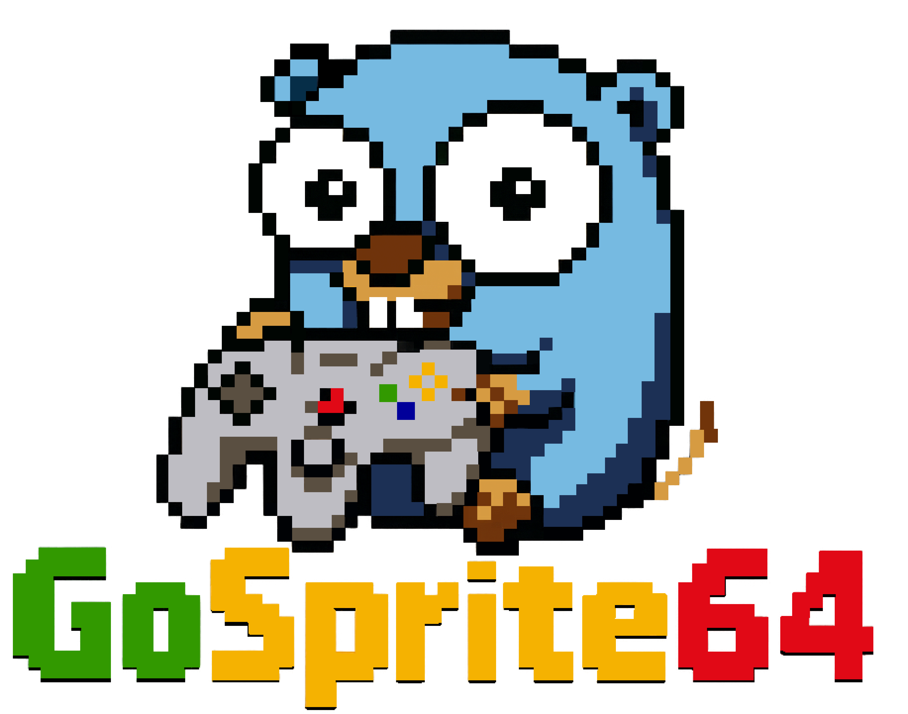
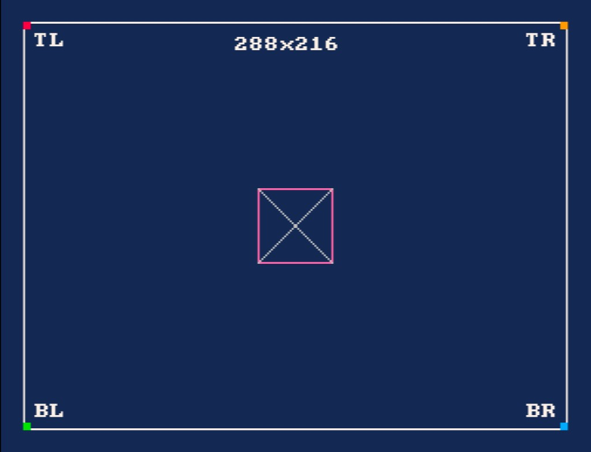
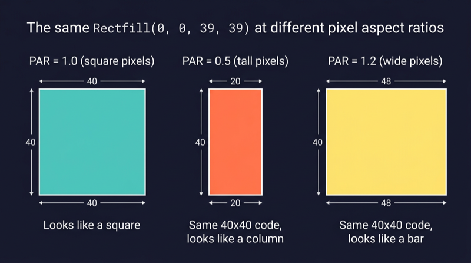
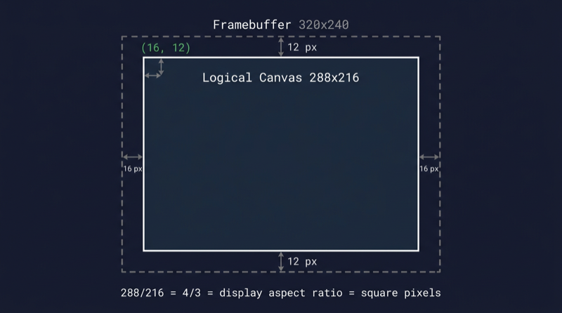
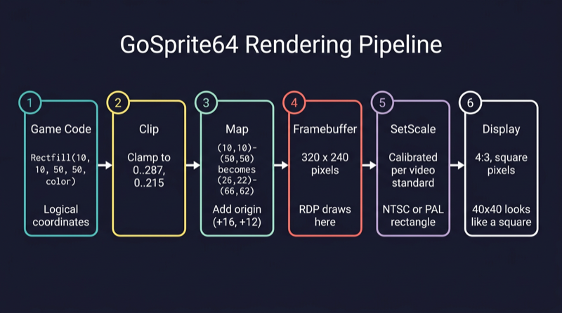

Why GoSprite64?

GoSprite64 is your portal to building retro-fueled 2D games for the Nintendo 64, using the modern power of Go. With clean APIs, minimal setup (Linux, Mac, Windows are all supported), and a rebellious retro soul, it lets you bring your pixel dreams to life - on real N64 hardware.
What’s GoSprite64?
GoSprite64 is a Go library for making 2D games that run natively on the Nintendo 64. It wraps low-level N64 quirks in a modern API inspired by modern game engines, so you can focus on your game logic - not the hardware headaches.
Designed for developers who love Go and grew up on cartridges, GoSprite64 makes retro dev surprisingly fun and productive.
Feature Highlights
GoSprite64 gives you a complete toolkit for N64 game development:
- Graphics - Drawing primitives, sprites with flip/scale/rotate, sprite sheets, animation player, custom bitmap fonts with alignment, parallax scrolling, screen transitions, and draw regions for split-screen
- Tile Scenes - Full Tile2D pipeline for authoring and rendering tile-based worlds with tile sheets and maps, bundles, and camera scrolling
- Audio - VADPCM-compressed sound effects and music, sequence player for MIDI-like playback, and instrument banks
- Input - D-pad and buttons, analog stick with deadzone, multi-controller support for up to 4 players, rumble pak control, and input recording/replay
- Game Systems - State machine with push/pop/switch, timers (one-shot and repeating), menus with D-pad navigation, and save data (EEPROM, SRAM, FlashRAM)
- 2D Math - Vectors, rectangles, AABB collision detection with sweep and resolution, easing functions, grid utilities, and deterministic random numbers
- 3D Graphics - 3D math (Mat4, Vec3, perspective/ortho projections), scene graph, display lists, and triangle rendering
Fixed Resolution
GoSprite64 exposes one official fixed resolution and drawing space: 288x216 logical pixels.
That is the public rendering contract for gameplay code. The runtime centers the canvas inside the framebuffer and presents it with square pixels, while public drawing APIs such as FillRect, DrawRect, DrawLine, and DrawText all operate in that same logical space.
If you build and run examples/calibration, you should see this reference frame:

For a deep dive into why pixels on the N64 are not always square and how GoSprite64 solves this, read the Square Pixels chapter.
Why Go?
Go is a clean, fast, pragmatic and efficient language. By using Go for Nintendo 64 development, GoSprite64 opens the door for cloud developers to create retro-style games with confidence and speed. The library bridges modern programming concepts with the raw power of a classic console.
What’s in This Book?
This book introduces you to GoSprite64, guiding you through everything from setup to building full 2D games.
You’ll learn how to:
- Build and flash N64 ROMs
- Draw and move sprites
- Design and scroll tilemaps
- Handle input from controllers
- Play sound effects and music
- Build game screens with state machines and menus
Whether you’re nostalgic for the era or just curious about console programming, this book aims to get you productive with GoSprite64 as fast as possible.
Who Is This Book For?
This book is for:
- Developers interested in retro console programming
- Go programmers curious about low-level game development
- Hobbyists or indie devs looking to make something fun for the Nintendo 64
Some experience with Go is recommended. If you’re brand new to game development or Go, consider starting with a simpler platform or tutorial first.
Helpful Links
- GoSprite64 GitHub - main development repo
- GoSprite64 Website - official docs and examples
- GoSprite64 Discussions - get help, share ideas, or show off your projects
- clktmr/n64 - low-level Go SDK for N64
- Embedded-Go - support for N64’s architecture
- Awesome N64 Dev - great collection of tools, docs, and inspiration
Feature Overview
A complete reference of every feature GoSprite64 provides, organized by section.
Core (gosprite64)
| Feature | Description | Docs |
|---|---|---|
Game interface | Init(), Update(), Draw() lifecycle for your game | Game Loop |
Run(g Game) | Starts the 60 FPS game loop with fixed timestep | Game Loop |
| 288x216 canvas | Fixed logical resolution for all drawing APIs | Fixed Canvas |
| 16-color palette | Built-in named colors: Black, White, Red, etc. | Colors |
Drawing Functions
| Feature | Description | Docs |
|---|---|---|
ClearScreen() | Fills the screen with black | Drawing Primitives |
ClearScreenWith(c) | Fills the screen with any color | Drawing Primitives |
FillRect(x1,y1,x2,y2,c) | Draws a filled rectangle | Drawing Primitives |
DrawRect(x1,y1,x2,y2,c) | Draws a rectangle outline | Drawing Primitives |
DrawLine(x1,y1,x2,y2,c) | Draws a 1px line (Bresenham for diagonals) | Drawing Primitives |
DrawText(str,x,y,c) | Draws text using the built-in 8x8 font | Drawing Primitives |
DrawImage(src,x,y) | Draws a Go image.Image at logical coordinates | Drawing Primitives |
DrawWorldImage(src,x,y,cam) | Draws an image offset by camera position | Drawing Primitives |
Sprites
| Feature | Description | Docs |
|---|---|---|
LoadSpriteSheet(path) | Loads a .sheet file from the cartridge filesystem | Sprite Sheets |
SpriteSheet.FrameCount() | Returns the number of frames in the sheet | Sprite Sheets |
SpriteSheet.FrameWidth() | Returns the pixel width of a single frame | Sprite Sheets |
SpriteSheet.FrameHeight() | Returns the pixel height of a single frame | Sprite Sheets |
DrawSprite(sheet,frame,x,y) | Draws a sprite frame at logical coordinates | Sprites |
DrawSpriteWithOptions(...) | Draws with flip, scale, rotation, blend, and alpha | Sprites |
DrawWorldSprite(...) | Draws a sprite offset by camera position | Sprites |
DrawWorldSpriteWithOptions(...) | World-space sprite with full draw options | Sprites |
DrawSpriteOptions | Struct: FlipH, FlipV, ScaleX/Y, Rotation, Origin, Blend, Alpha | Sprites |
BlendNone, BlendMasked, BlendAlpha | Blend mode constants for sprite drawing | Sprites |
Animation
| Feature | Description | Docs |
|---|---|---|
AnimationSet | Collection of named animation clips loaded from .anim files | Animation Player |
AnimationClip | A single animation: name, FPS, and frame indices | Animation Player |
NewAnimationPlayer() | Creates a player that drives sprite frame changes | Animation Player |
AnimationPlayer.Play(clip) | Starts playing a clip from the beginning | Animation Player |
AnimationPlayer.Advance(ticks) | Advances the animation by N ticks (call each frame with 1) | Animation Player |
AnimationPlayer.Frame() | Returns the current sprite sheet frame index | Animation Player |
AnimationPlayer.SetLoop(bool) | Enables or disables looping | Animation Player |
AnimationPlayer.Pause/Resume/Stop/Restart | Playback control | Animation Player |
AnimationPlayer.Playing() / Done() | Status queries | Animation Player |
Custom Fonts
| Feature | Description | Docs |
|---|---|---|
NewFont(sheet, glyphs, lineHeight) | Creates a font from a sprite sheet and glyph map | Custom Fonts |
Font.DrawTextEx(text, x, y, align) | Draws text with left/center/right alignment | Text Alignment |
Font.MeasureText(text) | Returns pixel width and height of rendered text | Custom Fonts |
Font.WrapText(text, maxWidth) | Inserts newlines to fit text within a pixel width | Text Alignment |
FormatScore(score, width) | Formats an integer with leading zeros | Custom Fonts |
AlignLeft, AlignCenter, AlignRight | Text alignment constants | Text Alignment |
Parallax Scrolling
| Feature | Description | Docs |
|---|---|---|
NewParallaxConfig(speeds...) | Configures multi-layer parallax with speed factors | Parallax Scrolling |
ParallaxConfig.LayerOffset(layer, camX, camY) | Returns the scroll offset for a given layer and camera | Parallax Scrolling |
ParallaxLayer | Defines SpeedX and SpeedY multipliers (0.0 = static, 1.0 = full speed) | Parallax Scrolling |
Screen Transitions
| Feature | Description | Docs |
|---|---|---|
StartTransition(style, frames) | Begins a fade transition over N frames | Transitions |
FadeToBlack, FadeFromBlack | Transition style constants | Transitions |
Transition.Advance() | Steps the transition forward one frame | Transitions |
Transition.Draw() | Renders the transition overlay | Transitions |
Transition.Done() / Active() / Stop() | Status and control | Transitions |
Draw Regions
| Feature | Description | Docs |
|---|---|---|
SetDrawRegion(x, y, w, h) | Restricts drawing to a sub-rectangle (for split-screen) | Draw Regions |
ResetDrawRegion() | Pops the most recent draw region | Draw Regions |
DrawRegion.Clip(...) | Offsets and clips coordinates to region bounds | Draw Regions |
DrawRegion.ContainsPoint(x, y) | Hit-tests a local coordinate against the region | Draw Regions |
Input
| Feature | Description | Docs |
|---|---|---|
IsButtonDown(button) | Returns true while a button is held (port 0) | D-Pad and Buttons |
IsButtonJustPressed(button) | Returns true on the frame a button is first pressed (port 0) | D-Pad and Buttons |
StickPosition(deadzone) | Returns analog stick X/Y in [-1.0, 1.0] (port 0) | Analog Stick |
PlayerButtonDown(port, button) | Per-port button check for multiplayer | Multi-Controller |
PlayerButtonJustPressed(port, button) | Per-port just-pressed check | Multi-Controller |
PlayerStickPosition(port, deadzone) | Per-port analog stick | Multi-Controller |
IsControllerConnected(port) | Checks if a controller is plugged in | Multi-Controller |
ConnectedControllers() | Returns the number of connected controllers | Multi-Controller |
SetRumble(port, enabled) | Turns the Rumble Pak on or off | Rumble |
| Button constants | ButtonA, ButtonB, ButtonZ, ButtonStart, ButtonDPadUp/Down/Left/Right, ButtonL, ButtonR, ButtonCUp/Down/Left/Right | D-Pad and Buttons |
Input Recording and Replay
| Feature | Description | Docs |
|---|---|---|
NewInputRecorder(playerCount) | Creates a recorder that captures per-frame controller state | Input Replay |
InputRecorder.CaptureFrame(player, input) | Records one frame of input | Input Replay |
InputRecorder.Finish() | Finalizes recording into ReplayData | Input Replay |
NewInputPlayer(data) | Creates a player that replays recorded input | Input Replay |
InputPlayer.NextFrame(player) | Returns the next frame of recorded input | Input Replay |
InputPlayer.Done() / Reset() | Playback status and restart | Input Replay |
Audio
| Feature | Description | Docs |
|---|---|---|
RegisterAudioBundle(bundle) | Registers VADPCM audio assets before the game loop starts | SFX and Music |
PlaySoundEffect(id) | Triggers a one-shot sound effect | SFX and Music |
PlayMusic(id) | Starts background music playback | SFX and Music |
StopMusic() | Stops the current music track | SFX and Music |
SetSoundEffectVolume(v) | Sets SFX volume (0.0 to 1.0) | SFX and Music |
SetMusicVolume(v) | Sets music volume (0.0 to 1.0) | SFX and Music |
sequence.NewPlayer() | Creates a MIDI-like sequence player | Sequence Player |
sequence.Player.Play/Stop/Pause/Resume | Sequence playback control | Sequence Player |
sequence.Player.SetTempo(bpm) | Sets playback tempo | Sequence Player |
sequence.Player.SetLoop(start, count) | Configures loop points | Sequence Player |
Tile Scene Pipeline
| Feature | Description | Docs |
|---|---|---|
OpenBundle(path) | Opens a .bundle file containing sheets, maps, and animations | Bundles and Loading |
LoadScene(bundle) | Loads all assets from a bundle into a renderable scene | Pipeline Overview |
Scene.Draw(cam) | Renders visible tiles to the screen through the camera | Camera and Scrolling |
Scene.Map() | Returns the scene’s Map for tile queries | Tile Sheets and Maps |
Map.Width() / Height() | Map dimensions in tiles | Tile Sheets and Maps |
Map.TileWidth() / TileHeight() | Tile dimensions in pixels | Tile Sheets and Maps |
Map.PixelWidth() / PixelHeight() | Total map size in pixels | Tile Sheets and Maps |
Map.TileAt(layer, col, row) | Returns the tile ID at a grid cell | Tile Sheets and Maps |
Scene.Stats() | Returns RuntimeStats with visible tile count and upload count | Pipeline Overview |
Camera
| Feature | Description | Docs |
|---|---|---|
Camera struct | Position, size, zoom, follow target, bounds, and screen shake | Camera and Scrolling |
Camera.WorldToScreen(x, y) | Converts world coordinates to screen space | Camera and Scrolling |
Camera.UpdateFollow() | Smoothly moves camera toward the follow target | Camera and Scrolling |
Camera.ClampToBounds() | Prevents the camera from leaving the world bounds | Camera and Scrolling |
Camera.AddTrauma(amount) | Adds screen shake intensity (0 to 1) | Camera and Scrolling |
Camera.ShakeOffset() | Returns the current shake displacement for drawing | Camera and Scrolling |
Game Systems
State Machine
| Feature | Description | Docs |
|---|---|---|
GameState interface | Enter(), Update(), Draw(), Exit() for each screen | State Machine |
NewStateMachine(initial) | Creates a state machine with an initial state | State Machine |
StateMachine.Switch(state) | Replaces the top state (calls Exit then Enter) | State Machine |
StateMachine.Push(state) | Overlays a new state (for pause menus, dialogs) | State Machine |
StateMachine.Pop() | Removes the top state and returns to the one below | State Machine |
StateMachine.Update() / Draw() | Delegates to the top state | State Machine |
Timers
| Feature | Description | Docs |
|---|---|---|
NewTimer(frames) | Creates a countdown timer | Timers |
Timer.Tick() | Advances by one frame; returns true on the finishing frame | Timers |
Timer.Done() / Progress() / Remaining() | Status queries | Timers |
Timer.Reset() / ResetWith(frames) | Restart the timer | Timers |
NewRepeatingTimer(interval) | Creates a timer that fires every N frames | Timers |
RepeatingTimer.Tick() | Returns true on trigger frames | Timers |
RepeatingTimer.Count() | Returns how many times it has triggered | Timers |
Menus
| Feature | Description | Docs |
|---|---|---|
NewMenu(items) | Creates a D-pad-navigated menu from MenuItem entries | Menus |
Menu.HandleInput() | Reads the controller and moves the cursor; returns true on confirm | Menus |
Menu.Draw() | Renders the menu with cursor indicator | Menus |
Menu.MoveUp() / MoveDown() | Manual cursor movement (skips disabled items) | Menus |
MenuItem | Struct: Label, Disabled, OnConfirm callback | Menus |
Save Data
| Feature | Description | Docs |
|---|---|---|
save.Storage interface | Uniform API for EEPROM, SRAM, and FlashRAM | Save Data |
save.ReadAll(s) / WriteAll(s, data) | Read or write the entire save storage | Save Data |
save.Checksum(data) | Additive checksum for save integrity | Save Data |
| Storage types | StorageEEPROM4K (512B), StorageEEPROM16K (2KB), StorageSRAM (32KB), StorageFlashRAM (128KB) | Save Data |
2D Math (math2d)
Vectors
| Feature | Description | Docs |
|---|---|---|
Vec2 | 2D vector with X, Y float32 fields | Vectors |
Add, Sub, Scale, Negate, Abs | Arithmetic operations | Vectors |
Length, LengthSq, Normalize | Magnitude and normalization | Vectors |
Dot, Distance, DistanceSq | Products and distances | Vectors |
Lerp, Rotate, Angle | Interpolation and rotation | Vectors |
Min, Max | Component-wise min/max | Vectors |
Rectangles
| Feature | Description | Docs |
|---|---|---|
Rect | Axis-aligned rectangle: X, Y, W, H | Rectangles |
RectFromCenter(center, w, h) | Creates a rect centered on a point | Rectangles |
ContainsPoint, ContainsRect, Overlaps | Spatial queries | Rectangles |
Intersection, Expand, Center | Rect operations | Rectangles |
Collision Detection
| Feature | Description | Docs |
|---|---|---|
AABBOverlap(a, b) | Returns true if two rects overlap | Collision Detection |
AABBPenetration(a, b) | Returns the minimum penetration vector | Collision Detection |
AABBResolve(a, b) | Pushes rect a out of rect b | Collision Detection |
AABBSweep(a, vel, b) | Swept AABB test: returns hit time and normal | Collision Detection |
Layer, Collider, ColliderOverlap | Layer-masked collision filtering | Collision Detection |
Easing Functions
| Feature | Description | Docs |
|---|---|---|
Clamp(v, lo, hi) | Restricts a value to a range | Easing Functions |
Lerp(a, b, t) | Linear interpolation | Easing Functions |
InvLerp(a, b, v) | Inverse lerp (returns 0-1 ratio) | Easing Functions |
Remap(v, inMin, inMax, outMin, outMax) | Maps a value from one range to another | Easing Functions |
MoveToward(current, target, maxDelta) | Moves toward target by at most maxDelta | Easing Functions |
EaseInQuad, EaseOutQuad, EaseInOutQuad | Quadratic easing | Easing Functions |
EaseInCubic, EaseOutCubic, EaseInOutCubic | Cubic easing | Easing Functions |
SmoothStep(edge0, edge1, x) | Hermite interpolation | Easing Functions |
Grid Utilities
| Feature | Description | Docs |
|---|---|---|
NewGrid[T](cols, rows) | Creates a generic 2D grid | Grid Utilities |
Get, Set, Clear, Fill | Cell access and bulk operations | Grid Utilities |
ScanRow, ScanCol | Run-length scanning for matching groups | Grid Utilities |
CountValue, FindAll, Neighbors4 | Queries and spatial helpers | Grid Utilities |
Random Numbers
| Feature | Description | Docs |
|---|---|---|
NewRand(seed) | Creates a deterministic xoshiro128** PRNG | Random Numbers |
Uint32, Intn(n), Float32 | Raw random values | Random Numbers |
RangeInt(min, max), RangeFloat32(min, max) | Range-bounded random values | Random Numbers |
Bool() | Random boolean | Random Numbers |
3D Graphics
| Feature | Description | Docs |
|---|---|---|
math3d.Mat4 | 4x4 matrix with multiply, perspective, ortho, lookAt, translate, rotate, scale | 3D Math |
math3d.Vec3 / Vec4 | 3D and 4D vectors with arithmetic, dot, cross, normalize | 3D Math |
math3d.Viewport | Maps clip-space to screen coordinates | 3D Math |
scene3d.NewScene() | Creates a 3D scene graph | Scene Graph |
scene3d.Node | Scene graph node with transform, children, and render function | Scene Graph |
scene3d.NewMeshNode(name, dl) | Creates a node that renders a display list | Scene Graph |
scene3d.NewPerspectiveCamera(...) | Creates a perspective camera node | Scene Graph |
scene3d.NewOrthoCamera(...) | Creates an orthographic camera node | Scene Graph |
scene3d.DrawScene(scene) | Traverses the scene graph and renders | Triangle Rendering |
gfx.DisplayList | GPU command buffer for triangle rendering | Display Lists |
Low-Level
| Feature | Description | Docs |
|---|---|---|
dma.CartToRDRAM(offset, dst) | DMA transfer from cartridge ROM to RDRAM | DMA Transfers |
dma.SRAMRead / SRAMWrite | Direct SRAM access via DMA | DMA Transfers |
dma.NewPool(base, size) | Memory pool with head/tail allocation | Memory Pools |
dma.NewSegmentTable() | Segment address translation table | DMA Transfers |
rspq.NewQueue() | RSP task queue for submitting microcode tasks | RSP Task Queue |
rspq.Load(microcode) | Loads RSP microcode | RSP Task Queue |
n64os.NewMessageQueue(size) | OS-level message queue for event handling | N64 OS Primitives |
n64os.NewScheduler(events, fn) | Task scheduler for graphics and audio | N64 OS Primitives |
n64os.NewEventRouter() | Routes hardware events to message queues | N64 OS Primitives |
n64os.NewTimer(queue, msg, interval) | OS-level timer with message delivery | N64 OS Primitives |
Complete Game Examples
These examples in the repository demonstrate full games built with GoSprite64:
| Example | Description |
|---|---|
examples/pong | Classic Pong with AI, scoring, collision, and audio |
examples/space_invaders | Space Invaders with enemies, bullets, waves, and game-over state |
examples/platformer | Side-scrolling platformer from the tutorial (tiles, sprites, animation, state machine, transitions) |
Getting Started
This repository supports one setup path: build natively with go1.24.5-embedded and n64go@v0.1.2. If that native bootstrap is unavailable on your host, use the Linux fallback below.
Installation
- Clone the repository:
git clone https://github.com/drpaneas/gosprite64.git
cd gosprite64
- Install the EmbeddedGo toolchain:
go install github.com/embeddedgo/dl/go1.24.5-embedded@latest
go1.24.5-embedded download
- If macOS aborts with the
__DATA/__DWARFdyld error, retry once with:
BOOT_GO_LDFLAGS=-w go1.24.5-embedded download
- Install
n64go:
go install github.com/clktmr/n64/tools/n64go@v0.1.2
- Build all examples with the supported native-first workflow:
chmod +x ./build_examples.sh
./build_examples.sh
n64.env is the only tracked toolchain configuration file:
GOTOOLCHAIN=go1.24.5-embedded
GOOS=noos
GOARCH=mips64
GOFLAGS='-tags=n64' '-trimpath' '-ldflags=-M=0x00000000:8M -F=0x00000400:8M -stripfn=1'
GoSprite64 exposes one official fixed resolution and drawing canvas: 288x216 logical pixels. The runtime centers that canvas and handles presentation scaling for you, so gameplay code should not manage borders, safe areas, or video-mode presets directly.
If you want to verify the fixed-resolution presentation visually, run examples/calibration/game.z64 in ares after the build. The expected calibration frame looks like this:
Windows
On Windows, install Git for Windows and run all commands from a Git Bash terminal. The same steps above apply - Git Bash provides the bash environment the build scripts require.
Linux Fallback
If the native bootstrap fails on your macOS host, ./build_examples.sh prints Linux fallback instructions and exits. Run the Linux fallback yourself:
docker run --rm --platform linux/arm64 \
-v "$PWD:/workspace/gosprite64" \
-v gosprite64-gomod:/go/pkg/mod \
-v gosprite64-gobuild:/root/.cache/go-build \
-v gosprite64-sdk:/root/sdk \
-w /workspace/gosprite64 \
golang:1.26-bookworm \
bash ./scripts/dev-linux-build.sh
The generated *.z64 ROMs are written under examples/ and can be run with your emulator, for example ares. If you want to verify the square-pixel layout visually, start with examples/calibration/game.z64.
Hello World
This guide walks you through creating a standalone N64 game project from scratch using GoSprite64. By the end you will have a blue screen ROM that proves your toolchain is set up correctly.
Prerequisites
Complete the Getting Started guide first. You need:
go(standard Go, for dependency resolution)go1.24.5-embedded(EmbeddedGo toolchain, for building)n64go(ROM tool)
Create the project
mkdir -p ~/gocode/src/github.com/yourname/mygame
cd ~/gocode/src/github.com/yourname/mygame
Initialize the module
go mod init github.com/yourname/mygame
Write main.go
Create main.go with the following content:
package main
import "github.com/drpaneas/gosprite64"
type Game struct{}
func (g *Game) Init() {}
func (g *Game) Update() {}
func (g *Game) Draw() { gosprite64.ClearScreenWith(gosprite64.Blue) }
func main() { gosprite64.Run(&Game{}) }
Every GoSprite64 game implements three methods on a struct:
Init()runs once at startupUpdate()runs every frame for game logicDraw()runs every frame for rendering
gosprite64.Run() starts the game loop and never returns.
GoSprite64 exposes one official fixed resolution and drawing space: 288x216 logical pixels. gosprite64.ClearScreen() is the frame-start background clear, while drawing helpers such as gosprite64.FillRect, gosprite64.DrawRect, gosprite64.DrawLine, and gosprite64.DrawText use logical coordinates inside that fixed canvas.
Add the n64.env file
Create n64.env in the project root:
GOTOOLCHAIN=go1.24.5-embedded
GOOS=noos
GOARCH=mips64
GOFLAGS='-tags=n64' '-trimpath' '-ldflags=-M=0x00000000:8M -F=0x00000400:8M -stripfn=1'
This tells the Go toolchain to cross-compile for the N64 (MIPS64, no OS).
Resolve dependencies
Run go mod tidy with a clean Go environment to avoid interference from any inherited N64 variables:
env -u GOENV -u GOOS -u GOARCH -u GOFLAGS -u GOTOOLCHAIN go mod tidy
This downloads GoSprite64 and its transitive dependencies.
Build
Compile the project and produce the ROM:
GOENV=n64.env go1.24.5-embedded build -o game.elf .
GOENV=n64.env n64go rom game.elf
The first command cross-compiles your code for the N64 (MIPS64, no OS) using the settings in n64.env, producing game.elf. The second converts the ELF into an N64 ROM (game.z64).
Run
Load game.z64 in an emulator like ares to see a blue screen. When you want to inspect the canvas boundaries and square-pixel presentation, compare it with the repository’s examples/calibration ROM.
Editor support
If gopls reports embedded/* packages as missing or does not recognize files guarded by //go:build n64, see the editor setup section in Getting Started.
Project structure
Your project should now look like this:
mygame/
main.go # your game code
go.mod # module definition + dependencies
go.sum # dependency checksums (auto-generated)
n64.env # N64 build target configuration
game.elf # compiled binary (after build)
game.z64 # N64 ROM (after build)
Next steps
Now that your toolchain works, try changing gosprite64.ClearScreenWith(gosprite64.Blue) to another color like gosprite64.Red, gosprite64.Green, or gosprite64.DarkPurple and rebuild. See examples/clearscreen in the repository for this exact pattern. Then explore the examples in the GoSprite64 repository to learn about input handling, drawing shapes, text rendering, and audio.
Editor Setup
Cursor / VS Code
If gopls reports embedded/* packages as missing or does not recognize files guarded by //go:build n64, configure the workspace so the editor uses the same build tag and toolchain environment as the terminal.
Create .vscode/settings.json in the repository with:
{
"go.buildTags": "n64",
"go.toolsEnvVars": {
"GOENV": "${workspaceFolder}/n64.env"
},
"gopls": {
"build.buildFlags": ["-tags=n64"],
"env": {
"GOENV": "${workspaceFolder}/n64.env"
}
}
}
If the Go extension still invokes the wrong go binary for editor actions, add:
"go.alternateTools": {
"go": "go1.24.5-embedded"
}
After changing the settings, run Go: Restart Language Server or Developer: Reload Window.
Step 1: Start the Engine
Set up a minimal GoSprite64 project that compiles, runs, and draws a solid blue screen.
What you will learn
- The Game interface (Init, Update, Draw)
- How
gosprite64.Runstarts the engine - How to clear the screen with a color
- How to build and run an N64 ROM
The code
Create examples/platformer/main.go:
package main
import (
"github.com/drpaneas/gosprite64"
)
type Game struct{}
func (g *Game) Init() {}
func (g *Game) Update() {}
func (g *Game) Draw() {
gosprite64.ClearScreenWith(gosprite64.Blue)
}
func main() {
gosprite64.Run(&Game{})
}
How it works
Every GoSprite64 game is a struct that implements three methods:
| Method | Called | Purpose |
|---|---|---|
Init() | Once at startup | Load assets, set initial state |
Update() | 60 times per second | Game logic, input handling |
Draw() | Every frame after Update | Render everything to the screen |
gosprite64.Run(&Game{}) boots the N64 hardware, initializes the display, calls your Init() once, then enters an infinite loop calling Update() and Draw() at 60 FPS.
ClearScreenWith(color) fills the entire 288x216 pixel framebuffer with a solid color. The engine provides 16 built-in colors (Black, DarkBlue, Blue, Green, Red, White, Yellow, etc.). Here we use Blue to get a sky-colored background.
Build and run
You also need an asset embed file. Create examples/platformer/assets_embed.go:
package main
import (
"embed"
"github.com/clktmr/n64/drivers/cartfs"
"github.com/drpaneas/gosprite64"
)
//go:embed assets/*
var embeddedAssets embed.FS
var assetFS = cartfs.Embed(embeddedAssets)
func init() {
gosprite64.RegisterAssetFS(assetFS)
}
For now, create a placeholder assets directory so the embed does not fail:
mkdir -p examples/platformer/assets
touch examples/platformer/assets/.gitkeep
Build and run:
GOENV=n64.env go1.24.5-embedded build -o examples/platformer/game.elf ./examples/platformer
n64go rom examples/platformer/game.elf
Open game.z64 in the ares emulator. You should see a solid blue screen filling the display. That is your game running on N64 hardware - the simplest possible starting point.
What comes next
In the next steps we will add a tile world, a player character, animation, and controls. But the structure will always be the same: load things in Init, update state in Update, draw everything in Draw.
Your First Tile Game
This tutorial walks you through building a complete tile-based game for the Nintendo 64 from scratch. By the end you will have a scrollable tile world with a green grass border, brown dirt patches, controller input, and a debug overlay - all running as a real N64 ROM.
No prior game development experience is required. You should be comfortable with basic Go (variables, structs, functions) and the command line.
What you will build
A simple top-down tile world where:
- The screen shows a portion of a larger tile map
- You scroll the camera around with the D-pad
- Green tiles form walls around the edges
- Brown tiles form dirt patches scattered inside
- A debug overlay shows how many tiles are visible
This is the simplest possible tile game, but it uses the same pipeline you would use for a real project: authored assets, offline compilation, bundle loading, scene rendering, and camera control.
Prerequisites
Complete the Getting Started guide first. You need these tools installed:
| Tool | Purpose |
|---|---|
go | Standard Go (dependency resolution, code generation) |
go1.24.5-embedded | EmbeddedGo toolchain (cross-compiles for N64) |
n64go | Converts compiled ELF binaries into N64 ROM files |
| An emulator | ares is recommended for testing |
Verify your tools work by running ./build_examples.sh in the GoSprite64 repository. If that prints “All examples built successfully!”, you are ready.
Step 1: Create the project
Create a new directory for your game and initialize a Go module:
mkdir -p ~/gocode/src/github.com/yourname/myfirstgame
cd ~/gocode/src/github.com/yourname/myfirstgame
go mod init github.com/yourname/myfirstgame
Replace yourname with your GitHub username or any name you like.
Step 2: Create the toolchain config
Every GoSprite64 project needs an n64.env file that tells Go how to cross-compile for the N64. Create it in your project root:
GOTOOLCHAIN=go1.24.5-embedded
GOOS=noos
GOARCH=mips64
GOFLAGS='-tags=n64' '-trimpath' '-ldflags=-M=0x00000000:8M -F=0x00000400:8M -stripfn=1'
You will never need to edit this file. It is the same for every GoSprite64 project.
Step 3: Draw your tilesheet
A tilesheet is a small PNG image that contains all the tile graphics your game uses, arranged in a grid. Each tile is a fixed-size square (8x8 pixels by default).
Create a assets-src/ directory and draw a tiles.png file:
mkdir -p assets-src
Using any pixel editor (Aseprite, GIMP, Pixelorama, or even MS Paint), create a 16x8 pixel PNG with two 8x8 tiles side by side:
+--------+--------+
| tile 1 | tile 2 |
| green | brown |
| (grass)| (dirt) |
+--------+--------+
8x8 px 8x8 px
- Tile 1 (left half): Fill with a green color like
#228B22 - Tile 2 (right half): Fill with a brown color like
#8B5A2B
Save it as assets-src/tiles.png.
The important rules for tilesheets:
- The image width must be divisible by the tile width (8)
- The image height must be divisible by the tile height (8)
- Tile IDs start at 1 (tile 1 is top-left, tile 2 is next to the right, and so on)
- Tile ID 0 means “empty” - nothing is drawn
Step 4: Design your map
A map is a grid of tile IDs that describes what your world looks like. Create assets-src/level.json:
{
"width": 48,
"height": 36,
"layer_count": 1,
"cell_bits": 16,
"chunk_width": 8,
"chunk_height": 8,
"layers": [
{
"sheet_id": 1,
"cells": [
1,1,1,1,1,1,1,1,1,1,1,1,1,1,1,1,1,1,1,1,1,1,1,1,1,1,1,1,1,1,1,1,1,1,1,1,1,1,1,1,1,1,1,1,1,1,1,1,
1,0,0,0,0,0,0,0,0,0,0,0,0,0,0,0,0,0,0,0,0,0,0,0,0,0,0,0,0,0,0,0,0,0,0,0,0,0,0,0,0,0,0,0,0,0,0,1,
1,0,0,0,0,0,0,0,0,0,0,0,0,0,0,0,0,0,0,0,0,0,0,0,0,0,0,0,0,0,0,0,0,0,0,0,0,0,0,0,0,0,0,0,0,0,0,1,
1,0,0,2,2,2,0,0,0,0,0,0,0,0,0,0,0,0,0,0,2,2,2,2,0,0,0,0,0,0,0,0,0,0,0,0,0,0,2,2,0,0,0,0,0,0,0,1,
1,0,0,2,2,2,0,0,0,0,0,0,0,0,0,0,0,0,0,0,2,2,2,2,0,0,0,0,0,0,0,0,0,0,0,0,0,0,2,2,0,0,0,0,0,0,0,1,
1,0,0,0,0,0,0,0,0,0,0,0,0,0,0,0,0,0,0,0,0,0,0,0,0,0,0,0,0,0,0,0,0,0,0,0,0,0,0,0,0,0,0,0,0,0,0,1,
1,0,0,0,0,0,0,0,0,0,0,0,0,0,0,0,0,0,0,0,0,0,0,0,0,0,0,0,0,0,0,0,0,0,0,0,0,0,0,0,0,0,0,0,0,0,0,1,
1,0,0,0,0,0,0,0,0,0,2,2,0,0,0,0,0,0,0,0,0,0,0,0,0,0,0,0,0,0,2,2,2,0,0,0,0,0,0,0,0,0,0,0,0,0,0,1,
1,0,0,0,0,0,0,0,0,0,2,2,0,0,0,0,0,0,0,0,0,0,0,0,0,0,0,0,0,0,2,2,2,0,0,0,0,0,0,0,0,0,0,0,0,0,0,1,
1,0,0,0,0,0,0,0,0,0,0,0,0,0,0,0,0,0,0,0,0,0,0,0,0,0,0,0,0,0,0,0,0,0,0,0,0,0,0,0,0,0,0,0,0,0,0,1,
1,0,0,0,0,0,0,0,0,0,0,0,0,0,0,0,0,0,0,0,0,0,0,0,0,0,0,0,0,0,0,0,0,0,0,0,0,0,0,0,0,0,0,0,0,0,0,1,
1,0,0,0,0,0,0,0,0,0,0,0,0,0,0,0,0,0,0,0,0,0,0,0,0,0,0,0,0,0,0,0,0,0,0,0,0,0,0,0,0,0,0,0,0,0,0,1,
1,0,0,0,0,0,0,0,0,0,0,0,0,0,2,2,2,2,2,0,0,0,0,0,0,0,0,0,0,0,0,0,0,0,0,0,0,0,0,0,0,0,0,0,0,0,0,1,
1,0,0,0,0,0,0,0,0,0,0,0,0,0,2,0,0,0,2,0,0,0,0,0,0,0,0,0,0,0,0,0,0,0,2,2,2,0,0,0,0,0,0,0,0,0,0,1,
1,0,0,0,0,0,0,0,0,0,0,0,0,0,2,0,0,0,2,0,0,0,0,0,0,0,0,0,0,0,0,0,0,0,2,0,2,0,0,0,0,0,0,0,0,0,0,1,
1,0,0,0,0,0,0,0,0,0,0,0,0,0,2,0,0,0,2,0,0,0,0,0,0,0,0,0,0,0,0,0,0,0,2,0,2,0,0,0,0,0,0,0,0,0,0,1,
1,0,0,0,0,0,0,0,0,0,0,0,0,0,2,2,2,2,2,0,0,0,0,0,0,0,0,0,0,0,0,0,0,0,2,2,2,0,0,0,0,0,0,0,0,0,0,1,
1,0,0,0,0,0,0,0,0,0,0,0,0,0,0,0,0,0,0,0,0,0,0,0,0,0,0,0,0,0,0,0,0,0,0,0,0,0,0,0,0,0,0,0,0,0,0,1,
1,1,1,1,1,1,1,1,1,1,1,1,1,1,1,1,1,1,1,1,1,1,1,1,1,1,1,1,1,1,1,1,1,1,1,1,1,1,1,1,1,1,1,1,1,1,1,1,
1,1,1,1,1,1,1,1,1,1,1,1,1,1,1,1,1,1,1,1,1,1,1,1,1,1,1,1,1,1,1,1,1,1,1,1,1,1,1,1,1,1,1,1,1,1,1,1,
1,0,0,0,0,0,0,0,0,0,0,0,0,0,0,0,0,0,0,0,0,0,0,0,0,0,0,0,0,0,0,0,0,0,0,0,0,0,0,0,0,0,0,0,0,0,0,1,
1,0,0,0,0,0,0,0,0,0,0,0,0,0,0,0,0,0,0,0,0,0,0,0,0,0,0,0,0,0,0,0,0,0,0,0,0,0,0,0,0,0,0,0,0,0,0,1,
1,0,0,0,0,0,0,0,0,0,0,0,0,0,0,0,0,0,0,0,0,0,0,0,0,0,0,0,0,0,0,0,0,0,0,0,0,0,0,0,0,0,0,0,0,0,0,1,
1,0,0,0,0,2,2,0,0,0,0,0,0,0,0,0,0,0,0,0,0,0,0,0,0,2,2,2,2,2,0,0,0,0,0,0,0,0,0,0,0,0,0,0,0,0,0,1,
1,0,0,0,0,2,2,0,0,0,0,0,0,0,0,0,0,0,0,0,0,0,0,0,0,2,0,0,0,2,0,0,0,0,0,0,0,0,0,0,0,0,0,0,0,0,0,1,
1,0,0,0,0,2,2,0,0,0,0,0,0,0,0,0,0,0,0,0,0,0,0,0,0,2,0,0,0,2,0,0,0,0,0,0,0,0,2,2,2,0,0,0,0,0,0,1,
1,0,0,0,0,0,0,0,0,0,0,0,0,0,0,0,0,0,0,0,0,0,0,0,0,2,2,2,2,2,0,0,0,0,0,0,0,0,2,0,2,0,0,0,0,0,0,1,
1,0,0,0,0,0,0,0,0,0,0,0,0,0,0,0,0,0,0,0,0,0,0,0,0,0,0,0,0,0,0,0,0,0,0,0,0,0,2,2,2,0,0,0,0,0,0,1,
1,0,0,0,0,0,0,0,0,0,0,0,0,0,0,0,0,0,0,0,0,0,0,0,0,0,0,0,0,0,0,0,0,0,0,0,0,0,0,0,0,0,0,0,0,0,0,1,
1,0,0,0,0,0,0,0,0,0,0,0,0,0,0,0,0,0,0,0,0,0,0,0,0,0,0,0,0,0,0,0,0,0,0,0,0,0,0,0,0,0,0,0,0,0,0,1,
1,0,0,0,0,0,0,0,0,0,0,0,2,2,2,0,0,0,0,0,0,0,0,0,0,0,0,0,0,0,0,0,0,0,0,0,0,0,0,0,0,0,0,0,0,0,0,1,
1,0,0,0,0,0,0,0,0,0,0,0,2,2,2,0,0,0,0,0,0,0,0,0,0,0,0,0,0,0,0,0,0,0,0,0,0,0,0,0,0,0,0,0,0,0,0,1,
1,0,0,0,0,0,0,0,0,0,0,0,0,0,0,0,0,0,0,0,0,0,0,0,0,0,0,0,0,0,0,0,0,0,0,0,0,0,0,0,0,0,0,0,0,0,0,1,
1,0,0,0,0,0,0,0,0,0,0,0,0,0,0,0,0,0,0,0,0,0,0,0,0,0,0,0,0,0,0,0,0,0,0,0,0,0,0,0,0,0,0,0,0,0,0,1,
1,0,0,0,0,0,0,0,0,0,0,0,0,0,0,0,0,0,0,0,0,0,0,0,0,0,0,0,0,0,0,0,0,0,0,0,0,0,0,0,0,0,0,0,0,0,0,1,
1,1,1,1,1,1,1,1,1,1,1,1,1,1,1,1,1,1,1,1,1,1,1,1,1,1,1,1,1,1,1,1,1,1,1,1,1,1,1,1,1,1,1,1,1,1,1,1
]
}
]
}
Here is what the numbers mean:
| Tile ID | What it draws |
|---|---|
0 | Nothing (empty space, black background) |
1 | Green grass tile (from the left half of your tilesheet) |
2 | Brown dirt tile (from the right half of your tilesheet) |
The map is 48 tiles wide and 36 tiles tall. At 8 pixels per tile, that is 384x288 pixels - larger than the 288x216 screen, so you will be able to scroll around.
Understanding the JSON fields:
| Field | What it means |
|---|---|
width | How many tiles wide the map is |
height | How many tiles tall the map is |
layer_count | How many layers (we use 1 for simplicity) |
cell_bits | How many bits per tile ID (16 allows up to 65535 tile types) |
chunk_width / chunk_height | Internal rendering optimization (8 is a good default) |
sheet_id | Which tilesheet this layer uses (1 = first sheet) |
cells | The actual tile data, read left-to-right, top-to-bottom |
Step 5: Write the game code
Your game needs three files. Here is the first and most important one.
Create main.go:
//go:generate sh -c "mkdir -p assets && go run github.com/drpaneas/gosprite64/cmd/mk2dsheet -in assets-src/tiles.png -out assets/tiles.sheet -tile-width 8 -tile-height 8 && go run github.com/drpaneas/gosprite64/cmd/mk2dmap -in assets-src/level.json -out assets/level.map && go run github.com/drpaneas/gosprite64/cmd/mk2dbundle -sheet assets/tiles.sheet -map assets/level.map -out assets/level.bundle"
package main
import (
"fmt"
"github.com/drpaneas/gosprite64"
)
type Game struct {
scene *gosprite64.Scene
camera *gosprite64.Camera
}
func (g *Game) Init() {
bundle, err := gosprite64.OpenBundle("assets/level.bundle")
if err != nil {
panic(err)
}
scene, err := gosprite64.LoadScene(bundle)
if err != nil {
panic(err)
}
g.scene = scene
g.camera = &gosprite64.Camera{Width: 288, Height: 216}
}
func (g *Game) Update() {
if g.camera == nil {
return
}
speed := 1
if gosprite64.IsButtonDown(gosprite64.ButtonDPadUp) {
g.camera.Y -= speed
}
if gosprite64.IsButtonDown(gosprite64.ButtonDPadDown) {
g.camera.Y += speed
}
if gosprite64.IsButtonDown(gosprite64.ButtonDPadLeft) {
g.camera.X -= speed
}
if gosprite64.IsButtonDown(gosprite64.ButtonDPadRight) {
g.camera.X += speed
}
m := g.scene.Map()
if m == nil {
return
}
maxX := m.PixelWidth() - g.camera.Width
maxY := m.PixelHeight() - g.camera.Height
if g.camera.X < 0 {
g.camera.X = 0
}
if g.camera.Y < 0 {
g.camera.Y = 0
}
if g.camera.X > maxX {
g.camera.X = maxX
}
if g.camera.Y > maxY {
g.camera.Y = maxY
}
}
func (g *Game) Draw() {
gosprite64.ClearScreen()
if g.scene != nil && g.camera != nil {
g.scene.Draw(g.camera)
}
if g.scene != nil {
stats := g.scene.Stats()
gosprite64.DrawText(fmt.Sprintf("vis:%d", stats.VisibleTiles), 2, 2, gosprite64.White)
}
}
func main() {
gosprite64.Run(&Game{})
}
Let’s walk through what each part does:
The //go:generate line
//go:generate sh -c "mkdir -p assets && go run .../mk2dsheet ... && go run .../mk2dmap ... && go run .../mk2dbundle ..."
This tells Go’s go generate command to run three tools in sequence:
mk2dsheetconverts yourtiles.pnginto a compiled.sheetfilemk2dmapconverts yourlevel.jsoninto a compiled.mapfilemk2dbundlepackages the.sheetand.mapinto one.bundlemanifest
You run this once after changing your assets. You do not run it every build.
The Game struct
type Game struct {
scene *gosprite64.Scene
camera *gosprite64.Camera
}
Every GoSprite64 game is a struct that implements three methods: Init, Update, and Draw. The scene holds your loaded tile world. The camera defines which portion of the world is visible on screen.
Init - load your world
func (g *Game) Init() {
bundle, err := gosprite64.OpenBundle("assets/level.bundle")
scene, err := gosprite64.LoadScene(bundle)
g.scene = scene
g.camera = &gosprite64.Camera{Width: 288, Height: 216}
}
OpenBundle reads the bundle manifest. LoadScene loads all the sheets and map data into memory and prepares them for rendering. The camera is set to 288x216 - the full screen size - so the scene fills the entire display.
Update - handle input
func (g *Game) Update() {
if gosprite64.IsButtonDown(gosprite64.ButtonDPadUp) {
g.camera.Y -= speed
}
// ... same for Down, Left, Right
}
Update runs every frame (60 times per second). Here we check the D-pad and move the camera. The camera position is then clamped so it cannot scroll past the edges of the map.
Draw - render the frame
func (g *Game) Draw() {
gosprite64.ClearScreen()
g.scene.Draw(g.camera)
gosprite64.DrawText(fmt.Sprintf("vis:%d", stats.VisibleTiles), 2, 2, gosprite64.White)
}
ClearScreen fills the screen with black. scene.Draw(camera) renders only the tiles visible through the camera viewport - not the entire map. DrawText overlays debug info showing how many tiles are currently visible.
Step 6: Write the asset embed file
The N64 loads assets from cartridge storage. Go’s //go:embed directive bakes your compiled assets into the ROM binary. Create assets_embed.go:
package main
import (
"embed"
"github.com/clktmr/n64/drivers/cartfs"
"github.com/drpaneas/gosprite64"
)
//go:embed assets/*
var embeddedAssets embed.FS
var assetFS = cartfs.Embed(embeddedAssets)
func init() {
gosprite64.RegisterAssetFS(assetFS)
}
This file does one thing: it makes your .sheet, .map, and .bundle files available to OpenBundle at runtime. Without it, the game cannot find its assets.
You write this file once. You do not need to edit it when you change your assets.
Step 7: Resolve dependencies
env -u GOENV -u GOOS -u GOARCH -u GOFLAGS -u GOTOOLCHAIN go mod tidy
The env -u ... prefix clears any N64-specific environment variables so go mod tidy runs with your normal Go toolchain. This downloads GoSprite64 and all its dependencies.
Step 8: Generate the compiled assets
go generate ./...
This runs the //go:generate line from your main.go and produces three files:
assets/
tiles.sheet # compiled tilesheet (binary)
level.map # compiled map (binary)
level.bundle # manifest that ties them together
You should see no output if everything works. If you see an error, check that your tiles.png is exactly 16x8 pixels and your level.json is valid JSON.
Step 9: Build the ROM
GOENV=n64.env go1.24.5-embedded build -o game.elf .
GOENV=n64.env n64go rom game.elf
The first command cross-compiles your game for the N64 (MIPS64, no operating system). The second converts the binary into a .z64 ROM file.
Step 10: Run it
Open game.z64 in the ares emulator.
You should see a tile world filling the entire screen: green grass forming a border with brown dirt patches scattered inside. Use the D-pad (arrow keys in most emulator keybindings) to scroll around. The vis: counter in the top-left shows how many tiles are being drawn each frame.
If the D-pad does not work, check your emulator’s input settings. In ares, go to Settings > Input and make sure the N64 D-pad buttons are mapped to your keyboard arrow keys.
Project structure
Your project should now look like this:
myfirstgame/
main.go # game code (Init, Update, Draw)
assets_embed.go # embeds compiled assets into the ROM
assets-src/
tiles.png # your hand-drawn tilesheet (source)
level.json # your map layout (source)
assets/
tiles.sheet # compiled tilesheet (generated)
level.map # compiled map (generated)
level.bundle # bundle manifest (generated)
n64.env # N64 build settings
go.mod # Go module file
go.sum # dependency checksums
game.elf # compiled binary (after build)
game.z64 # N64 ROM (after build)
Files under assets-src/ are your source files that you edit by hand. Files under assets/ are generated and should not be edited. Regenerate them with go generate ./... whenever you change your source assets.
What to try next
Now that you have a working tile game, here are some things to experiment with:
Change the map layout. Edit level.json and rearrange the tile IDs. Run go generate ./... and rebuild to see your changes.
Add more tile types. Make your tiles.png wider (for example 32x8 for 4 tiles, or 16x16 for a 4-tile grid). Each new 8x8 region becomes a new tile ID. Update your map to use the new tile IDs.
Change the scroll speed. In Update(), change speed := 1 to speed := 2 for faster scrolling.
Add a second layer. Change layer_count to 2 in your JSON, add a second layer with its own sheet_id and cells, and create a second tilesheet for overlay tiles (like trees or rocks on top of the ground).
Look at the advanced example. The examples/tilemap directory in the GoSprite64 repository shows a more complex setup with multiple layers, overlay sheets, and tile animations.
Key concepts
| Concept | What it means |
|---|---|
| Tilesheet | A PNG grid of small tile images (8x8 pixels each) |
| Map | A grid of tile IDs that describes your world layout |
| Bundle | A manifest that packages sheets and maps together |
| Scene | A loaded, renderable world assembled from a bundle |
| Camera | A viewport that controls which part of the world is visible |
| Tile ID | A number identifying which tile graphic to draw (0 = empty) |
Troubleshooting
“tiles.png not found” - Make sure the file is at assets-src/tiles.png, not assets/tiles.png. Source assets go in assets-src/.
“image size not divisible by tile size” - Your PNG dimensions must be exact multiples of 8. A 16x8 image works. A 15x8 image does not.
“bundle has no map” - The bundle needs at least one .map file. Check that your go generate command includes the mk2dmap step.
Scene only fills part of the screen - Make sure your camera is {Width: 288, Height: 216}. A smaller camera means a smaller viewport.
D-pad does nothing - Check your emulator input settings. Also make sure your map is larger than 288x216 pixels (larger than 36x27 tiles), otherwise there is nowhere to scroll.
Black screen - Check that assets_embed.go exists and contains gosprite64.RegisterAssetFS(assetFS). Without it, the game cannot load any assets.
Step 3: Add a Player Sprite
Load a sprite sheet and draw a character on top of the tile world.
What you will learn
- How to generate a character sprite sheet programmatically
- Loading a sprite sheet with
LoadSpriteSheet - Drawing a sprite at a world position with
DrawWorldSprite
The code
At this step your main.go looks like this:
//go:generate sh -c "cd assets-src && go run gen_assets.go"
//go:generate sh -c "mkdir -p assets && go run github.com/drpaneas/gosprite64/cmd/mk2dsheet -in assets-src/character.png -out assets/character.sheet -tile-width 16 -tile-height 16 && go run github.com/drpaneas/gosprite64/cmd/mk2dsheet -in assets-src/tiles.png -out assets/tiles.sheet -tile-width 8 -tile-height 8 && go run github.com/drpaneas/gosprite64/cmd/mk2dmap -in assets-src/level.json -out assets/level.map && go run github.com/drpaneas/gosprite64/cmd/mk2dbundle -sheet assets/tiles.sheet -map assets/level.map -out assets/level.bundle"
package main
import (
"github.com/drpaneas/gosprite64"
)
type Game struct {
scene *gosprite64.Scene
camera *gosprite64.Camera
charSS *gosprite64.SpriteSheet
playerX float32
playerY float32
}
func (g *Game) Init() {
bundle, err := gosprite64.OpenBundle("assets/level.bundle")
if err != nil {
panic(err)
}
scene, err := gosprite64.LoadScene(bundle)
if err != nil {
panic(err)
}
g.scene = scene
g.camera = &gosprite64.Camera{Width: 288, Height: 216}
charSheet, err := gosprite64.LoadSpriteSheet("assets/character.sheet")
if err != nil {
panic(err)
}
g.charSS = charSheet
g.playerX = 144
g.playerY = 108
}
func (g *Game) Update() {}
func (g *Game) Draw() {
gosprite64.ClearScreen()
g.scene.Draw(g.camera)
gosprite64.DrawWorldSprite(g.charSS, 0, g.playerX, g.playerY, g.camera)
}
func main() {
gosprite64.Run(&Game{})
}
How it works
Generating the character sprite
The gen_assets.go file (run by the first go:generate line) creates a 64x16 PNG containing four 16x16 frames of a simple character. Each frame is a colored stick figure - head, body, and legs drawn with basic rectangles.
The pipeline tool mk2dsheet slices this image into a sprite sheet with 4 frames of 16x16 pixels each.
Loading the sprite sheet
charSheet, err := gosprite64.LoadSpriteSheet("assets/character.sheet")
LoadSpriteSheet reads the compiled .sheet file from the embedded cartridge filesystem. It returns a *SpriteSheet that knows the frame count and dimensions of each frame.
Drawing the sprite
gosprite64.DrawWorldSprite(g.charSS, 0, g.playerX, g.playerY, g.camera)
| Parameter | Meaning |
|---|---|
g.charSS | Which sprite sheet to draw from |
0 | Frame index (first frame) |
g.playerX, g.playerY | World position |
g.camera | Camera (converts world coords to screen coords) |
The sprite is drawn at its world position, offset by the camera. Since we placed the player at 144, 108 (center of the 288x216 screen) and the camera is at 0, 0 - the sprite appears in the center.
Screen vs World coordinates
DrawSprite uses screen coordinates (top-left of the display is 0,0). DrawWorldSprite uses world coordinates and subtracts the camera position automatically. Use world coordinates when your game world is larger than the screen.
Build and run
go generate ./examples/platformer
GOENV=n64.env go1.24.5-embedded build -o examples/platformer/game.elf ./examples/platformer
Build and run to see the tile world with a small character sprite sitting motionless in the center of the screen. The character does not move yet - we will add animation and input in the next steps.
Step 4: Animate the Player
Use the AnimationPlayer to cycle through sprite frames automatically.
What you will learn
- Loading animation clips from a bundle
- Using
AnimationPlayerto drive frame playback - The Play / Advance / Frame pattern
The code
//go:generate sh -c "cd assets-src && go run gen_assets.go"
//go:generate sh -c "mkdir -p assets && go run github.com/drpaneas/gosprite64/cmd/mk2dsheet -in assets-src/character.png -out assets/character.sheet -tile-width 16 -tile-height 16 && go run github.com/drpaneas/gosprite64/cmd/mk2dsheet -in assets-src/tiles.png -out assets/tiles.sheet -tile-width 8 -tile-height 8 && go run github.com/drpaneas/gosprite64/cmd/mk2dmap -in assets-src/level.json -out assets/level.map && go run github.com/drpaneas/gosprite64/cmd/mk2danim -in assets-src/anims.json -out assets/anims.anim && go run github.com/drpaneas/gosprite64/cmd/mk2dbundle -sheet assets/tiles.sheet -map assets/level.map -anim assets/anims.anim -out assets/level.bundle"
package main
import (
"github.com/drpaneas/gosprite64"
)
type Game struct {
scene *gosprite64.Scene
camera *gosprite64.Camera
charSS *gosprite64.SpriteSheet
player *gosprite64.AnimationPlayer
idle gosprite64.AnimationClip
playerX float32
playerY float32
}
func (g *Game) Init() {
bundle, err := gosprite64.OpenBundle("assets/level.bundle")
if err != nil {
panic(err)
}
scene, err := gosprite64.LoadScene(bundle)
if err != nil {
panic(err)
}
g.scene = scene
g.camera = &gosprite64.Camera{Width: 288, Height: 216}
charSheet, err := gosprite64.LoadSpriteSheet("assets/character.sheet")
if err != nil {
panic(err)
}
g.charSS = charSheet
animSet, err := bundle.LoadAnimation("anims")
if err != nil {
panic(err)
}
idleClip, ok := animSet.Clip("idle")
if !ok {
panic("idle clip not found")
}
g.idle = idleClip
g.playerX = 144
g.playerY = 108
g.player = gosprite64.NewAnimationPlayer()
g.player.SetLoop(true)
g.player.Play(g.idle)
}
func (g *Game) Update() {
g.player.Advance(1)
}
func (g *Game) Draw() {
gosprite64.ClearScreen()
g.scene.Draw(g.camera)
frame := g.player.Frame()
gosprite64.DrawWorldSprite(g.charSS, frame, g.playerX, g.playerY, g.camera)
}
func main() {
gosprite64.Run(&Game{})
}
How it works
Animation data
The anims.json file defines two clips:
{
"clips": [
{"name": "idle", "fps": 4, "frames": [0, 1]},
{"name": "walk", "fps": 8, "frames": [0, 1, 2, 3]}
]
}
Each clip has a name, a playback rate (frames per second), and a list of sprite frame indices. The idle clip alternates between frames 0 and 1 at 4 FPS. The walk clip cycles all 4 frames at 8 FPS.
The mk2danim tool compiles this JSON into a binary .anim file, and mk2dbundle includes it in the bundle.
Loading clips
animSet, err := bundle.LoadAnimation("anims")
idleClip, ok := animSet.Clip("idle")
LoadAnimation loads the compiled animation data. Clip("idle") retrieves a specific named clip. An AnimationClip holds the FPS and frame sequence.
The AnimationPlayer
g.player = gosprite64.NewAnimationPlayer()
g.player.SetLoop(true)
g.player.Play(g.idle)
The AnimationPlayer tracks which clip is playing, the current frame index, and an internal accumulator that converts game ticks into animation frames at the clip’s FPS rate.
| Method | What it does |
|---|---|
Play(clip) | Start playing a clip from the beginning |
SetLoop(true) | Repeat the clip when it reaches the end |
Advance(ticks) | Advance the internal clock by N game ticks |
Frame() | Return the current sprite frame index |
The pattern
In Update(), call Advance(1) every frame. In Draw(), call Frame() to get the current frame index and pass it to DrawWorldSprite. The player handles all the FPS math internally.
Build and run
go generate ./examples/platformer
GOENV=n64.env go1.24.5-embedded build -o examples/platformer/game.elf ./examples/platformer
Build and run to see the character animating in place. The idle animation slowly alternates between two frames - a subtle breathing effect. The character still does not respond to input yet.
Step 5: Move with D-Pad
Read controller input to move the player and switch between idle and walk animations.
What you will learn
- Reading D-pad input with
IsButtonDown - Moving the player by changing world position
- Flipping the sprite horizontally with
DrawSpriteOptions - Switching animation clips based on state
The code
//go:generate sh -c "cd assets-src && go run gen_assets.go"
//go:generate sh -c "mkdir -p assets && go run github.com/drpaneas/gosprite64/cmd/mk2dsheet -in assets-src/character.png -out assets/character.sheet -tile-width 16 -tile-height 16 && go run github.com/drpaneas/gosprite64/cmd/mk2dsheet -in assets-src/tiles.png -out assets/tiles.sheet -tile-width 8 -tile-height 8 && go run github.com/drpaneas/gosprite64/cmd/mk2dmap -in assets-src/level.json -out assets/level.map && go run github.com/drpaneas/gosprite64/cmd/mk2danim -in assets-src/anims.json -out assets/anims.anim && go run github.com/drpaneas/gosprite64/cmd/mk2dbundle -sheet assets/tiles.sheet -map assets/level.map -anim assets/anims.anim -out assets/level.bundle"
package main
import (
"github.com/drpaneas/gosprite64"
)
type Game struct {
scene *gosprite64.Scene
camera *gosprite64.Camera
charSS *gosprite64.SpriteSheet
player *gosprite64.AnimationPlayer
idle gosprite64.AnimationClip
walk gosprite64.AnimationClip
playerX float32
playerY float32
flipH bool
moving bool
curClip string
}
func (g *Game) Init() {
bundle, err := gosprite64.OpenBundle("assets/level.bundle")
if err != nil {
panic(err)
}
scene, err := gosprite64.LoadScene(bundle)
if err != nil {
panic(err)
}
g.scene = scene
g.camera = &gosprite64.Camera{Width: 288, Height: 216}
charSheet, err := gosprite64.LoadSpriteSheet("assets/character.sheet")
if err != nil {
panic(err)
}
g.charSS = charSheet
animSet, err := bundle.LoadAnimation("anims")
if err != nil {
panic(err)
}
idleClip, ok := animSet.Clip("idle")
if !ok {
panic("idle clip not found")
}
g.idle = idleClip
walkClip, ok := animSet.Clip("walk")
if !ok {
panic("walk clip not found")
}
g.walk = walkClip
g.playerX = 144
g.playerY = 108
g.player = gosprite64.NewAnimationPlayer()
g.player.SetLoop(true)
g.player.Play(g.idle)
g.curClip = "idle"
}
func (g *Game) Update() {
g.moving = false
speed := float32(2)
if gosprite64.IsButtonDown(gosprite64.ButtonDPadLeft) {
g.playerX -= speed
g.flipH = true
g.moving = true
}
if gosprite64.IsButtonDown(gosprite64.ButtonDPadRight) {
g.playerX += speed
g.flipH = false
g.moving = true
}
if gosprite64.IsButtonDown(gosprite64.ButtonDPadUp) {
g.playerY -= speed
g.moving = true
}
if gosprite64.IsButtonDown(gosprite64.ButtonDPadDown) {
g.playerY += speed
g.moving = true
}
if g.moving {
if g.curClip != "walk" {
g.player.Play(g.walk)
g.curClip = "walk"
}
} else {
if g.curClip != "idle" {
g.player.Play(g.idle)
g.curClip = "idle"
}
}
g.player.Advance(1)
}
func (g *Game) Draw() {
gosprite64.ClearScreen()
g.scene.Draw(g.camera)
frame := g.player.Frame()
gosprite64.DrawWorldSpriteWithOptions(g.charSS, frame, g.playerX, g.playerY, g.camera, gosprite64.DrawSpriteOptions{
FlipH: g.flipH,
})
}
func main() {
gosprite64.Run(&Game{})
}
How it works
Reading input
if gosprite64.IsButtonDown(gosprite64.ButtonDPadLeft) {
g.playerX -= speed
g.flipH = true
g.moving = true
}
IsButtonDown returns true every frame the button is held. The D-pad constants are:
| Constant | Button |
|---|---|
ButtonDPadUp | D-pad up |
ButtonDPadDown | D-pad down |
ButtonDPadLeft | D-pad left |
ButtonDPadRight | D-pad right |
Each frame, we check all four directions. Multiple directions can be pressed simultaneously for diagonal movement. We track whether any direction was pressed in g.moving.
Horizontal flip
When moving left, we set g.flipH = true. When moving right, g.flipH = false. In Draw, we pass this to DrawSpriteOptions:
gosprite64.DrawWorldSpriteWithOptions(g.charSS, frame, g.playerX, g.playerY, g.camera, gosprite64.DrawSpriteOptions{
FlipH: g.flipH,
})
DrawWorldSpriteWithOptions works like DrawWorldSprite but accepts extra options. FlipH: true mirrors the sprite horizontally so the character faces left without needing separate left-facing art.
Switching animations
if g.moving {
if g.curClip != "walk" {
g.player.Play(g.walk)
g.curClip = "walk"
}
} else {
if g.curClip != "idle" {
g.player.Play(g.idle)
g.curClip = "idle"
}
}
We only call Play() when the clip actually changes. Calling Play() resets the animation to frame 0, so calling it every frame would prevent the animation from advancing. The curClip string tracks which clip is currently active.
The walk clip plays at 8 FPS (faster leg movement), while idle plays at 4 FPS (slow breathing). The AnimationPlayer handles the FPS conversion internally.
Build and run
go generate ./examples/platformer
GOENV=n64.env go1.24.5-embedded build -o examples/platformer/game.elf ./examples/platformer
Build and run to see the character respond to the D-pad. Push left or right to walk (the sprite flips direction). Push up or down to move vertically. Release all buttons to see the idle animation. The walk animation is noticeably faster than idle.
Step 6: Camera Following
Make the camera follow the player so the world scrolls as they move.
What you will learn
- Configuring the Camera with
FollowTarget,FollowSpeed, andBounds - Smooth camera lerp with
UpdateFollow - Clamping the camera to the map edges with
ClampToBounds
What changed from Step 5
The code is the same as Step 5 with three changes: a new math2d import, a new camera setup in Init, and two new calls at the end of Update. The movement, animation, and draw code are unchanged.
New import
import (
"github.com/drpaneas/gosprite64"
"github.com/drpaneas/gosprite64/math2d"
)
New camera setup in Init
Replace the old g.camera = &gosprite64.Camera{Width: 288, Height: 216} with:
g.playerX = 80
g.playerY = 180
g.camera = &gosprite64.Camera{
Width: 288,
Height: 216,
FollowSpeed: 0.1,
}
g.camera.FollowTarget = &math2d.Vec2{X: g.playerX, Y: g.playerY}
g.camera.Bounds = &math2d.Rect{
X: 0, Y: 0,
W: float32(scene.Map().PixelWidth()),
H: float32(scene.Map().PixelHeight()),
}
The starting position moves to 80,180 (near the bottom-left of the map) so there is room to scroll in every direction.
New lines at the end of Update
After the animation code, add:
g.camera.FollowTarget.X = g.playerX
g.camera.FollowTarget.Y = g.playerY
g.camera.UpdateFollow()
g.camera.ClampToBounds()
Each frame we update the target position to match the player, then tell the camera to move toward it and stay inside the map.
How it works
The follow system
UpdateFollow calculates where the camera wants to be (player position minus half the screen size, centering the player) and lerps toward it. FollowSpeed of 0.1 means the camera covers 10% of the remaining distance per frame - fast enough to keep up, slow enough to feel smooth. Setting it to 1.0 snaps instantly.
| Field | Type | Purpose |
|---|---|---|
FollowTarget | *math2d.Vec2 | World position the camera tracks |
FollowSpeed | float32 | Lerp factor, 0.0 to 1.0 |
Bounds | *math2d.Rect | Rectangle the camera stays inside |
Clamping to bounds
Without bounds the camera would show empty space beyond the map edges. ClampToBounds restricts the camera to the Bounds rectangle. The valid range is 0,0 to mapWidth - cameraWidth on each axis. If the map is smaller than the camera viewport, the camera pins to 0.
math2d types
math2d.Vec2 is {X, Y float32} for positions. math2d.Rect is {X, Y, W, H float32} for axis-aligned rectangles. Both are value types in the github.com/drpaneas/gosprite64/math2d package.
Build and run
go generate ./examples/platformer
GOENV=n64.env go1.24.5-embedded build -o examples/platformer/game.elf ./examples/platformer
Walk around with the D-pad. The camera now smoothly follows the player, and the tile world scrolls underneath. Walk to any edge of the map and the camera stops scrolling while the player can still move within the visible area.
Step 7: Add Sound Effects
Add audio to the game using the VADPCM audio pipeline.
What you will learn
- The GoSprite64 audio pipeline (WAV to compressed VADPCM)
- Setting up
audiogencode generation - Calling
PlaySoundEffecton game events - The generated
sfxpackage with typed IDs
How the audio pipeline works
GoSprite64 compresses audio at build time using VADPCM (the same compression family the original N64 used). You provide standard .wav files, the audiogen tool compresses them, and the engine plays them at runtime. Your game code never deals with codecs or sample rates.
The pipeline:
.wav files --> audiogen --> VADPCM compressed --> embedded in ROM --> pure Go mixer --> N64 DAC
Adding audio to the platformer
The platformer example does not ship with audio assets, but adding sound effects follows a standard pattern. Here is how you would add a jump sound.
1. Create the audio directories
mkdir -p examples/platformer/assets/audio/sfx
2. Add a WAV file
Place a 16-bit PCM WAV file at examples/platformer/assets/audio/sfx/jump.wav. Any sample rate works - audiogen resamples automatically. Stereo is downmixed to mono.
3. Add the audiogen generate line
Add this to the top of main.go, alongside the existing go:generate lines:
//go:generate go run github.com/drpaneas/gosprite64/cmd/audiogen -dir .
4. Run code generation
go generate ./examples/platformer
This produces:
| Generated file | Purpose |
|---|---|
sfx/ids.go | Typed constants like sfx.Jump |
audio_embed.go | Registers compressed audio with the engine at startup |
build/audio_v1.bin | Compressed audio data |
build/audio_v1_aux.bin | VADPCM predictor coefficients |
5. Play sounds from game code
Import the generated sfx package and call PlaySoundEffect:
import (
"github.com/drpaneas/gosprite64"
"github.com/yourname/mygame/sfx"
)
func (g *Game) Update() {
// ... movement code ...
if gosprite64.IsButtonJustPressed(gosprite64.ButtonA) {
gosprite64.PlaySoundEffect(sfx.Jump)
}
}
PlaySoundEffect returns true if the sound was accepted, false if the engine was not ready or the command ring was full. Sound effects are fire-and-forget - they play once and overlap naturally. The same effect can play up to 4 simultaneous instances.
Playing background music
Music works the same way. Place .wav files in assets/audio/music/ and call PlayMusic:
import "github.com/yourname/mygame/music"
func (g *Game) Init() {
gosprite64.PlayMusic(music.Overworld)
}
Music always loops. Call gosprite64.StopMusic() to stop it.
Volume control
gosprite64.SetSoundEffectVolume(0.5) // SFX at half volume
gosprite64.SetMusicVolume(0.8) // music at 80%
Volume is a float32 from 0.0 (silent) to 1.0 (full). Music and SFX volumes are independent.
WAV file requirements
| Requirement | Details |
|---|---|
| Format | PCM WAV, 16-bit samples |
| Channels | Mono or stereo (stereo downmixed automatically) |
| Sample rate | Any (resampled to 16 kHz for SFX, 22 kHz for music) |
| Duration | Keep SFX short (under 2 seconds) for best compression |
How the Pong example uses audio
The examples/pong directory shows a complete audio setup. It has six sound effects (paddle hits, wall bounce, scoring) that compress from 663 KB of raw PCM down to 32 KB of VADPCM - a 20x reduction.
func (g *Game) Update() {
if collide(g.ball, g.player) {
gosprite64.PlaySoundEffect(sfx.PaddlePlayer)
}
if g.ball.y <= courtTop || g.ball.y >= courtBottom {
gosprite64.PlaySoundEffect(sfx.Wall)
}
}
The generated sfx package provides typed constants. No strings, no maps, no runtime lookups.
Build and run
If you added audio assets and the audiogen generate line:
go generate ./examples/platformer
GOENV=n64.env go1.24.5-embedded build -o examples/platformer/game.elf ./examples/platformer
The game code from Step 6 is unchanged apart from the new go:generate line and the PlaySoundEffect call. Everything else - camera following, animation, input - works exactly as before.
For the remaining tutorial steps we will continue without audio assets to keep the code simple. You can add sound effects to any step by following the pattern above.
Step 8: Add a Title Screen
Use the StateMachine to add a title screen before gameplay begins.
What you will learn
- The
GameStateinterface (Enter, Update, Draw, Exit) - Creating a
StateMachineto manage game states - Switching between a title screen and gameplay
- Drawing text with
DrawText
The code
The single Game struct from Step 6 has been split into three types. All gameplay fields and asset loading moved into PlayState. A new TitleState draws the start screen. The top-level Game just owns the state machine.
TitleState (new)
type TitleState struct {
sm *gosprite64.StateMachine
blink int
show bool
}
func (s *TitleState) Enter() {
s.show = true
}
func (s *TitleState) Update() {
s.blink++
if s.blink%30 == 0 {
s.show = !s.show
}
if gosprite64.IsButtonJustPressed(gosprite64.ButtonA) || gosprite64.IsButtonJustPressed(gosprite64.ButtonStart) {
s.sm.Switch(&PlayState{sm: s.sm})
}
}
func (s *TitleState) Draw() {
gosprite64.ClearScreenWith(gosprite64.DarkBlue)
gosprite64.DrawText("PLATFORMER", 104, 60, gosprite64.White)
gosprite64.DrawText("A GoSprite64 Tutorial", 60, 80, gosprite64.LightGray)
if s.show {
gosprite64.DrawText("PRESS START", 96, 140, gosprite64.Yellow)
}
}
func (s *TitleState) Exit() {}
PlayState (moved from Game)
PlayState is the same code as Step 6’s Game struct. The only difference is that it now implements GameState instead of the top-level Game interface, and it holds a reference to the state machine (sm). The Enter method replaces Init - asset loading happens there. Update and Draw are unchanged. Exit is empty.
Game (new top-level wrapper)
type Game struct {
sm *gosprite64.StateMachine
}
func (g *Game) Init() {
title := &TitleState{}
g.sm = gosprite64.NewStateMachine(title)
title.sm = g.sm
g.sm.Init()
}
func (g *Game) Update() { g.sm.Update() }
func (g *Game) Draw() { g.sm.Draw() }
How it works
The GameState interface
Every state implements four methods:
| Method | When called |
|---|---|
Enter() | State becomes active |
Update() | Every frame |
Draw() | Every frame after Update |
Exit() | State is replaced |
The StateMachine
NewStateMachine(title) creates the machine with an initial state. Init() calls Enter on it. From then on Game just forwards Update and Draw to the machine. Switch calls Exit on the current state, replaces it, and calls Enter on the new one.
The blinking text
A frame counter toggles “PRESS START” visibility every 30 frames (half a second at 60 FPS). DrawText renders a string at a screen pixel position in the given color using the engine’s built-in font.
Build and run
go generate ./examples/platformer
GOENV=n64.env go1.24.5-embedded build -o examples/platformer/game.elf ./examples/platformer
The game now starts on a dark blue title screen with “PLATFORMER” and blinking “PRESS START” text. Press A or Start to switch to gameplay. All the movement, animation, and camera following from Step 6 works exactly as before.
Step 9: Screen Transitions
Add fade-in and fade-out transitions between game states.
What you will learn
- Creating transitions with
StartTransition - The
FadeToBlackandFadeFromBlacktransition styles - Advancing and drawing transitions each frame
- Checking
Done()to clean up finished transitions
What changed from Step 8
Both states now have a fade *gosprite64.Transition field. The title screen fades in when it appears and fades out when the player presses Start. The gameplay state fades in when it starts. The changes are small but the visual difference is significant.
TitleState changes
type TitleState struct {
sm *gosprite64.StateMachine
blink int
show bool
fade *gosprite64.Transition
}
func (s *TitleState) Enter() {
s.show = true
s.fade = gosprite64.StartTransition(gosprite64.FadeFromBlack, 30)
}
On Enter, a 30-frame fade-from-black plays. The screen starts fully black and gradually reveals the title over half a second.
When the player presses Start, a fade-to-black begins before switching states:
if gosprite64.IsButtonJustPressed(gosprite64.ButtonA) || gosprite64.IsButtonJustPressed(gosprite64.ButtonStart) {
s.fade = gosprite64.StartTransition(gosprite64.FadeToBlack, 20)
s.sm.Switch(&PlayState{sm: s.sm})
}
PlayState changes
func (s *PlayState) Enter() {
// ... asset loading (unchanged) ...
s.fade = gosprite64.StartTransition(gosprite64.FadeFromBlack, 30)
}
The gameplay state fades in from black when it starts. This creates a smooth visual bridge: title fades to black, gameplay fades from black.
The transition loop
Both states share the same pattern in Update and Draw:
func (s *PlayState) Update() {
if s.fade != nil {
s.fade.Advance()
if s.fade.Done() {
s.fade.Stop()
s.fade = nil
}
}
// ... rest of update ...
}
func (s *PlayState) Draw() {
// ... draw everything ...
if s.fade != nil {
s.fade.Draw()
}
}
Advance() ticks the transition forward by one frame. Done() returns true when all frames have played. Stop() deactivates it and Draw() renders a semi-transparent black overlay whose opacity changes each frame.
The transition must be drawn last so it appears on top of everything else.
The complete code
The full listing is the same as Step 8 with the fade field added to both states. Here are the key differences:
TitleState - Added fade field. Enter starts FadeFromBlack. Update advances and cleans up the fade. Draw renders the fade overlay last. The button press starts FadeToBlack.
PlayState - Added fade field. Enter starts FadeFromBlack. Update advances and cleans up the fade. Draw renders the fade overlay last.
Transition API reference
| Function/Method | What it does |
|---|---|
StartTransition(style, frames) | Create and start a new transition |
Advance() | Tick forward one frame |
Done() | True when all frames have played |
Stop() | Deactivate the transition |
Draw() | Render the overlay (call last in Draw) |
| Style | Effect |
|---|---|
FadeToBlack | Screen gradually goes black (alpha 0 to 255) |
FadeFromBlack | Screen gradually reveals (alpha 255 to 0) |
The duration is in frames. At 60 FPS, 30 frames is half a second and 60 frames is one full second.
Build and run
go generate ./examples/platformer
GOENV=n64.env go1.24.5-embedded build -o examples/platformer/game.elf ./examples/platformer
The title screen now fades in from black when the game starts. Press Start and the screen fades to black, then the gameplay fades in. The transitions are short (20-30 frames) to feel snappy rather than sluggish.
Step 10: Score Display
Draw a HUD overlay showing the player’s score using DrawText.
What you will learn
- Drawing HUD text that stays fixed on screen
- Using
fmt.Sprintfto format dynamic values - Detecting single button presses with
IsButtonJustPressed - The difference between screen-space HUD and world-space gameplay
What changed from Step 9
Two additions to PlayState:
- A
score intfield that tracks points - Score increment on the A button and a
DrawTextcall to display it
Score tracking
type PlayState struct {
// ... existing fields ...
score int
}
In Update, after the movement code:
if gosprite64.IsButtonJustPressed(gosprite64.ButtonA) {
s.score++
}
IsButtonJustPressed returns true only on the frame the button goes from released to pressed. Unlike IsButtonDown (which is true every frame the button is held), this fires once per press. This prevents the score from racing up while the button is held.
Drawing the score
At the end of Draw, before the transition overlay:
gosprite64.DrawText(fmt.Sprintf("SCORE:%d", s.score), 2, 2, gosprite64.White)
This requires adding "fmt" to the imports.
DrawText always uses screen coordinates, not world coordinates. The text stays pinned to the top-left corner of the display regardless of where the camera is. This is what makes it a HUD element rather than a world element.
The complete Draw function
func (s *PlayState) Draw() {
gosprite64.ClearScreen()
s.scene.Draw(s.camera)
frame := s.player.Frame()
gosprite64.DrawWorldSpriteWithOptions(s.charSS, frame, s.playerX, s.playerY, s.camera, gosprite64.DrawSpriteOptions{
FlipH: s.flipH,
})
gosprite64.DrawText(fmt.Sprintf("SCORE:%d", s.score), 2, 2, gosprite64.White)
if s.fade != nil {
s.fade.Draw()
}
}
The draw order matters:
- Clear the screen
- Draw the tile world (scrolls with camera)
- Draw the player sprite (world coordinates, scrolls with camera)
- Draw the score text (screen coordinates, stays fixed)
- Draw the transition overlay (on top of everything)
Screen coordinates vs world coordinates
| Function | Coordinate space | Scrolls with camera? |
|---|---|---|
DrawWorldSprite | World | Yes |
DrawWorldSpriteWithOptions | World | Yes |
scene.Draw(camera) | World | Yes |
DrawText | Screen | No |
DrawSprite | Screen | No |
HUD elements like scores, health bars, and menu text use screen coordinates so they stay in place. Game objects use world coordinates so they move with the camera.
Formatting tips
The built-in font is monospaced, so columns align naturally. Some useful patterns:
gosprite64.DrawText(fmt.Sprintf("SCORE:%04d", s.score), 2, 2, gosprite64.White)
gosprite64.DrawText(fmt.Sprintf("HP:%d/%d", hp, maxHP), 2, 12, gosprite64.Red)
gosprite64.DrawText(fmt.Sprintf("TIME:%02d:%02d", min, sec), 200, 2, gosprite64.Yellow)
%04d gives zero-padded display like SCORE:0001. Each character is 8 pixels wide in the default font, so you can calculate positions precisely.
Build and run
go generate ./examples/platformer
GOENV=n64.env go1.24.5-embedded build -o examples/platformer/game.elf ./examples/platformer
The gameplay screen now shows “SCORE:0” in the top-left corner. Press A to increment the score. The text stays fixed on screen while the world scrolls underneath. In a real game you would increment the score on meaningful events like collecting items or defeating enemies rather than on a button press.
Step 11: Final Polish
Review the complete game and look at what comes next.
The complete game
Here is the final main.go with every feature from the tutorial. The go:generate lines are omitted for brevity - they are unchanged from Step 2.
package main
import (
"fmt"
"github.com/drpaneas/gosprite64"
"github.com/drpaneas/gosprite64/math2d"
)
type TitleState struct {
sm *gosprite64.StateMachine
blink int
show bool
fade *gosprite64.Transition
}
func (s *TitleState) Enter() {
s.show = true
s.fade = gosprite64.StartTransition(gosprite64.FadeFromBlack, 30)
}
func (s *TitleState) Update() {
if s.fade != nil {
s.fade.Advance()
if s.fade.Done() { s.fade.Stop(); s.fade = nil }
}
s.blink++
if s.blink%30 == 0 { s.show = !s.show }
if gosprite64.IsButtonJustPressed(gosprite64.ButtonA) || gosprite64.IsButtonJustPressed(gosprite64.ButtonStart) {
s.fade = gosprite64.StartTransition(gosprite64.FadeToBlack, 20)
s.sm.Switch(&PlayState{sm: s.sm})
}
}
func (s *TitleState) Draw() {
gosprite64.ClearScreenWith(gosprite64.DarkBlue)
gosprite64.DrawText("PLATFORMER", 104, 60, gosprite64.White)
gosprite64.DrawText("A GoSprite64 Tutorial", 60, 80, gosprite64.LightGray)
if s.show { gosprite64.DrawText("PRESS START", 96, 140, gosprite64.Yellow) }
if s.fade != nil { s.fade.Draw() }
}
func (s *TitleState) Exit() {}
type PlayState struct {
sm *gosprite64.StateMachine
scene *gosprite64.Scene
camera *gosprite64.Camera
charSS *gosprite64.SpriteSheet
player *gosprite64.AnimationPlayer
idle gosprite64.AnimationClip
walk gosprite64.AnimationClip
playerX float32
playerY float32
flipH bool
moving bool
curClip string
score int
fade *gosprite64.Transition
}
func (s *PlayState) Enter() {
bundle, err := gosprite64.OpenBundle("assets/level.bundle")
if err != nil { panic(err) }
scene, err := gosprite64.LoadScene(bundle)
if err != nil { panic(err) }
s.scene = scene
charSheet, err := gosprite64.LoadSpriteSheet("assets/character.sheet")
if err != nil { panic(err) }
s.charSS = charSheet
animSet, err := bundle.LoadAnimation("anims")
if err != nil { panic(err) }
idleClip, ok := animSet.Clip("idle")
if !ok { panic("idle clip not found") }
s.idle = idleClip
walkClip, ok := animSet.Clip("walk")
if !ok { panic("walk clip not found") }
s.walk = walkClip
s.playerX, s.playerY = 80, 180
s.camera = &gosprite64.Camera{Width: 288, Height: 216, FollowSpeed: 0.1}
s.camera.FollowTarget = &math2d.Vec2{X: s.playerX, Y: s.playerY}
s.camera.Bounds = &math2d.Rect{X: 0, Y: 0,
W: float32(scene.Map().PixelWidth()), H: float32(scene.Map().PixelHeight())}
s.player = gosprite64.NewAnimationPlayer()
s.player.SetLoop(true)
s.player.Play(s.idle)
s.curClip = "idle"
s.fade = gosprite64.StartTransition(gosprite64.FadeFromBlack, 30)
}
func (s *PlayState) Update() {
if s.fade != nil {
s.fade.Advance()
if s.fade.Done() { s.fade.Stop(); s.fade = nil }
}
s.moving = false
speed := float32(2)
if gosprite64.IsButtonDown(gosprite64.ButtonDPadLeft) { s.playerX -= speed; s.flipH = true; s.moving = true }
if gosprite64.IsButtonDown(gosprite64.ButtonDPadRight) { s.playerX += speed; s.flipH = false; s.moving = true }
if gosprite64.IsButtonDown(gosprite64.ButtonDPadUp) { s.playerY -= speed; s.moving = true }
if gosprite64.IsButtonDown(gosprite64.ButtonDPadDown) { s.playerY += speed; s.moving = true }
if gosprite64.IsButtonJustPressed(gosprite64.ButtonA) { s.score++ }
if s.moving {
if s.curClip != "walk" { s.player.Play(s.walk); s.curClip = "walk" }
} else {
if s.curClip != "idle" { s.player.Play(s.idle); s.curClip = "idle" }
}
s.player.Advance(1)
s.camera.FollowTarget.X = s.playerX
s.camera.FollowTarget.Y = s.playerY
s.camera.UpdateFollow()
s.camera.ClampToBounds()
}
func (s *PlayState) Draw() {
gosprite64.ClearScreen()
s.scene.Draw(s.camera)
frame := s.player.Frame()
gosprite64.DrawWorldSpriteWithOptions(s.charSS, frame, s.playerX, s.playerY, s.camera, gosprite64.DrawSpriteOptions{FlipH: s.flipH})
gosprite64.DrawText(fmt.Sprintf("SCORE:%d", s.score), 2, 2, gosprite64.White)
if s.fade != nil { s.fade.Draw() }
}
func (s *PlayState) Exit() {}
type Game struct{ sm *gosprite64.StateMachine }
func (g *Game) Init() {
title := &TitleState{}
g.sm = gosprite64.NewStateMachine(title)
title.sm = g.sm
g.sm.Init()
}
func (g *Game) Update() { g.sm.Update() }
func (g *Game) Draw() { g.sm.Draw() }
func main() { gosprite64.Run(&Game{}) }
What you built
Over 11 steps you built a complete N64 game from scratch:
| Step | What you added |
|---|---|
| 1. Start the Engine | Game interface, Run loop, solid color screen |
| 2. Draw a Tilemap | Asset pipeline, bundles, tile rendering |
| 3. Add a Player Sprite | Sprite sheets, DrawWorldSprite |
| 4. Animate the Player | AnimationPlayer, clips, Play/Advance/Frame |
| 5. Move with D-Pad | IsButtonDown, movement, sprite flip |
| 6. Camera Following | FollowTarget, FollowSpeed, ClampToBounds |
| 7. Add Sound Effects | VADPCM pipeline, PlaySoundEffect |
| 8. Title Screen | GameState interface, StateMachine |
| 9. Screen Transitions | FadeToBlack, FadeFromBlack |
| 10. Score Display | DrawText, HUD overlay, IsButtonJustPressed |
| 11. Final Polish | Complete game, review, next steps |
Suggested next steps
- Add enemies - create an enemy struct, draw it as a second sprite sheet, reverse direction at boundaries
- Add collision - use
math2d.AABBOverlapto check player vs enemy or collectible rectangles - Add save data - use
gosprite64.SaveDataandgosprite64.LoadDatato persist the high score to SRAM - Add a pause menu - use
sm.Push(&PauseState{})to pause without destroying gameplay,sm.Pop()to resume - Add camera shake - call
camera.AddTrauma(0.5)on hit,camera.UpdateShake()each frame, applycamera.ShakeOffset()to draws - Try the other examples - pong with audio, multi-layer tilemap, 3D triangle renderer, and more in
examples/
Try It
Controls: Arrow keys = D-Pad, X = A button, C = B button, Enter = Start, Z = Z trigger
Build and run
go generate ./examples/platformer
GOENV=n64.env go1.24.5-embedded build -o examples/platformer/game.elf ./examples/platformer
You now have a real N64 ROM with a title screen, smooth camera, animated character, score display, and fade transitions. From here, every new feature is just another struct, another state, and another call to the GoSprite64 API.
The Game Loop
GoSprite64 runs your game with a fixed-timestep loop at 60 FPS. You provide the logic; the engine handles timing, input polling, and frame presentation.
The Game Interface
Every GoSprite64 game implements the Game interface:
type Game interface {
Init()
Update()
Draw()
}
Each method has a specific role:
Init()- Called once before the game loop starts. Load your resources, set up your initial state, and create your game objects here.Update()- Called once per logic tick at a fixed 60 Hz rate. Read input, move objects, check collisions, and update game state here. Do not draw anything in Update.Draw()- Called once per rendered frame. Clear the screen, draw your sprites, text, and UI here. Do not update game state in Draw.
Starting the Game
Call Run with a pointer to your Game implementation:
func main() {
gosprite64.Run(&Game{})
}
Run never returns. It initializes the N64 video and audio hardware, calls your Init() once, then enters the main loop.
How the Loop Works
The game loop uses a fixed-timestep accumulator pattern:
- Measure the elapsed time since the last frame
- Add elapsed time to an accumulator
- While the accumulator has enough time for a tick (1/60th of a second), call
Update()and subtract the tick duration - Call
Draw()once per frame - Sleep for the remaining time to hit the target frame rate
This means Update() always runs at a consistent rate regardless of how long drawing takes. If the system falls behind, multiple Update() calls run before the next Draw() to catch up.
The relevant source code in gameloop.go:
var TargetFPS = 60
var frameDuration = time.Second / time.Duration(TargetFPS)
func Run(g Game) {
// ... hardware initialization ...
g.Init()
lastTime := rtos.Nanotime()
accumulator := time.Duration(0)
for {
currentTime := rtos.Nanotime()
elapsed := time.Duration(currentTime - lastTime)
lastTime = currentTime
accumulator += elapsed
for accumulator >= frameDuration {
updateControllerState()
g.Update()
accumulator -= frameDuration
}
beginDrawing()
g.Draw()
endDrawing()
sleepDuration := frameDuration - (rtos.Nanotime() - currentTime)
if sleepDuration > 0 {
time.Sleep(sleepDuration)
}
}
}
Key details:
- Controller input is polled automatically before each
Update()call - Audio is initialized after
Init()returns, so audio calls inInit()are silent no-ops - The loop runs forever - there is no quit mechanism (the N64 has no OS to return to)
Minimal Example
Here is the simplest possible GoSprite64 game - a solid red screen:
package main
import "github.com/drpaneas/gosprite64"
type Game struct{}
func (g *Game) Init() {}
func (g *Game) Update() {}
func (g *Game) Draw() {
gosprite64.ClearScreenWith(gosprite64.Red)
}
func main() {
gosprite64.Run(&Game{})
}
A slightly more interesting example that responds to input:
package main
import "github.com/drpaneas/gosprite64"
type Game struct {
x, y int
}
func (g *Game) Init() {
g.x = 144
g.y = 108
}
func (g *Game) Update() {
if gosprite64.IsButtonDown(gosprite64.ButtonDPadUp) {
g.y--
}
if gosprite64.IsButtonDown(gosprite64.ButtonDPadDown) {
g.y++
}
if gosprite64.IsButtonDown(gosprite64.ButtonDPadLeft) {
g.x--
}
if gosprite64.IsButtonDown(gosprite64.ButtonDPadRight) {
g.x++
}
}
func (g *Game) Draw() {
gosprite64.ClearScreen()
gosprite64.FillRect(g.x-4, g.y-4, g.x+4, g.y+4, gosprite64.Green)
gosprite64.DrawText("MOVE WITH D-PAD", 80, 4, gosprite64.White)
}
func main() {
gosprite64.Run(&Game{})
}
Update vs Draw
Keep these two methods cleanly separated:
Update() | Draw() |
|---|---|
| Read input | Clear the screen |
| Move objects | Draw sprites and shapes |
| Check collisions | Draw text and UI |
| Update timers | Render transitions |
| Change game state | Read-only access to state |
This separation matters because Update() and Draw() can run a different number of times per frame. If the game falls behind, Update() catches up with multiple calls while Draw() only runs once.
The Fixed Canvas
GoSprite64 gives you a single, fixed drawing surface: 288 x 216 logical pixels. Every drawing function in the library operates in this coordinate space, and the runtime handles everything else.
The Logical Canvas
All public drawing APIs use the same coordinate system:
- X ranges from
0(left) to287(right) - Y ranges from
0(top) to215(bottom)
When you call FillRect(10, 10, 50, 50, Red), those numbers are logical pixel coordinates. You never need to think about the physical framebuffer, video output format, or TV overscan.
func (g *Game) Draw() {
gosprite64.ClearScreen()
// These coordinates are always 288x216 logical pixels
gosprite64.FillRect(0, 0, 287, 215, gosprite64.DarkBlue) // full screen
gosprite64.DrawRect(10, 10, 277, 205, gosprite64.White) // 10px inset border
gosprite64.DrawText("288x216", 112, 100, gosprite64.Yellow) // centered-ish text
}
What Happens Under the Hood
The N64’s actual framebuffer is 320 x 240 pixels. GoSprite64 places your 288x216 canvas inside this framebuffer with a 16-pixel horizontal margin and 12-pixel vertical margin on each side:
+--- 320x240 framebuffer ------+
| 16px +-288x216-+ 16px |
| margin| logical | margin |
| 12px | canvas | |
| +---------+ |
+-------------------------------+
The origin offset is (16, 12) - every logical coordinate you pass is translated by this amount before being drawn to the framebuffer. The margin area is not accessible to your game code.
After rendering, the 320x240 framebuffer is scaled up to the TV’s output resolution (640x480 for NTSC, 640x576 for PAL) and centered on screen, ensuring that pixels appear square regardless of the video standard.
Why 288x216?
The N64 outputs video in formats where pixels are not naturally square. NTSC displays 640x480 with a 4:3 aspect ratio, but the pixel aspect ratio is not 1:1 at 320x240. By using 288x216 as the logical canvas, GoSprite64 ensures that:
- Your game looks the same on NTSC and PAL televisions
- Circles look like circles, squares look like squares
- Sprite art can be authored at 1:1 pixel ratio in any art tool
For a deep dive into the math behind this, see the Square Pixels chapter.
Functions That Use the Logical Canvas
Every drawing function in gosprite64 uses logical coordinates:
gosprite64.FillRect(x1, y1, x2, y2, color)
gosprite64.DrawRect(x1, y1, x2, y2, color)
gosprite64.DrawLine(x1, y1, x2, y2, color)
gosprite64.DrawText(str, x, y, color)
gosprite64.DrawImage(img, x, y)
gosprite64.DrawSprite(sheet, frame, x, y)
You can also use DrawWorldSprite and DrawWorldImage which accept world-space coordinates and a Camera - but the camera offset is applied before mapping into the same 288x216 space.
Draw Regions
If you need to restrict drawing to a sub-area of the screen (for split-screen multiplayer, for example), use SetDrawRegion:
gosprite64.SetDrawRegion(0, 0, 144, 216) // left half
// ... draw player 1 ...
gosprite64.ResetDrawRegion()
gosprite64.SetDrawRegion(144, 0, 144, 216) // right half
// ... draw player 2 ...
gosprite64.ResetDrawRegion()
The coordinates passed to SetDrawRegion are also in logical space. See Draw Regions for details.
Square Pixels and the Fixed Canvas
The problem: my square is a rectangle
When I started building GoSprite64, one of the first things I tried was drawing a square. A simple 40x40 filled rectangle. The code was obvious:
gosprite64.FillRect(100, 80, 139, 119, gosprite64.Red)
That is a 40x40 filled rectangle. It should be a square.
It was not a square. On screen it looked stretched - wider than it was tall, or taller than it was wide, depending on which resolution I was testing with. I changed the resolution constants to compensate, and that fixed it for one video mode but broke it for another. No matter what I tried, I could not get a square to look like a square across both NTSC and PAL without adding aspect-ratio correction math into my game code.
This was driving me nuts. I was writing a 2D game library, not a video-signal processing toolkit. If I draw 40x40 pixels, I want a square on screen. Period.
It took a while to understand why this was happening, and the answer turned out to be surprisingly fundamental. The problem is that pixels are not always square.
Why this happens - pixels are not always square
What is a pixel aspect ratio?
Every pixel on a display has a physical shape. On a modern LCD monitor, each pixel is a tiny square element in a fixed grid. One pixel wide equals one pixel tall. But on older displays - particularly CRT televisions, which is what the N64 was designed for - that is not always the case.
The pixel aspect ratio (PAR) is the physical width of one pixel divided by its physical height:
PAR = physical width of one pixel / physical height of one pixel
- PAR = 1.0 means the pixel is square. A 40x40 rect looks like a square.
- PAR < 1.0 means the pixel is taller than it is wide. A 40x40 rect looks like a tall column.
- PAR > 1.0 means the pixel is wider than it is tall. A 40x40 rect looks like a wide bar.
The math for 320x240 on NTSC
Let’s start with the simplest case. The N64 outputs 320 horizontal pixels and 240 vertical lines. The NTSC television standard displays this signal on a screen with a 4:3 physical aspect ratio.
The display aspect ratio (DAR) is the physical shape of the screen:
DAR = 4 / 3 = 1.333
The image aspect ratio is the shape of the pixel grid itself:
Image AR = 320 / 240 = 4 / 3 = 1.333
The pixel aspect ratio is the relationship between these two:
PAR = DAR / Image AR = (4/3) / (320/240) = (4/3) / (4/3) = 1.0
The numbers happen to line up perfectly. 320x240 on a 4:3 display gives square pixels. A 40x40 rect looks like a square. Everything is fine.
What breaks it
The N64’s Video Interface is flexible. It can output different horizontal pixel counts: 256, 320, 512, or 640 pixels per line. But the CRT television does not change. It always stretches the signal across the same physical 4:3 screen width.
When you change the horizontal pixel count, each pixel gets wider or narrower. The pixel height stays the same (it is determined by the number of scan lines). So the pixel aspect ratio changes.
Let’s work through a concrete example.
Worked example: 640x240 non-interlaced
Suppose the N64 outputs 640 horizontal pixels and 240 vertical lines (non-interlaced) onto the same 4:3 NTSC display.
Image AR = 640 / 240 = 8 / 3 = 2.667
PAR = DAR / Image AR = (4/3) / (8/3) = 4 / 8 = 0.5
Each pixel is now half as wide as it is tall. If you draw a 40x40 rectangle in this mode, it has 40 pixels of width but each pixel is only half as wide as it is tall. On screen, it looks like a tall narrow column - not a square.
PAL makes it worse
PAL televisions use 576 visible lines instead of NTSC’s 480. A typical PAL field for the N64 uses 288 visible lines with 320 horizontal pixels.
PAR = (4/3) / (320/288) = (4/3) / (10/9) = (4/3) * (9/10) = 36/30 = 1.2
Each pixel is 20% wider than it is tall. A 40x40 rect now looks like a wide, squat bar instead of a square.
Seeing it visually
Here is the same gosprite64.FillRect(0, 0, 39, 39, gosprite64.Red) call rendered at three different pixel aspect ratios:

The code is identical in all three cases. The pixels just have different physical shapes.
The same pixel coordinates produce different shapes on screen depending on the video mode and the display standard. This is not a bug. It is how analog video works.
This is normal - it is how analog video works
CRT televisions did not have a fixed pixel grid. There were no tiny square elements arranged in rows and columns. Instead, an electron beam swept across the screen in horizontal lines, painting brightness and color as it went. The horizontal resolution of the image was determined by how fast the signal changed during each sweep - the signal bandwidth - not by a fixed number of physical dots.
The concept of “one pixel equals one square dot” is a modern assumption. It comes from LCD displays, where the screen really is a physical grid of fixed-size rectangular elements. On a CRT, a “pixel” was just one sample point along a scan line, and its effective physical shape depended entirely on how many samples the signal packed into the available screen width.
Early console developers knew this. They designed their sprites with the display’s pixel aspect ratio in mind. If they needed a circle to look circular on a PAL television, they drew it as a vertical oval in the pixel grid so the wider PAL pixels would stretch it back into a circle on screen. This was not a workaround. It was standard practice for decades of console and broadcast development.
The N64 is no exception. Its Video Interface was designed to be flexible across NTSC and PAL markets, and that flexibility means the pixel aspect ratio is not fixed. It depends on the video mode configuration.
The GoSprite64 answer - one canvas, always square
I did not want to think about pixel aspect ratios in my game code. I did not want to adjust my sprites for NTSC versus PAL. I did not want to multiply my X coordinates by a correction factor every time I drew a rectangle.
So I made it the library’s problem.
This is my personal preference, and since this is my library, I can make that call. GoSprite64 exposes exactly one public coordinate space:
288 x 216 logical pixels.
One logical pixel always maps to one square pixel on the final display. No configuration. No presets. No choices. You call gosprite64.FillRect(0, 0, 39, 39, gosprite64.Red) and you get a square on screen. Always.
Why 288x216 specifically?
The internal framebuffer is 320x240 pixels. That is a hardware-friendly size for the N64. But we do not expose the full 320x240 to game code. Instead, we carve out a centered region:
- 320 - 2 x 16 = 288 pixels wide
- 240 - 2 x 12 = 216 pixels tall
That leaves a 16-pixel border on each side horizontally and a 12-pixel border top and bottom. The remaining canvas has an aspect ratio of:
288 / 216 = 4 / 3
That matches the display aspect ratio exactly. Since the framebuffer is presented at the correct physical size for a 4:3 display, and the canvas aspect ratio matches 4:3, each logical pixel in the 288x216 canvas is square.
Here is how the canvas sits inside the framebuffer:

The surrounding 16px/12px borders are the framebuffer gutters. ClearScreen fills the entire 320x240 framebuffer, so the gutters take on the clear color. But game drawing APIs are clipped to the inner 288x216 canvas and cannot address the gutters directly.
Less is more
This is an opinionated library. GoSprite64 is built for people who are learning N64 homebrew development, not for people who already have years of experience with the hardware.
You get one resolution. That is it. There is no Config struct, no VideoPreset enum, no LowRes versus HighRes mode selector. You call gosprite64.Run(&Game{}) and the library sets up the display for you.
Fewer options means less confusion. A newcomer does not need to understand pixel aspect ratios, video interface registers, or interlacing modes to draw a game. They need to know that X goes from 0 to 287, Y goes from 0 to 215, and a square is a square.
If you are already a pro at N64 development and you want raw framebuffer access with multiple video modes, full RDP control, and manual scaling - use libdragon in C. It gives you full power and full responsibility. GoSprite64 trades that flexibility for simplicity on purpose.
Here is what the calibration example looks like in the ares emulator:
The white border marks the 288x216 canvas. The corner markers sit at the four logical corners. The center box is a perfect square. The diagonal lines form a symmetric X. If any of those look distorted, something is wrong with the presentation scaling.
How it works under the hood
Let’s trace a single drawing call through the entire rendering pipeline, step by step.

Step 1: Logical space (288x216)
Your game code calls:
gosprite64.FillRect(10, 10, 50, 50, gosprite64.Red)
These are logical coordinates. The game only thinks in terms of the 288x216 canvas. It does not know or care about the framebuffer, the video interface, or the display standard. X=10, Y=10, width=40, height=40. That is a square.
Step 2: Clipping
The rendergeom package checks whether the rectangle fits inside the logical bounds [0..287, 0..215]. If any part of the rectangle falls outside those bounds, it is clipped to the edge. If the entire rectangle is outside, it is silently dropped and nothing is drawn.
In our case, (10,10)-(50,50) is well within bounds, so it passes through unchanged.
Step 3: Mapping
The clipped rectangle is offset by the canvas origin to place it inside the 320x240 framebuffer. The origin is (16, 12) - the top-left corner of the logical canvas in framebuffer space.
Logical: (10, 10) - (50, 50)
+ (16, 12) <- add origin
Framebuffer: (26, 22) - (66, 62)
The logical 40x40 square is now a 40x40 region inside the framebuffer, shifted 16 pixels right and 12 pixels down.
Step 4: Framebuffer (320x240)
The N64’s Reality Display Processor (RDP) draws the filled rectangle at framebuffer coordinates (26,22)-(66,62). At this point it is just colored pixels sitting in a 320x240 memory buffer. Nothing has been sent to the display yet.
Step 5: Presentation scaling
This is where the square-pixel guarantee is enforced.
When the library initializes the display, it calls video.SetScale() with a calibrated rectangle. This rectangle tells the N64 Video Interface exactly how to map the 320x240 framebuffer onto the analog output signal.
The rectangle is different for NTSC and PAL:
- NTSC: The 320x240 framebuffer is scaled to fit the visible area of an NTSC signal, centered within the standard 640x480 output window.
- PAL: The 320x240 framebuffer is scaled to fit the visible area of a PAL signal, centered within the standard 640x576 output window.
In both cases, the scaling is chosen so that the 288x216 logical canvas - which has a 4:3 aspect ratio - lands on a 4:3 region of the physical display. Since the canvas ratio matches the display ratio, each logical pixel ends up square.
The library detects the video standard at startup and picks the right scaling rectangle automatically. Game code never sees this. It just draws in logical coordinates and the pixels come out square.
Step 6: On screen
The CRT television or emulator receives the analog signal and paints the image. Because the scaling rectangle was calibrated to make PAR=1.0 for the canvas region, the 40x40 rectangle from step 1 actually looks like a 40x40 square on screen.
That is the whole pipeline. Six steps, fully automatic, and the game developer only ever touches step 1.
Verify it yourself
The repository includes a calibration example at examples/calibration that makes the fixed-resolution presentation easy to verify visually.
Build and run it:
./build_examples.sh
Then open examples/calibration/game.z64 in an emulator like ares. You should see:
- A white border outlining the full 288x216 canvas
- Corner markers (red, orange, green, blue) at the four logical corners
- The text
288x216centered at the top - Labels
TL,TR,BL,BRnear each corner - A pink square in the center with diagonal lines forming a symmetric X
- A small yellow dot at the exact center of the canvas
If the center box looks like a rectangle instead of a square, or if the diagonal lines look asymmetric, the presentation scaling is off. On a correctly configured emulator or real hardware with the right video standard, everything should look clean and symmetric.
Try it yourself. That is the best way to trust the math.
Colors
GoSprite64 includes a built-in 16-color palette inspired by classic fantasy consoles. You can use these named constants directly or create custom colors with Go’s standard image/color package.
The Built-in Palette
| Constant | R | G | B | Preview |
|---|---|---|---|---|
Black | 0 | 0 | 0 | |
DarkBlue | 29 | 43 | 83 | |
DarkPurple | 126 | 37 | 83 | |
DarkGreen | 0 | 135 | 81 | |
Brown | 171 | 82 | 54 | |
DarkGray | 95 | 87 | 79 | |
LightGray | 194 | 195 | 199 | |
White | 255 | 241 | 232 | |
Red | 255 | 0 | 77 | |
Orange | 255 | 163 | 0 | |
Yellow | 255 | 236 | 39 | |
Green | 0 | 228 | 54 | |
Blue | 41 | 173 | 255 | |
Indigo | 131 | 118 | 156 | |
Pink | 255 | 119 | 168 | |
Peach | 255 | 204 | 170 |
All 16 colors are declared as color.Color variables in the gosprite64 package:
var (
Black color.Color = color.RGBA{R: 0, G: 0, B: 0, A: 255}
DarkBlue color.Color = color.RGBA{R: 29, G: 43, B: 83, A: 255}
DarkPurple color.Color = color.RGBA{R: 126, G: 37, B: 83, A: 255}
DarkGreen color.Color = color.RGBA{R: 0, G: 135, B: 81, A: 255}
Brown color.Color = color.RGBA{R: 171, G: 82, B: 54, A: 255}
DarkGray color.Color = color.RGBA{R: 95, G: 87, B: 79, A: 255}
LightGray color.Color = color.RGBA{R: 194, G: 195, B: 199, A: 255}
White color.Color = color.RGBA{R: 255, G: 241, B: 232, A: 255}
Red color.Color = color.RGBA{R: 255, G: 0, B: 77, A: 255}
Orange color.Color = color.RGBA{R: 255, G: 163, B: 0, A: 255}
Yellow color.Color = color.RGBA{R: 255, G: 236, B: 39, A: 255}
Green color.Color = color.RGBA{R: 0, G: 228, B: 54, A: 255}
Blue color.Color = color.RGBA{R: 41, G: 173, B: 255, A: 255}
Indigo color.Color = color.RGBA{R: 131, G: 118, B: 156, A: 255}
Pink color.Color = color.RGBA{R: 255, G: 119, B: 168, A: 255}
Peach color.Color = color.RGBA{R: 255, G: 204, B: 170, A: 255}
)
Using Named Colors
Pass any named color directly to drawing functions:
func (g *Game) Draw() {
gosprite64.ClearScreen() // fills with Black
gosprite64.FillRect(10, 10, 100, 50, gosprite64.DarkBlue) // filled rectangle
gosprite64.DrawRect(10, 10, 100, 50, gosprite64.Yellow) // outline
gosprite64.DrawLine(0, 108, 287, 108, gosprite64.Red) // horizontal line
gosprite64.DrawText("HELLO N64", 100, 80, gosprite64.White) // text
}
You can also clear the screen to any color:
gosprite64.ClearScreenWith(gosprite64.DarkPurple)
Using Custom Colors
Any value that satisfies Go’s color.Color interface works with GoSprite64’s drawing functions. The most common way to create a custom color is with color.RGBA:
import "image/color"
// Fully opaque custom color
skyBlue := color.RGBA{R: 135, G: 206, B: 235, A: 255}
gosprite64.ClearScreenWith(skyBlue)
// Semi-transparent (for transitions or overlays)
shadow := color.RGBA{R: 0, G: 0, B: 0, A: 128}
gosprite64.FillRect(20, 20, 260, 196, shadow)
The A (alpha) field controls opacity: 255 is fully opaque, 0 is fully transparent.
Performance Note
The 16 built-in colors are pre-cached internally as image.Uniform values, so using them is slightly faster than creating new color.RGBA values each frame. For custom colors that you use every frame, consider storing them in a variable rather than creating them inline.
type Game struct {
bgColor color.Color
}
func (g *Game) Init() {
g.bgColor = color.RGBA{R: 20, G: 12, B: 28, A: 255}
}
func (g *Game) Draw() {
gosprite64.ClearScreenWith(g.bgColor)
}
Drawing Primitives
GoSprite64 provides a small set of drawing functions for shapes, lines, text, and images. All coordinates use the 288x216 logical canvas - the library maps them to the actual framebuffer resolution automatically.
Clearing the Screen
Every frame typically starts by wiping the previous contents:
func ClearScreen()
func ClearScreenWith(c color.Color)
ClearScreen fills the entire screen with gosprite64.Black.
ClearScreenWith lets you pick the color:
func (g *Game) Draw() {
gosprite64.ClearScreen() // solid black
// or
gosprite64.ClearScreenWith(gosprite64.DarkBlue) // night-sky blue
}
Filled Rectangles
func FillRect(x1, y1, x2, y2 int, c color.Color)
Draws a solid rectangle from the top-left corner (x1, y1) to the
bottom-right corner (x2, y2), inclusive. The coordinates are automatically
swapped if you pass them in the wrong order.
// A 32x16 red rectangle starting at (10, 10)
gosprite64.FillRect(10, 10, 41, 25, gosprite64.Red)
Coordinates are clipped to the screen bounds, so you don’t need to worry about drawing outside the 288x216 area.
Outlined Rectangles
func DrawRect(x1, y1, x2, y2 int, c color.Color)
Draws a 1-pixel outline around the given rectangle. Corners are drawn exactly once (no overdraw).
// A green border around a 50x50 area
gosprite64.DrawRect(20, 20, 69, 69, gosprite64.Green)
Lines
func DrawLine(x1, y1, x2, y2 int, c color.Color)
Draws a 1-pixel line between two points. Horizontal and vertical lines are
optimized into a single FillRect call. Diagonal lines use Bresenham’s
algorithm.
// Horizontal line across the top
gosprite64.DrawLine(0, 0, 287, 0, gosprite64.White)
// Diagonal line
gosprite64.DrawLine(0, 0, 100, 80, gosprite64.Yellow)
Text
func DrawText(str string, x, y int, c color.Color)
Renders a string using the built-in 8x8 monospace bitmap font. Each character occupies exactly 8 pixels wide. Characters outside the printable ASCII range (32-127) are skipped but still advance the cursor by 8 pixels.
gosprite64.DrawText("HELLO WORLD", 10, 10, gosprite64.White)
// Display coordinates
gosprite64.DrawText(
fmt.Sprintf("x:%d y:%d", playerX, playerY),
2, 2,
gosprite64.White,
)
The built-in font is good for debug overlays and quick prototyping. For styled text with variable-width characters, see Custom Fonts.
Drawing Images
func DrawImage(src image.Image, x, y int)
Blits a Go image.Image at the given logical position. The image is clipped
to the 288x216 canvas automatically.
gosprite64.DrawImage(myImage, 50, 30)
World-Space Images
func DrawWorldImage(src image.Image, worldX, worldY int, cam *Camera)
Works like DrawImage but offsets the position by the camera’s scroll. If
cam is nil, it behaves identically to DrawImage.
// Draw a pickup item at world coordinates, offset by the camera
gosprite64.DrawWorldImage(coinImg, coinWorldX, coinWorldY, g.camera)
Coordinate Quick Reference
| Concept | Range |
|---|---|
| Logical canvas width | 0 - 287 |
| Logical canvas height | 0 - 215 |
| Origin | Top-left corner (0, 0) |
| Inclusive corners | Both (x1,y1) and (x2,y2) are drawn |
All drawing functions accept coordinates in this logical space. The library handles scaling to the physical framebuffer and clipping to screen bounds.
Complete Example
func (g *Game) Draw() {
gosprite64.ClearScreenWith(gosprite64.DarkBlue)
// Sky gradient (stacked horizontal bars)
for y := 0; y < 80; y++ {
gosprite64.DrawLine(0, y, 287, y, gosprite64.DarkPurple)
}
// Ground
gosprite64.FillRect(0, 160, 287, 215, gosprite64.DarkGreen)
// House outline
gosprite64.DrawRect(100, 120, 180, 160, gosprite64.White)
// Door
gosprite64.FillRect(130, 140, 150, 160, gosprite64.Brown)
// HUD text
gosprite64.DrawText("SCORE: 0042", 2, 2, gosprite64.Yellow)
}
Sprites
This chapter covers how to load sprite sheets, draw individual sprites with transforms, animate them, and render them in world space alongside a tile scene.
Preparing a sprite sheet PNG
A sprite sheet is a single PNG image that contains all frames of a character or object arranged in a grid. Each cell in the grid is one frame. The same mk2dsheet tool used for tile sheets handles sprite sheets - you just specify different frame dimensions.
For example, a character sprite sheet with 16x16 pixel frames:
+----+----+----+----+
| 0 | 1 | 2 | 3 | row 0
+----+----+----+----+
| 4 | 5 | 6 | 7 | row 1
+----+----+----+----+
Requirements:
- PNG format
- Image width must be evenly divisible by the frame width
- Image height must be evenly divisible by the frame height
- Pixels are stored as NRGBA internally
Compiling the sprite sheet
Use mk2dsheet with the frame dimensions matching your sprite size:
go run github.com/drpaneas/gosprite64/cmd/mk2dsheet \
-in assets-src/character.png \
-out assets/character.sheet \
-tile-width 16 -tile-height 16
This produces a .sheet binary that the runtime can load. For a go:generate line:
//go:generate sh -c "mkdir -p assets && go run github.com/drpaneas/gosprite64/cmd/mk2dsheet -in assets-src/character.png -out assets/character.sheet -tile-width 16 -tile-height 16"
Loading a sprite sheet
charSheet, err := gosprite64.LoadSpriteSheet("assets/character.sheet")
if err != nil {
panic(err)
}
LoadSpriteSheet reads the compiled .sheet binary and returns a *SpriteSheet. The sheet exposes metadata accessors:
charSheet.FrameCount() // total number of frames in the sheet
charSheet.FrameWidth() // width of one frame in pixels (e.g. 16)
charSheet.FrameHeight() // height of one frame in pixels (e.g. 16)
Drawing sprites
Simple drawing
DrawSprite renders a single frame at screen-space coordinates with no transforms:
gosprite64.DrawSprite(charSheet, frameIndex, x, y)
The frame argument is a zero-based index into the sheet. Out-of-range frames are silently ignored.
Drawing with options
DrawSpriteWithOptions accepts a DrawSpriteOptions struct for transforms:
gosprite64.DrawSpriteWithOptions(charSheet, frame, x, y, gosprite64.DrawSpriteOptions{
FlipH: true,
Blend: gosprite64.BlendAlpha,
Alpha: 0.7,
})
When all options are at their defaults, this falls through to the fast DrawSprite path automatically.
DrawSpriteOptions reference
| Field | Type | Zero value means | Description |
|---|---|---|---|
FlipH | bool | no flip | Mirror the frame horizontally |
FlipV | bool | no flip | Mirror the frame vertically |
ScaleX | float32 | 1.0 | Horizontal scale factor. Negative values are not supported |
ScaleY | float32 | 1.0 | Vertical scale factor. Negative values are not supported |
Rotation | float32 | no rotation | Rotation angle in radians |
OriginX | float32 | 0 | X component of the transform pivot in frame-local coordinates |
OriginY | float32 | 0 | Y component of the transform pivot in frame-local coordinates |
Blend | BlendMode | BlendNone | Blending mode (see below) |
Alpha | float32 | 1.0 | Global alpha multiplier. Only meaningful with BlendAlpha |
Blend modes
Three blend modes are available, ordered from fastest to most expensive:
-
BlendNone- No blending. Every source pixel overwrites the destination. This is the fastest mode, roughly 4x faster than alpha blending. -
BlendMasked- Binary cutout. Fully transparent pixels (alpha = 0) are skipped, all other pixels are drawn at full opacity. Useful for character sprites over backgrounds. -
BlendAlpha- Full per-pixel alpha blending with an additional globalAlphamultiplier. The most expensive mode, but required for transparency effects like shadows, ghosts, or fade-outs.
Scale and rotation
When ScaleX or ScaleY is 0, it is treated as 1.0. This lets you use the zero-value DrawSpriteOptions{} without accidentally scaling to zero.
OriginX and OriginY define the pivot point for rotation in frame-local pixel coordinates. For example, to rotate a 16x16 sprite around its center, set OriginX: 8, OriginY: 8.
Animation
GoSprite64 provides a tick-based AnimationPlayer that drives frame selection from animation clips.
Setting up clips
Animation clips are defined in JSON and compiled with mk2danim (see the tile2d chapter). Each clip has a name, an FPS rate, and a list of frame indices:
{
"clips": [
{"name": "idle", "fps": 12, "frames": [0, 1, 2, 3]},
{"name": "walk", "fps": 8, "frames": [4, 5, 6, 7]}
]
}
At runtime, retrieve clips from a loaded animation set:
animSet, err := bundle.LoadAnimation("anims")
if err != nil {
panic(err)
}
idleClip, ok := animSet.Clip("idle")
if !ok {
panic("idle clip not found")
}
Using AnimationPlayer
player := gosprite64.NewAnimationPlayer()
player.SetLoop(true)
player.Play(idleClip)
Each frame of your game loop, advance the player by one tick:
func (g *Game) Update() {
g.player.Advance(1)
}
Then use Frame() to get the current sprite sheet frame index:
func (g *Game) Draw() {
frame := g.player.Frame()
gosprite64.DrawSprite(g.charSS, frame, x, y)
}
The tick model
The player runs at a base rate of 60 ticks per second (matching the N64’s 60Hz refresh). Advance(1) means “one tick has passed.” The clip’s FPS is interpreted against this 60-tick base:
- A clip at 60 FPS advances one animation frame per tick
- A clip at 12 FPS advances one animation frame every 5 ticks
- A clip at 30 FPS advances one animation frame every 2 ticks
Switching clips
Call Play with a different clip to switch animations. The player resets to frame 0:
if moving {
if currentClip != "walk" {
player.Play(walkClip)
currentClip = "walk"
}
} else {
if currentClip != "idle" {
player.Play(idleClip)
currentClip = "idle"
}
}
Guard clip switches with a state check to avoid resetting the animation every frame.
Frame() returns 0 when stopped
Frame() returns 0 when the player is not playing (stopped or no clip loaded). If frame 0 in your sheet is a valid sprite, this can cause unwanted drawing. Gate your draw calls on Playing():
if g.player.Playing() {
frame := g.player.Frame()
gosprite64.DrawSprite(g.charSS, frame, x, y)
}
Other controls
player.Pause() // freeze at current frame
player.Resume() // continue from paused frame
player.Stop() // stop and reset to frame 0
player.Restart() // restart the current clip from the beginning
player.Playing() // true if currently advancing
player.Done() // true if stopped (finished or never started)
World-space drawing
When drawing sprites alongside a tile scene that uses a camera, use the world-space variants to automatically offset by the camera position:
gosprite64.DrawWorldSprite(charSheet, frame, worldX, worldY, camera)
gosprite64.DrawWorldSpriteWithOptions(charSheet, frame, worldX, worldY, camera, gosprite64.DrawSpriteOptions{
FlipH: true,
})
These subtract camera.X and camera.Y from the world coordinates before drawing. If the camera is nil, they fall through to the screen-space versions.
A common pattern is drawing a character sprite over the tile scene with a shadow underneath:
// Draw shadow first (stretched, semi-transparent)
gosprite64.DrawWorldSpriteWithOptions(charSheet, frame, playerX, playerY+12, camera, gosprite64.DrawSpriteOptions{
ScaleX: 1.5,
ScaleY: 0.3,
Blend: gosprite64.BlendAlpha,
Alpha: 0.3,
})
// Draw character on top
gosprite64.DrawWorldSpriteWithOptions(charSheet, frame, playerX, playerY, camera, gosprite64.DrawSpriteOptions{
FlipH: facingLeft,
})
Performance notes
BlendNoneis roughly 4x faster thanBlendAlpha. Use it for opaque sprites that fully cover their footprint.BlendMaskedis between the two - it skips transparent pixels but avoids the per-pixel alpha math.- Rotation adds per-pixel coordinate transforms. Prefer axis-aligned sprites when performance is tight.
- Overlapping blended sprites compound cost: each overlapping pixel runs the blend math again. Minimize large transparent overlaps in hot scenes.
- The
DrawSpriteWithOptionsfast path kicks in when all options are at defaults, falling through to the plainDrawSpritecode.
Try It
Controls: Arrow keys = D-Pad, X = A button, C = B button, Enter = Start, Z = Z trigger
Reference example
See examples/sprite_demo for a complete working example that demonstrates:
- Compiling a 16x16 character sprite sheet alongside an 8x8 tile sheet
- Loading both the tile scene and a standalone sprite sheet
- Animation clips (idle and walk) driven by
AnimationPlayer - World-space rendering with camera tracking
- Shadow effect using scaled, alpha-blended sprites
- HUD overlay drawing in screen space
Sprite Sheets
A sprite sheet is a single PNG image sliced into a grid of equal-sized frames.
GoSprite64 uses a compile-time tool (mk2dsheet) to convert the PNG into an
optimized binary .sheet file that can be loaded at runtime.
Preparing Your PNG
Lay out your frames in a regular grid. Every cell must be the same width and height. The tool reads the image left-to-right, top-to-bottom, assigning ascending frame indices starting at 0.
Frame layout for a 64x32 PNG with 16x16 tiles:
┌────┬────┬────┬────┐
│ 0 │ 1 │ 2 │ 3 │ row 0
├────┼────┼────┼────┤
│ 4 │ 5 │ 6 │ 7 │ row 1
└────┴────┴────┴────┘
The total number of frames is (imageWidth / tileWidth) * (imageHeight / tileHeight).
Compiling with mk2dsheet
The mk2dsheet command converts a PNG into a .sheet binary:
go run github.com/drpaneas/gosprite64/cmd/mk2dsheet \
-in character.png \
-out character.sheet \
-tile-width 16 \
-tile-height 16
| Flag | Description |
|---|---|
-in | Path to the source PNG |
-out | Path for the output .sheet file |
-tile-width | Width of each frame in pixels (default 8) |
-tile-height | Height of each frame in pixels (default 8) |
A typical project runs this as a go:generate directive so the asset build
stays reproducible:
//go:generate sh -c "go run github.com/drpaneas/gosprite64/cmd/mk2dsheet -in assets-src/character.png -out assets/character.sheet -tile-width 16 -tile-height 16"
Loading at Runtime
func LoadSpriteSheet(path string) (*SpriteSheet, error)
LoadSpriteSheet reads a .sheet file from the cartridge filesystem and
returns a ready-to-use SpriteSheet. It returns an error if the file cannot
be read or contains zero frames.
sheet, err := gosprite64.LoadSpriteSheet("assets/character.sheet")
if err != nil {
panic(err)
}
Querying the Sheet
Once loaded, you can inspect the sheet’s properties:
func (s *SpriteSheet) FrameCount() int
func (s *SpriteSheet) FrameWidth() int
func (s *SpriteSheet) FrameHeight() int
| Method | Returns |
|---|---|
FrameCount() | Total number of frames in the sheet |
FrameWidth() | Width of a single frame in pixels |
FrameHeight() | Height of a single frame in pixels |
fmt.Printf("Loaded %d frames, each %dx%d\n",
sheet.FrameCount(),
sheet.FrameWidth(),
sheet.FrameHeight(),
)
// Output: Loaded 8 frames, each 16x16
All methods are nil-safe - calling them on a nil SpriteSheet returns 0.
Drawing Sprites from a Sheet
After loading, use DrawSprite or DrawSpriteWithOptions to draw individual
frames. Frame indices are 0-based.
// Draw frame 0 at screen position (100, 80)
gosprite64.DrawSprite(sheet, 0, 100, 80)
// Draw frame 3 flipped horizontally
gosprite64.DrawSpriteWithOptions(sheet, 3, 100, 80, gosprite64.DrawSpriteOptions{
FlipH: true,
})
For world-space drawing with camera offset:
gosprite64.DrawWorldSprite(sheet, frame, worldX, worldY, camera)
See Sprites for the full drawing API including scaling, rotation, and alpha blending.
Complete Example
//go:generate sh -c "go run github.com/drpaneas/gosprite64/cmd/mk2dsheet -in assets-src/items.png -out assets/items.sheet -tile-width 16 -tile-height 16"
package main
import "github.com/drpaneas/gosprite64"
type Game struct {
items *gosprite64.SpriteSheet
}
func (g *Game) Init() {
sheet, err := gosprite64.LoadSpriteSheet("assets/items.sheet")
if err != nil {
panic(err)
}
g.items = sheet
}
func (g *Game) Update() {}
func (g *Game) Draw() {
gosprite64.ClearScreen()
// Draw all item frames in a row
for i := 0; i < g.items.FrameCount(); i++ {
x := float32(10 + i*20)
gosprite64.DrawSprite(g.items, i, x, 100)
}
}
func main() {
gosprite64.Run(&Game{})
}
Animation Player
The AnimationPlayer drives sprite animations using a tick-based timing model.
You define animation clips (lists of frame indices with a playback speed), then
the player steps through them each time you call Advance.
Core Types
AnimationClip
An AnimationClip describes a single animation sequence:
type AnimationClip struct {
Name string
FPS uint16
Frames []uint16
}
| Field | Description |
|---|---|
Name | Human-readable label (e.g. "idle", "walk") |
FPS | Playback speed in frames per second |
Frames | Ordered list of sprite sheet frame indices |
Clips are typically loaded from a .anim file via an AnimationSet, but you
can also build them by hand:
walkClip := gosprite64.AnimationClip{
Name: "walk",
FPS: 10,
Frames: []uint16{0, 1, 2, 3},
}
AnimationSet
An AnimationSet groups related clips loaded from a compiled .anim file.
You get one from a bundle:
animSet, err := bundle.LoadAnimation("anims")
if err != nil {
panic(err)
}
idle, ok := animSet.Clip("idle")
walk, ok := animSet.Clip("walk")
Clips() returns all clips in the set. Clip(name) returns a single clip
by name along with a boolean indicating whether it was found.
Creating a Player
func NewAnimationPlayer() *AnimationPlayer
Creates a stopped player with no clip loaded.
player := gosprite64.NewAnimationPlayer()
Playback Controls
Play
func (p *AnimationPlayer) Play(clip AnimationClip)
Starts playing the given clip from frame 0. If the clip has no frames, the player stops.
player.Play(walkClip)
Pause / Resume
func (p *AnimationPlayer) Pause()
func (p *AnimationPlayer) Resume()
Pause freezes the animation at its current frame. Resume continues from
where it left off. Calling Pause when not playing (or Resume when not
paused) is a no-op.
Stop
func (p *AnimationPlayer) Stop()
Stops playback and resets to frame 0.
Restart
func (p *AnimationPlayer) Restart()
Jumps back to frame 0 and starts playing. Useful for retriggering an animation without constructing a new clip.
SetLoop
func (p *AnimationPlayer) SetLoop(loop bool)
When looping is enabled, the animation wraps around to frame 0 after the last frame. When disabled (the default), the player stops on the last frame.
player.SetLoop(true)
player.Play(idleClip) // will loop forever
Advancing Time
func (p *AnimationPlayer) Advance(ticks int)
Call Advance once per game tick (typically once per frame in your Update
function). The player uses an internal accumulator to convert ticks into
frame steps based on the clip’s FPS.
The timing math assumes a 60-tick-per-second base rate. A clip with
FPS: 10 advances one animation frame every 6 ticks. A clip with FPS: 30
advances one frame every 2 ticks.
func (g *Game) Update() {
g.player.Advance(1) // one tick per game frame
}
Passing ticks <= 0 or calling Advance on a stopped/paused player is a
no-op.
Reading State
Frame
func (p *AnimationPlayer) Frame() int
Returns the current sprite sheet frame index. Use this with DrawSprite:
frame := player.Frame()
gosprite64.DrawSprite(sheet, frame, x, y)
Playing / Done
func (p *AnimationPlayer) Playing() bool
func (p *AnimationPlayer) Done() bool
| Method | Returns true when… |
|---|---|
Playing() | The player is actively advancing frames |
Done() | The player is stopped (finished or never started) |
These are useful for triggering events at the end of one-shot animations:
if player.Done() {
// switch to the next game state
}
Complete Example
type Game struct {
sheet *gosprite64.SpriteSheet
player *gosprite64.AnimationPlayer
idle gosprite64.AnimationClip
walk gosprite64.AnimationClip
flipH bool
moving bool
}
func (g *Game) Init() {
sheet, err := gosprite64.LoadSpriteSheet("assets/character.sheet")
if err != nil {
panic(err)
}
g.sheet = sheet
g.idle = gosprite64.AnimationClip{
Name: "idle", FPS: 6, Frames: []uint16{0, 1},
}
g.walk = gosprite64.AnimationClip{
Name: "walk", FPS: 10, Frames: []uint16{2, 3, 4, 5},
}
g.player = gosprite64.NewAnimationPlayer()
g.player.SetLoop(true)
g.player.Play(g.idle)
}
func (g *Game) Update() {
g.moving = false
if gosprite64.IsButtonDown(gosprite64.ButtonDPadRight) {
g.moving = true
g.flipH = false
}
if gosprite64.IsButtonDown(gosprite64.ButtonDPadLeft) {
g.moving = true
g.flipH = true
}
if g.moving {
g.player.Play(g.walk)
} else {
g.player.Play(g.idle)
}
g.player.Advance(1)
}
func (g *Game) Draw() {
gosprite64.ClearScreen()
frame := g.player.Frame()
gosprite64.DrawSpriteWithOptions(g.sheet, frame, 136, 100, gosprite64.DrawSpriteOptions{
FlipH: g.flipH,
})
}
Compiling Animation Data
Use mk2danim to compile a JSON animation definition into a binary .anim
file:
go run github.com/drpaneas/gosprite64/cmd/mk2danim \
-in anims.json \
-out anims.anim
The JSON format defines clips with frame lists and FPS:
{
"clips": [
{ "name": "idle", "fps": 6, "frames": [0, 1] },
{ "name": "walk", "fps": 10, "frames": [2, 3, 4, 5] }
]
}
Custom Fonts
The built-in 8x8 font (DrawText) is fine for debug output, but most games
want a distinctive look. GoSprite64 lets you build bitmap fonts from sprite
sheets where each frame is a glyph.
How It Works
- Create a PNG atlas with all your glyphs laid out in a grid.
- Write a font spec JSON that maps characters to grid cells.
- Run
mk2dfontto produce a.sheetfile and a generated.gofile with the glyph map. - At runtime, load the sheet and create a
Fontwith the generated map.
The Glyph Type
Each character in a font is described by a Glyph:
type Glyph struct {
Frame int // sprite sheet frame index
Width int // visible width in pixels
Advance int // cursor advance after this glyph
OffsetX int // horizontal draw offset
OffsetY int // vertical draw offset
}
| Field | Purpose |
|---|---|
Frame | Which frame in the sprite sheet contains this glyph |
Width | The visible pixel width of the character |
Advance | How many pixels the cursor moves right after drawing |
OffsetX | Shifts the glyph left/right relative to the cursor |
OffsetY | Shifts the glyph up/down relative to the baseline |
For fixed-width fonts, Width and Advance are typically the same and offsets
are zero.
Creating a Font
func NewFont(sheet *SpriteSheet, glyphs map[rune]Glyph, lineHeight int) *Font
| Parameter | Description |
|---|---|
sheet | A loaded SpriteSheet containing the glyph atlas |
glyphs | A map from rune to Glyph describing each character |
lineHeight | Pixel distance between lines for multiline text |
The returned Font has a default Spacing of 2 pixels between lines and no
fallback character.
sheet, _ := gosprite64.LoadSpriteSheet("assets/myfont.sheet")
font := gosprite64.NewFont(sheet, MyFontGlyphs, MyFontLineHeight)
font.Fallback = '?' // show '?' for unknown characters
Font Spec JSON
The mk2dfont tool reads a JSON spec that defines your glyph layout. There
are two modes:
Fixed-Width (simple)
List all characters in order with the chars field. Every glyph uses the
full cell dimensions:
{
"cell_width": 8,
"cell_height": 10,
"chars": "ABCDEFGHIJKLMNOPQRSTUVWXYZ0123456789 .!?"
}
Variable-Width (per-glyph)
Use the glyphs array to specify per-character widths and offsets:
{
"cell_width": 16,
"cell_height": 16,
"glyphs": [
{ "char": "A", "width": 10 },
{ "char": "B", "width": 9 },
{ "char": "i", "width": 4, "offset_x": 2 },
{ "char": " ", "width": 6 }
]
}
You must use either chars or glyphs, not both.
Building with mk2dfont
go run github.com/drpaneas/gosprite64/cmd/mk2dfont \
-png font.png \
-spec font.json \
-out-sheet assets/font.sheet \
-out-go glyphs.go \
-name myFont \
-pkg main
| Flag | Description |
|---|---|
-png | Path to the font atlas PNG |
-spec | Path to the font spec JSON |
-out-sheet | Output path for the compiled .sheet file |
-out-go | Output path for the generated Go source file |
-name | Font name used in generated variable names |
-pkg | Package name for the generated file |
This produces two files:
- A
.sheetbinary (same format asmk2dsheet) - A
.gofile with a glyph map and line height constant
The generated Go file looks like:
package main
import "github.com/drpaneas/gosprite64"
const MyFontLineHeight = 16
var MyFontGlyphs = map[rune]gosprite64.Glyph{
'A': gosprite64.Glyph{Frame: 0, Width: 10, Advance: 10},
'B': gosprite64.Glyph{Frame: 1, Width: 9, Advance: 9},
'i': gosprite64.Glyph{Frame: 2, Width: 4, Advance: 4, OffsetX: 2},
' ': gosprite64.Glyph{Frame: 3, Width: 6, Advance: 6},
}
Drawing Text
DrawTextEx
func (f *Font) DrawTextEx(text string, x, y int, align TextAlign)
Renders text at (x, y) using the font’s sprite sheet. Supports multiline
strings (split on \n) and alignment via the TextAlign type. See
Text Alignment for details.
font.DrawTextEx("GAME OVER", 144, 100, gosprite64.AlignCenter)
GlyphFor
func (f *Font) GlyphFor(r rune) (Glyph, bool)
Looks up the glyph for a rune. If the rune is not in the font and Fallback
is set, returns the fallback glyph instead.
Measuring Text
func (f *Font) MeasureText(text string) (width int, height int)
Returns the pixel dimensions of the rendered text without drawing anything. Supports multiline strings. Useful for centering or positioning UI elements.
w, h := font.MeasureText("SCORE: 0042")
// Position text so it's centered on screen
x := (288 - w) / 2
y := (216 - h) / 2
font.DrawTextEx("SCORE: 0042", x, y, gosprite64.AlignLeft)
Formatting Scores
func FormatScore(score int, width int) string
Formats an integer with leading zeros to a fixed width. Negative values are
clamped to 0. If the number has more digits than width, the full number is
returned.
gosprite64.FormatScore(42, 6) // "000042"
gosprite64.FormatScore(0, 4) // "0000"
gosprite64.FormatScore(99999, 3) // "99999" (not truncated)
This pairs well with custom fonts for score displays:
text := gosprite64.FormatScore(g.score, 6)
font.DrawTextEx(text, 240, 4, gosprite64.AlignRight)
Complete Example
type Game struct {
font *gosprite64.Font
score int
}
func (g *Game) Init() {
sheet, err := gosprite64.LoadSpriteSheet("assets/font.sheet")
if err != nil {
panic(err)
}
g.font = gosprite64.NewFont(sheet, MyFontGlyphs, MyFontLineHeight)
g.font.Fallback = '?'
}
func (g *Game) Update() {
g.score++
}
func (g *Game) Draw() {
gosprite64.ClearScreen()
// Title centered at top
g.font.DrawTextEx("MY COOL GAME", 144, 10, gosprite64.AlignCenter)
// Score right-aligned
scoreText := gosprite64.FormatScore(g.score, 6)
g.font.DrawTextEx(scoreText, 280, 4, gosprite64.AlignRight)
// Multiline message
g.font.DrawTextEx("PRESS START\nTO BEGIN", 144, 100, gosprite64.AlignCenter)
}
Try It
Controls: Arrow keys = D-Pad, X = A button, C = B button, Enter = Start, Z = Z trigger
Reference Example
See examples/font_demo in the GoSprite64 repository for a minimal working example of custom font rendering.
Text Alignment
The TextAlign type controls horizontal positioning when drawing text with a
custom Font.
The TextAlign Type
type TextAlign int
const (
AlignLeft TextAlign = iota // 0 - default
AlignCenter // 1
AlignRight // 2
)
You pass a TextAlign value to Font.DrawTextEx:
func (f *Font) DrawTextEx(text string, x, y int, align TextAlign)
How Alignment Works
The x coordinate acts as the alignment anchor. The text is positioned
relative to that anchor depending on the alignment mode:
AlignLeft
Text starts at x and extends to the right. This is the default.
font.DrawTextEx("HELLO", 10, 50, gosprite64.AlignLeft)
// x=10
// |
// HELLO
AlignCenter
Text is centered around x. More precisely, the widest line determines the
total width, and each line is centered within that width starting from x.
font.DrawTextEx("GAME OVER", 144, 100, gosprite64.AlignCenter)
// x=144
// |
// GAME OVER
AlignRight
Text ends at the right edge of the measured width, starting from x.
font.DrawTextEx("99999", 280, 4, gosprite64.AlignRight)
// x=280
// |
// 99999
Multiline Alignment
For multiline strings (containing \n), each line is aligned independently
within the bounding box of the widest line:
font.DrawTextEx("GAME OVER\nPRESS START", 144, 80, gosprite64.AlignCenter)
// x=144
// |
// GAME OVER
// PRESS START
The total width is measured from the widest line. Shorter lines are shifted within that width according to the alignment.
Word Wrapping
The Font.WrapText method inserts newlines so no line exceeds a given pixel
width. It breaks on spaces and does not break words that are wider than the
limit.
func (f *Font) WrapText(text string, maxWidth int) string
Combine it with alignment for paragraph-style text:
wrapped := font.WrapText("This is a long message that should wrap nicely on screen.", 200)
font.DrawTextEx(wrapped, 144, 50, gosprite64.AlignCenter)
Practical Examples
Centered Title Screen
func (g *Game) Draw() {
gosprite64.ClearScreenWith(gosprite64.DarkBlue)
g.font.DrawTextEx("MY GAME", 144, 60, gosprite64.AlignCenter)
g.font.DrawTextEx("PRESS START", 144, 140, gosprite64.AlignCenter)
}
Right-Aligned Score
scoreText := gosprite64.FormatScore(g.score, 6)
g.font.DrawTextEx(scoreText, 280, 4, gosprite64.AlignRight)
Left-Aligned Dialog
dialog := g.font.WrapText(npcMessage, 200)
g.font.DrawTextEx(dialog, 20, 160, gosprite64.AlignLeft)
Parallax Scrolling
Parallax scrolling creates an illusion of depth by moving background layers at different speeds relative to the camera. Layers closer to the “viewer” scroll faster, while distant layers scroll slower.
GoSprite64 provides a lightweight parallax system that computes layer offsets from camera position. You handle the actual drawing - the library just does the math.
Core Types
ParallaxLayer
A single layer with independent horizontal and vertical scroll speeds:
type ParallaxLayer struct {
SpeedX float32
SpeedY float32
}
Speed values are multipliers applied to the camera position:
| Speed | Effect |
|---|---|
0.0 | Layer is fixed (does not scroll) |
0.5 | Scrolls at half the camera speed (distant background) |
1.0 | Scrolls at camera speed (same as the main game layer) |
> 1.0 | Scrolls faster than the camera (foreground elements) |
Each layer has an Offset method that converts a camera position into the
layer’s scroll offset:
func (p ParallaxLayer) Offset(cameraX, cameraY int) (int, int)
ParallaxConfig
A collection of layers:
type ParallaxConfig struct {
Layers []ParallaxLayer
}
Creating a Parallax Config
func NewParallaxConfig(speeds ...ParallaxLayer) ParallaxConfig
Pass layers from back (slowest) to front (fastest):
parallax := gosprite64.NewParallaxConfig(
gosprite64.ParallaxLayer{SpeedX: 0.0, SpeedY: 0.0}, // sky (fixed)
gosprite64.ParallaxLayer{SpeedX: 0.2, SpeedY: 0.0}, // distant mountains
gosprite64.ParallaxLayer{SpeedX: 0.5, SpeedY: 0.0}, // hills
gosprite64.ParallaxLayer{SpeedX: 1.0, SpeedY: 1.0}, // main game layer
)
Getting Layer Offsets
func (pc ParallaxConfig) LayerOffset(layer, cameraX, cameraY int) (int, int)
Returns the scroll offset for a specific layer given the current camera position. If the layer index is out of range, it returns the raw camera position as a safe fallback.
offsetX, offsetY := parallax.LayerOffset(1, camera.X, camera.Y)
You can also call Offset directly on a layer:
ox, oy := parallax.Layers[1].Offset(camera.X, camera.Y)
Drawing with Parallax
The parallax system only computes offsets - you choose how to draw each layer. A common pattern is to draw tiled background images offset by the parallax values:
func (g *Game) Draw() {
gosprite64.ClearScreen()
// Layer 0: fixed sky background
ox0, oy0 := g.parallax.LayerOffset(0, g.camera.X, g.camera.Y)
gosprite64.DrawImage(g.skyImage, -ox0, -oy0)
// Layer 1: distant mountains (slow scroll)
ox1, oy1 := g.parallax.LayerOffset(1, g.camera.X, g.camera.Y)
gosprite64.DrawImage(g.mountainImage, -ox1, -oy1)
// Layer 2: hills (medium scroll)
ox2, oy2 := g.parallax.LayerOffset(2, g.camera.X, g.camera.Y)
gosprite64.DrawImage(g.hillImage, -ox2, -oy2)
// Layer 3: main game world (1:1 with camera)
g.scene.Draw(g.camera)
}
The offset is subtracted from the draw position because the camera position represents how far the view has scrolled into the world - the background needs to move in the opposite direction.
Complete Example
type Game struct {
camera *gosprite64.Camera
parallax gosprite64.ParallaxConfig
scene *gosprite64.Scene
bgFar image.Image
bgNear image.Image
}
func (g *Game) Init() {
g.camera = &gosprite64.Camera{Width: 288, Height: 216}
g.parallax = gosprite64.NewParallaxConfig(
gosprite64.ParallaxLayer{SpeedX: 0.1, SpeedY: 0.0}, // far clouds
gosprite64.ParallaxLayer{SpeedX: 0.4, SpeedY: 0.0}, // near trees
gosprite64.ParallaxLayer{SpeedX: 1.0, SpeedY: 1.0}, // game world
)
// ... load scene, images ...
}
func (g *Game) Update() {
// scroll the camera
if gosprite64.IsButtonDown(gosprite64.ButtonDPadRight) {
g.camera.X += 2
}
if gosprite64.IsButtonDown(gosprite64.ButtonDPadLeft) {
g.camera.X -= 2
}
}
func (g *Game) Draw() {
gosprite64.ClearScreenWith(gosprite64.DarkBlue)
// Draw background layers with parallax offsets
ox, _ := g.parallax.LayerOffset(0, g.camera.X, g.camera.Y)
gosprite64.DrawImage(g.bgFar, -ox, 0)
ox, _ = g.parallax.LayerOffset(1, g.camera.X, g.camera.Y)
gosprite64.DrawImage(g.bgNear, -ox, 40)
// Draw the main game layer
g.scene.Draw(g.camera)
}
Tips
- Use
SpeedY: 0.0for side-scrolling games where backgrounds only move horizontally. - For seamless scrolling, make your background images wider than 288 pixels and tile them.
- The layer ordering is up to you. Draw the slowest (most distant) layers first and the fastest (closest) layers last.
- You can change layer speeds at runtime by modifying the
Layersslice directly, for example to speed up scrolling during a boost effect.
Try It
Controls: Arrow keys = D-Pad, X = A button, C = B button, Enter = Start, Z = Z trigger
Reference Example
See examples/parallax_demo in the GoSprite64 repository for a working multi-layer parallax scrolling example.
Screen Transitions
Transitions provide smooth visual effects when switching between game states - for example, fading to black before loading a new level and fading back in once it’s ready.
Transition Styles
GoSprite64 currently supports two fade styles:
type TransitionStyle int
const (
FadeToBlack TransitionStyle = iota // screen darkens over time
FadeFromBlack // screen brightens over time
)
| Style | Start | End |
|---|---|---|
FadeToBlack | Fully visible (alpha 0) | Fully black (alpha 255) |
FadeFromBlack | Fully black (alpha 255) | Fully visible (alpha 0) |
Both styles draw a semi-transparent black overlay whose opacity changes each frame.
Starting a Transition
func StartTransition(style TransitionStyle, durationFrames int) *Transition
Creates and returns an active Transition. The durationFrames parameter
controls how many frames the effect takes to complete. At 60 FPS, a duration
of 30 gives a half-second fade.
fade := gosprite64.StartTransition(gosprite64.FadeToBlack, 30)
Advancing and Drawing
Each frame, call Advance to step the transition forward, then Draw to
render the overlay on top of your scene:
func (tr *Transition) Advance()
func (tr *Transition) Draw()
Advance increments an internal frame counter. Once the counter reaches
Duration, the transition is finished. Draw renders the black overlay at
the current alpha level. If the alpha is 0 (fully transparent), Draw skips
rendering entirely.
func (g *Game) Update() {
if g.fade != nil {
g.fade.Advance()
}
}
func (g *Game) Draw() {
gosprite64.ClearScreen()
// ... draw your scene ...
if g.fade != nil {
g.fade.Draw()
}
}
Checking State
func (tr *Transition) Done() bool
func (tr *Transition) Active() bool
func (tr *Transition) Stop()
| Method | Returns / Does |
|---|---|
Done() | true when the transition has reached its final frame |
Active() | true when the transition is running and not yet done |
Stop() | Immediately deactivates the transition |
Done returns true on a nil transition, so you can safely check without
a nil guard. Active is the inverse: it returns false on nil or stopped
transitions.
if g.fade.Done() {
// transition finished - safe to switch states
}
Complete Fade-In / Fade-Out Example
A common pattern is to fade out, switch the game state, then fade back in:
type GameState int
const (
StatePlaying GameState = iota
StateFadingOut
StateLoading
StateFadingIn
)
type Game struct {
state GameState
fadeOut *gosprite64.Transition
fadeIn *gosprite64.Transition
level int
}
func (g *Game) Update() {
switch g.state {
case StatePlaying:
// Normal gameplay...
if gosprite64.IsButtonJustPressed(gosprite64.ButtonA) {
g.fadeOut = gosprite64.StartTransition(gosprite64.FadeToBlack, 30)
g.state = StateFadingOut
}
case StateFadingOut:
g.fadeOut.Advance()
if g.fadeOut.Done() {
g.state = StateLoading
}
case StateLoading:
g.level++
g.loadLevel(g.level)
g.fadeIn = gosprite64.StartTransition(gosprite64.FadeFromBlack, 30)
g.state = StateFadingIn
case StateFadingIn:
g.fadeIn.Advance()
if g.fadeIn.Done() {
g.state = StatePlaying
}
}
}
func (g *Game) Draw() {
gosprite64.ClearScreen()
// Always draw the game world
g.drawWorld()
// Draw the active transition overlay on top
switch g.state {
case StateFadingOut:
g.fadeOut.Draw()
case StateLoading:
// Screen is fully black during load
gosprite64.FillRect(0, 0, 287, 215, gosprite64.Black)
case StateFadingIn:
g.fadeIn.Draw()
}
}
Tips
- A duration of 30 frames (0.5 seconds at 60 FPS) feels snappy. A duration of 60 frames (1 second) feels more cinematic.
- You can
Stop()a transition early if the player presses a button to skip. - Transitions draw a full-screen overlay, so call
Drawafter all your scene rendering. - The alpha interpolation is linear. For eased fades, you could run a shorter transition and manage the alpha curve yourself.
- All methods are nil-safe. Calling
Advance,Draw,Done,Active, orStopon anilTransitionis a no-op (or returns a safe default).
Try It
Controls: Arrow keys = D-Pad, X = A button, C = B button, Enter = Start, Z = Z trigger
Reference Example
See examples/fade_demo in the GoSprite64 repository for a working fade transition example.
Draw Regions (Split-Screen)
Draw regions let you restrict all drawing to a sub-rectangle of the screen. This is how you implement split-screen multiplayer - each player gets their own viewport where coordinates start at (0, 0).
Basic usage
// Draw player 1's view in the left half
gosprite64.SetDrawRegion(0, 0, 144, 216)
drawGameForPlayer(0)
gosprite64.ResetDrawRegion()
// Draw player 2's view in the right half
gosprite64.SetDrawRegion(144, 0, 144, 216)
drawGameForPlayer(1)
gosprite64.ResetDrawRegion()
Inside SetDrawRegion, all coordinates are local to the region. Drawing at (0, 0) puts pixels at the region’s top-left corner, not the screen’s.
On N64 hardware, SetDrawRegion also sets the RDP scissor rectangle, so any drawing that falls outside the region is clipped at the hardware level.
Two-player layout
The 288x216 canvas divides naturally for split-screen:
2-player side-by-side: SetDrawRegion(0, 0, 144, 216) // left
SetDrawRegion(144, 0, 144, 216) // right
2-player top-bottom: SetDrawRegion(0, 0, 288, 108) // top
SetDrawRegion(0, 108, 288, 108) // bottom
4-player quadrants: SetDrawRegion(0, 0, 144, 108) // top-left
SetDrawRegion(144, 0, 144, 108) // top-right
SetDrawRegion(0, 108, 144, 108) // bottom-left
SetDrawRegion(144, 108, 144, 108) // bottom-right
Drawing a divider
Draw region doesn’t prevent drawing outside it after ResetDrawRegion. Draw divider lines after resetting:
gosprite64.SetDrawRegion(0, 0, 144, 216)
drawPlayer1()
gosprite64.ResetDrawRegion()
gosprite64.SetDrawRegion(144, 0, 144, 216)
drawPlayer2()
gosprite64.ResetDrawRegion()
// Divider line in full-screen space
gosprite64.DrawLine(144, 0, 144, 216, gosprite64.White)
Nesting
Calls can be nested. Each SetDrawRegion pushes onto a stack, and ResetDrawRegion pops back to the previous region:
gosprite64.SetDrawRegion(0, 0, 144, 216) // player 1 half
gosprite64.SetDrawRegion(10, 10, 124, 90) // HUD sub-area within player 1
drawHUD()
gosprite64.ResetDrawRegion() // back to player 1 full half
drawGameplay()
gosprite64.ResetDrawRegion() // back to full screen
DrawRegion type
You can also work with DrawRegion values directly for coordinate math:
region := gosprite64.DrawRegion{X: 50, Y: 30, W: 100, H: 80}
// Convert local coords to screen coords
screenX, screenY := region.Offset(10, 20) // (60, 50)
// Check if a local point is within the region
region.ContainsPoint(10, 20) // true
region.ContainsPoint(200, 0) // false
// Clip and offset a rectangle
x1, y1, x2, y2, ok := region.Clip(0, 0, 150, 150)
// ok=true, coords clamped to region bounds
// Check if region is active (non-zero size)
region.Active() // true
gosprite64.DrawRegion{}.Active() // false
Dr. Mario example
Dr. Mario 64 shows 2-4 game boards. With draw regions, each board draws at local coordinates:
func drawBoard(playerIndex int, board *GameBoard) {
// Each board is 64x136 pixels (8 cols x 17 rows of 8x8 cells)
boardW := 8 * 8
boardH := 17 * 8
// Position boards across the screen
positions := []struct{ x, y int }{
{20, 20}, {152, 20}, // 2 players
}
pos := positions[playerIndex]
gosprite64.SetDrawRegion(pos.x, pos.y, boardW, boardH)
// All drawing is now local to the board
for row := 0; row < 17; row++ {
for col := 0; col < 8; col++ {
cell := board.Get(col, row)
if cell != Empty {
drawCell(col*8, row*8, cell)
}
}
}
gosprite64.ResetDrawRegion()
}
Try It
Controls: Arrow keys = D-Pad, X = A button, C = B button, Enter = Start, Z = Z trigger
Complete example
See examples/splitscreen_demo for a working 1P/2P split-screen game using draw regions, timers, and menus together.
D-Pad and Buttons
Read digital button presses from the player-one controller. GoSprite64 polls controller state once per frame automatically, so these functions always reflect the current frame’s input.
import gs "github.com/drpaneas/gosprite64"
Button constants
The N64 controller has 14 digital buttons. Each constant is a ButtonMask bitmask, so you can combine them with bitwise OR when needed.
| Constant | Button |
|---|---|
gs.ButtonA | A (green, right thumb) |
gs.ButtonB | B (blue, right thumb) |
gs.ButtonZ | Z (trigger, underside) |
gs.ButtonStart | Start |
gs.ButtonL | Left shoulder |
gs.ButtonR | Right shoulder |
gs.ButtonDPadUp | D-Pad up |
gs.ButtonDPadDown | D-Pad down |
gs.ButtonDPadLeft | D-Pad left |
gs.ButtonDPadRight | D-Pad right |
gs.ButtonCUp | C-up (yellow) |
gs.ButtonCDown | C-down (yellow) |
gs.ButtonCLeft | C-left (yellow) |
gs.ButtonCRight | C-right (yellow) |
Checking held buttons
IsButtonDown returns true for every frame the button is physically held down:
func (g *Game) Update() {
if gs.IsButtonDown(gs.ButtonDPadRight) {
player.X += speed
}
if gs.IsButtonDown(gs.ButtonDPadLeft) {
player.X -= speed
}
if gs.IsButtonDown(gs.ButtonDPadUp) {
player.Y -= speed
}
if gs.IsButtonDown(gs.ButtonDPadDown) {
player.Y += speed
}
}
Use IsButtonDown for continuous actions like movement - the callback fires every frame while the button is pressed.
Detecting a fresh press
IsButtonJustPressed returns true only on the first frame the button transitions from released to pressed. It will not fire again until the player releases and re-presses the button.
func (g *Game) Update() {
if gs.IsButtonJustPressed(gs.ButtonA) {
player.Jump()
}
if gs.IsButtonJustPressed(gs.ButtonB) {
player.Attack()
}
if gs.IsButtonJustPressed(gs.ButtonStart) {
g.TogglePause()
}
}
Use IsButtonJustPressed for one-shot actions like jumping, attacking, or opening a menu - actions that should not repeat while the button is held.
Combining both
A common pattern uses IsButtonJustPressed for the initial action and IsButtonDown for sustained behavior:
func (g *Game) Update() {
// Charge attack: start on press, charge while held
if gs.IsButtonJustPressed(gs.ButtonB) {
player.StartCharge()
}
if gs.IsButtonDown(gs.ButtonB) {
player.AddCharge(1)
}
// D-Pad movement (continuous)
if gs.IsButtonDown(gs.ButtonDPadRight) {
player.X += 2
}
// Menu navigation (one tap per press)
if gs.IsButtonJustPressed(gs.ButtonDPadDown) {
menu.MoveDown()
}
}
Port-zero convenience
IsButtonDown and IsButtonJustPressed read from controller port 0 (the first controller). For multiplayer input, see Multi-Controller Support.
Analog Stick
Read the N64 analog stick for smooth directional movement and aiming.
import gs "github.com/drpaneas/gosprite64"
StickPosition
StickPosition returns the analog stick’s X and Y position as two float64 values, each in the range -1.0 to 1.0.
func StickPosition(deadzone float64) (float64, float64)
- X axis: -1.0 is full left, 1.0 is full right.
- Y axis: -1.0 is full up, 1.0 is full down. The Y axis is flipped compared to raw hardware values so that “down on the screen” is positive, matching screen coordinates.
- Values are clamped to [-1.0, 1.0] even if the hardware reports values slightly outside that range.
The deadzone parameter
N64 analog sticks rarely rest at a perfect zero position. A worn stick might report small non-zero values even when the player is not touching it. The deadzone parameter defines a threshold: any axis value between -deadzone and +deadzone is snapped to zero.
A deadzone of 0.15 is a good starting point for most games:
x, y := gs.StickPosition(0.15)
0.0- No deadzone. The raw (clamped) value is returned. Fine for menus or testing, but can cause drift on worn controllers.0.10 - 0.20- Typical range for action games. Filters out stick drift while preserving sensitivity.0.25+- Large deadzone. The player must push the stick further before movement registers. Useful for games where accidental input is costly.
Character movement example
const moveSpeed = 3.0
func (g *Game) Update() {
x, y := gs.StickPosition(0.15)
player.X += x * moveSpeed
player.Y += y * moveSpeed
}
Because StickPosition returns values between -1.0 and 1.0, multiplying by a speed constant gives smooth, proportional movement. Gentle stick tilts produce slow movement; full tilts produce maximum speed.
Eight-directional movement with normalization
When the stick is pushed diagonally, both X and Y are non-zero. Naively adding both axes makes diagonal movement ~41% faster than cardinal movement. Normalize the direction vector to fix this:
import "math"
func (g *Game) Update() {
x, y := gs.StickPosition(0.15)
length := math.Sqrt(x*x + y*y)
if length > 0 {
if length > 1.0 {
length = 1.0
}
player.X += (x / length) * moveSpeed * length
player.Y += (y / length) * moveSpeed * length
}
}
Aiming and cursor control
The analog stick works well for aiming a cursor or rotating a character:
func (g *Game) Update() {
x, y := gs.StickPosition(0.2)
if x != 0 || y != 0 {
player.AimAngle = math.Atan2(y, x)
}
}
Port-zero convenience
StickPosition reads from controller port 0. For multiplayer input, use PlayerStickPosition(port, deadzone) - see Multi-Controller Support.
Try It
Controls: Arrow keys = D-Pad, X = A button, C = B button, Enter = Start, Z = Z trigger
Reference Example
See examples/analog_demo in the GoSprite64 repository for a visual demonstration of analog stick input with a crosshair following the stick position.
Multi-Controller Support
Read input from up to four controllers for multiplayer games. The N64 has four controller ports numbered 0 through 3.
import gs "github.com/drpaneas/gosprite64"
Controller ports
Each port is identified by an integer from 0 to 3. Port 0 is the leftmost port on the console. The single-player convenience functions (IsButtonDown, IsButtonJustPressed, StickPosition) always read from port 0.
The MaxControllers constant is 4.
Detecting connected controllers
ConnectedControllers
Returns the total number of controllers currently plugged in:
count := gs.ConnectedControllers()
if count < 2 {
showMessage("Please connect a second controller")
}
IsControllerConnected
Checks whether a specific port has a controller plugged in:
for port := 0; port < gs.MaxControllers; port++ {
if gs.IsControllerConnected(port) {
fmt.Printf("Port %d: connected\n", port)
}
}
If a controller is disconnected mid-game, IsControllerConnected will return false on the next frame and all button/stick queries for that port will return zero values.
Reading buttons per port
PlayerButtonDown
Returns true every frame the button is held on the given port:
func PlayerButtonDown(port int, button ButtonMask) bool
PlayerButtonJustPressed
Returns true only on the frame the button transitions from released to pressed:
func PlayerButtonJustPressed(port int, button ButtonMask) bool
Example: two-player movement
func (g *Game) Update() {
// Player 1 (port 0)
if gs.PlayerButtonDown(0, gs.ButtonDPadRight) {
g.players[0].X += speed
}
if gs.PlayerButtonDown(0, gs.ButtonDPadLeft) {
g.players[0].X -= speed
}
if gs.PlayerButtonJustPressed(0, gs.ButtonA) {
g.players[0].Jump()
}
// Player 2 (port 1)
if gs.PlayerButtonDown(1, gs.ButtonDPadRight) {
g.players[1].X += speed
}
if gs.PlayerButtonDown(1, gs.ButtonDPadLeft) {
g.players[1].X -= speed
}
if gs.PlayerButtonJustPressed(1, gs.ButtonA) {
g.players[1].Jump()
}
}
Reading the analog stick per port
PlayerStickPosition
Returns the stick X and Y in [-1.0, 1.0] for the given port, with deadzone filtering:
func PlayerStickPosition(port int, deadzone float64) (float64, float64)
x, y := gs.PlayerStickPosition(1, 0.15)
g.players[1].X += x * moveSpeed
g.players[1].Y += y * moveSpeed
If the port is out of range (not 0-3) or no controller is connected, all functions return zero values (false for buttons, 0, 0 for the stick). You do not need to guard every call with IsControllerConnected, but checking connection status is useful for UI prompts.
Full multiplayer loop
func (g *Game) Update() {
for port := 0; port < gs.MaxControllers; port++ {
if !gs.IsControllerConnected(port) {
continue
}
p := &g.players[port]
// Analog stick movement
x, y := gs.PlayerStickPosition(port, 0.15)
p.X += x * moveSpeed
p.Y += y * moveSpeed
// Action buttons
if gs.PlayerButtonJustPressed(port, gs.ButtonA) {
p.Jump()
}
if gs.PlayerButtonJustPressed(port, gs.ButtonB) {
p.Attack()
}
}
}
Relationship to single-player API
The single-player functions are thin wrappers around the per-port API:
| Single-player | Per-port equivalent |
|---|---|
IsButtonDown(btn) | PlayerButtonDown(0, btn) |
IsButtonJustPressed(btn) | PlayerButtonJustPressed(0, btn) |
StickPosition(dz) | PlayerStickPosition(0, dz) |
Try It
Controls: Arrow keys = D-Pad, X = A button, C = B button, Enter = Start, Z = Z trigger
Reference Example
See examples/multi_input_demo in the GoSprite64 repository for a 4-player controller demonstration with per-port colored squares.
Rumble
Trigger controller vibration for haptic feedback using the Rumble Pak.
import gs "github.com/drpaneas/gosprite64"
What is the Rumble Pak?
The Rumble Pak is an accessory that plugs into the back of an N64 controller. When activated, a small motor vibrates the controller, giving the player physical feedback during gameplay. The N64 was one of the first consoles to support force feedback.
The Rumble Pak occupies the same slot as the Controller Pak (memory card). A controller can have one or the other plugged in at a time, but not both.
SetRumble
func SetRumble(port int, enabled bool)
SetRumble turns the rumble motor on or off for the controller at the given port (0-3).
port- Controller port, 0 through 3.enabled-trueto start vibrating,falseto stop.
The function is a no-op if the port is out of range or the controller is not connected. If no Rumble Pak is inserted, the call has no effect.
Rumble stays on until you explicitly turn it off. Always pair an “on” call with a later “off” call, or the controller will vibrate indefinitely.
Basic usage
// Start rumble
gs.SetRumble(0, true)
// Stop rumble
gs.SetRumble(0, false)
Collision feedback example
A common pattern is to rumble briefly when the player takes damage. Use a frame counter to control the duration:
type Game struct {
rumbleTimer int
}
func (g *Game) Update() {
// When the player collides with an enemy
if playerHit {
gs.SetRumble(0, true)
g.rumbleTimer = 10 // rumble for 10 frames
}
// Count down and stop
if g.rumbleTimer > 0 {
g.rumbleTimer--
if g.rumbleTimer == 0 {
gs.SetRumble(0, false)
}
}
}
Multiplayer rumble
In a multiplayer game, rumble the controller of the player who was hit:
func (g *Game) OnPlayerHit(port int) {
gs.SetRumble(port, true)
g.rumbleTimers[port] = 15
}
func (g *Game) Update() {
for port := 0; port < gs.MaxControllers; port++ {
if g.rumbleTimers[port] > 0 {
g.rumbleTimers[port]--
if g.rumbleTimers[port] == 0 {
gs.SetRumble(port, false)
}
}
}
}
Tips
- Keep rumble bursts short (5-15 frames). Constant vibration is annoying and drains batteries.
- Vary the duration to convey intensity: a light bump might rumble for 3 frames, a heavy hit for 12.
- Always stop rumble when pausing or transitioning screens. A vibrating controller during a pause menu is distracting.
- The Rumble Pak runs on two AAA batteries. Excessive use drains them faster.
Input Recording and Replay
The replay system records controller input frame-by-frame and plays it back later. Use it for attract-mode demos (the game plays itself on the title screen), debugging (reproduce a bug by replaying the exact inputs), or competitive replay viewing.
How it works
- An
InputRecordercaptures aFrameInput(buttons + stick) for each player every frame. - When you’re done,
Finishreturns aReplayDatacontaining the complete recording. - An
InputPlayerfeeds those frames back one at a time.
The recording is deterministic: the same sequence of FrameInput values always produces the same replay. If your game logic is also deterministic (same inputs = same outcome), the replay will reproduce the gameplay exactly.
Recording
Create a recorder with the number of players, then call CaptureFrame once per player per frame:
recorder := gosprite64.NewInputRecorder(1) // 1 player
// In your Update():
func (g *Game) Update() {
var buttons gosprite64.ButtonMask
if gosprite64.IsButtonDown(gosprite64.ButtonDPadUp) {
buttons |= gosprite64.ButtonDPadUp
}
if gosprite64.IsButtonDown(gosprite64.ButtonDPadDown) {
buttons |= gosprite64.ButtonDPadDown
}
// ... other buttons
recorder.CaptureFrame(0, gosprite64.FrameInput{
Buttons: buttons,
StickX: stickX,
StickY: stickY,
})
}
Finishing a recording
Call Finish to get the replay data:
replay := recorder.Finish()
// replay.FrameCount - total frames recorded
// replay.PlayerCount - number of players
Playback
Create an InputPlayer from the replay data and read frames one at a time:
player := gosprite64.NewInputPlayer(replay)
// In your Update():
input, ok := player.NextFrame(0) // player 0
if !ok {
// all frames consumed
return
}
// Use input.Buttons, input.StickX, input.StickY
// to drive game logic instead of reading the controller
if input.Buttons&gosprite64.ButtonDPadUp != 0 {
moveUp()
}
Checking completion
Done returns true when all players have consumed all their frames:
if player.Done() {
// replay finished
}
Looping playback
Call Reset to restart from the beginning. This is how you make an attract-mode demo that loops:
if player.Done() {
player.Reset()
// also reset your game state to the starting position
}
Multiplayer recording
Pass the number of players to NewInputRecorder and capture frames for each port:
recorder := gosprite64.NewInputRecorder(2)
// Each frame, capture both players:
recorder.CaptureFrame(0, gosprite64.FrameInput{Buttons: p1Buttons, StickX: p1X, StickY: p1Y})
recorder.CaptureFrame(1, gosprite64.FrameInput{Buttons: p2Buttons, StickX: p2X, StickY: p2Y})
During playback, read each player’s input separately:
p1Input, _ := player.NextFrame(0)
p2Input, _ := player.NextFrame(1)
FrameInput fields
| Field | Type | Description |
|---|---|---|
Buttons | ButtonMask | Bitmask of pressed buttons (same type as ButtonA, ButtonDPadUp, etc.) |
StickX | int8 | Analog stick horizontal: -128 (full left) to 127 (full right) |
StickY | int8 | Analog stick vertical: -128 (full down) to 127 (full up) |
Typical attract-mode pattern
type TitleState struct {
sm *gosprite64.StateMachine
player *gosprite64.InputPlayer
ghostX float32
ghostY float32
demoData *gosprite64.ReplayData
}
func (s *TitleState) Enter() {
// Pre-recorded demo data (could be loaded from cartridge FS)
s.player = gosprite64.NewInputPlayer(s.demoData)
s.ghostX = 144
s.ghostY = 108
}
func (s *TitleState) Update() {
// Play the demo in the background
input, ok := s.player.NextFrame(0)
if !ok {
s.player.Reset()
s.ghostX = 144
s.ghostY = 108
return
}
s.ghostX += float32(input.StickX) * 2
s.ghostY += float32(input.StickY) * 2
// Player presses Start to actually begin
if gosprite64.IsButtonJustPressed(gosprite64.ButtonStart) {
s.sm.Switch(&GameplayState{sm: s.sm})
}
}
func (s *TitleState) Draw() {
gosprite64.ClearScreen()
// Draw the demo ghost
gosprite64.FillRect(int(s.ghostX)-4, int(s.ghostY)-4, int(s.ghostX)+4, int(s.ghostY)+4, gosprite64.DarkGray)
// Draw title text on top
gosprite64.DrawText("MY GAME", 112, 40, gosprite64.White)
gosprite64.DrawText("PRESS START", 100, 160, gosprite64.Yellow)
}
Try It
Controls: Arrow keys = D-Pad, X = A button, C = B button, Enter = Start, Z = Z trigger
Complete example
See examples/replay_demo for a working demo that lets you record input and then watch it play back as a ghost trail. Build it with:
GOENV=n64.env go1.24.5-embedded build -o replay_demo.elf ./examples/replay_demo
n64go rom replay_demo.elf
Using Audio in GoSprite64
This chapter covers how to add audio to your game and how the audio system works behind the scenes.
Part 1: Adding audio to your game
Quick start
GoSprite64 uses a build-time pipeline. You provide .wav files, the audiogen tool compresses them into a compact format, and the engine plays them at runtime. You never deal with codecs, sample rates, or streaming in your gameplay code.
Three steps:
- Put your
.wavfiles in the right directories. - Run
go generate. - Call
gosprite64.PlaySoundEffectorgosprite64.PlayMusicfrom your game.
Project layout
Organize audio files under assets/audio/ with separate subdirectories for sound effects and music:
mygame/
main.go
audio_embed.go (generated)
assets/
audio/
sfx/
jump.wav
coin.wav
hit.wav
music/
overworld.wav
boss.wav
sfx/
ids.go (generated)
music/
ids.go (generated)
build/
audio_v1.bin (generated)
audio_v1_aux.bin (generated)
audio_report.json (generated)
n64.env
The .wav files are your source assets. Everything in build/, sfx/, music/, and audio_embed.go is generated and should not be edited by hand.
Setting up audiogen
Add a go:generate line to your main.go:
//go:generate go run github.com/drpaneas/gosprite64/cmd/audiogen -dir .
Then run:
go generate ./...
This will:
- scan
assets/audio/sfx/andassets/audio/music/for.wavfiles - convert each WAV to mono, resample to the target rate, and compress with VADPCM
- generate typed ID constants in
sfx/ids.goandmusic/ids.go - generate
audio_embed.gowhich registers all assets with the engine at startup - write a size and performance report to
build/audio_report.json
WAV file requirements
audiogen accepts:
- PCM WAV files
- 16-bit samples
- mono or stereo input (stereo is downmixed to mono automatically)
- any sample rate (resampled automatically to the target rate)
If the file is not PCM 16-bit, audiogen rejects it with a clear error message.
Playing sound effects
Import the generated sfx package and call gosprite64.PlaySoundEffect:
import "github.com/drpaneas/gosprite64/examples/pong/sfx"
func (g *Game) Update() {
if playerScored {
gosprite64.PlaySoundEffect(sfx.ScorePlayer)
}
if ballHitWall {
gosprite64.PlaySoundEffect(sfx.Wall)
}
}
gosprite64.PlaySoundEffect returns true if the sound was accepted, false if it was dropped (engine not ready or command ring full). Sound effects are one-shot and can overlap. The same effect can play up to 4 times simultaneously. If you trigger a 5th instance, the oldest one is evicted.
Playing background music
Import the generated music package and call gosprite64.PlayMusic:
import "github.com/yourname/mygame/music"
func (g *Game) Init() {
gosprite64.PlayMusic(music.Overworld)
}
Music always loops. If a different track is already playing, it stops and the new one starts. Calling gosprite64.PlayMusic with the same track that is already playing does nothing.
To stop music:
gosprite64.StopMusic()
Volume control
gosprite64.SetSoundEffectVolume(0.5) // SFX at half volume
gosprite64.SetMusicVolume(0.8) // music at 80%
Volume is a float32 from 0.0 (silent) to 1.0 (full). Values outside that range are clamped. Music and SFX volumes are independent.
Complete example: Pong
Here is how the Pong example uses audio:
//go:generate go run github.com/drpaneas/gosprite64/cmd/audiogen -dir .
package main
import (
"github.com/drpaneas/gosprite64"
"github.com/drpaneas/gosprite64/examples/pong/sfx"
)
func (g *Game) Init() {
switch g.Scored {
case "Player":
gosprite64.PlaySoundEffect(sfx.ScorePlayer)
case "Computer":
gosprite64.PlaySoundEffect(sfx.ScoreComputer)
default:
gosprite64.PlaySoundEffect(sfx.Start)
}
}
func (g *Game) Update() {
if collide(g.ball, g.computer) {
gosprite64.PlaySoundEffect(sfx.PaddleComputer)
}
if collide(g.ball, g.player) {
gosprite64.PlaySoundEffect(sfx.PaddlePlayer)
}
if g.ball.y <= courtTop || g.ball.y >= courtBottom {
gosprite64.PlaySoundEffect(sfx.Wall)
}
}
The generated sfx/ids.go provides typed constants like sfx.PaddleComputer, sfx.Wall, etc. No strings, no maps, no runtime lookups.
Build budget flags
audiogen enforces size budgets by default. If your audio exceeds the limits, the build fails with a clear message. You can override the defaults:
//go:generate go run github.com/drpaneas/gosprite64/cmd/audiogen -dir . -rom-budget=1048576 -sfx-resident-budget=65536
| Flag | Default | Description |
|---|---|---|
-rom-budget | 524,288 bytes (512 KB) | Maximum total size for all audio data in ROM |
-sfx-resident-budget | 32,768 bytes (32 KB) | Maximum compressed SFX data resident in memory |
The budget report at build/audio_report.json shows exactly where your audio bytes are going.
Part 2: How it works behind the scenes
The pipeline at a glance
BUILD TIME RUNTIME
.wav files --> audiogen --> VADPCM compressed --> embedded in ROM
|
pure Go mixer
|
48 kHz stereo
|
N64 DAC out
At build time, audiogen converts WAV files into 4-bit VADPCM compressed mono audio. At runtime, a pure Go software mixer decodes, resamples, mixes, and writes stereo output to the N64 DAC at 48 kHz.
VADPCM compression
GoSprite64 uses 4-bit VADPCM (Vector Adaptive Differential Pulse Code Modulation), the same compression family used by Nintendo for N64 audio. Each 9-byte compressed block decodes to 16 mono samples.
The codec achieves roughly 3.5:1 compression on the raw PCM data. Combined with mono downmix (2x) and lower sample rates (up to 3x), the total size reduction compared to the old 48 kHz stereo raw format is typically around 20x.
For the Pong example with 6 sound effects:
| Old system | New system | |
|---|---|---|
| Format | 48 kHz stereo raw PCM | 16 kHz mono VADPCM |
| Total audio ROM | 662,896 bytes | 31,863 bytes |
| Reduction | - | 20.8x smaller (95.2%) |
Sample rates
Assets are resampled at build time. Gameplay code never sees sample rates.
| Asset class | Native rate | Rationale |
|---|---|---|
| SFX | 16,000 Hz | Short effects do not need high fidelity. 16 kHz is clean 3x resampling to 48 kHz. |
| Music | 22,050 Hz | Longer tracks benefit from slightly higher quality. |
| DAC output | 48,000 Hz | Hardware output rate, unchanged from previous versions. |
Voice model
The engine pre-allocates a fixed set of voices at startup:
- 1 music voice - reserved, never stolen by sound effects
- 8 SFX voices - shared pool with priority-based stealing
When all 8 SFX voices are busy and a new effect is triggered, the oldest playing SFX is evicted. Music is never a victim.
The same SFX can overlap up to 4 times. If a 5th instance is triggered, the oldest instance of that specific effect is evicted first.
Memory usage
The engine uses a fixed memory budget that does not grow after initialization:
| Component | Size |
|---|---|
| Voice states | 144 bytes |
| Source decode buffers | 288 bytes |
| Source structs | 2,304 bytes |
| Mixer accumulator | 2,048 bytes |
| Output buffer | 2,048 bytes |
| Command ring | 96 bytes |
| Fixed runtime total | 6,928 bytes |
SFX data stays resident in compressed form. For the Pong example, that is 31 KB of compressed audio in ROM versus 663 KB of raw PCM that the old system loaded into RDRAM.
Zero allocations after init
Every hot-path operation runs with zero heap allocations:
| Operation | Time (Apple M2 Pro) | Allocations |
|---|---|---|
| Decode one VADPCM block (16 samples) | 135 ns | 0 |
| Mix 9 voices, 512 output frames | 9.0 us | 0 |
| Fill 256 decoded samples from source | 2.4 us | 0 |
| Command ring push + pop | 15 ns | 0 |
The old system allocated memory on the first play of every SFX (about 114 KB per 50 KB asset for the read + cache copy).
Concurrency
Gameplay code and the audio feeder run in separate goroutines. They communicate through a lock-free single-producer single-consumer command ring. Gameplay calls like gosprite64.PlaySoundEffect push a small command struct into the ring. The feeder drains all pending commands at the top of each fill cycle before touching any voice state. No mutexes are used in the audio hot path.
The feeder loop
A background goroutine runs continuously:
- Drain all pending commands from the ring (play, stop, volume changes).
- For each active voice, decode enough VADPCM blocks to fill the source buffer.
- The mixer resamples each voice from its native rate to 48 kHz using linear interpolation, applies bus gain, and mixes into a stereo output buffer.
- Write the output buffer to the N64 DAC. The hardware write blocks until the DAC is ready for more data, which naturally paces the loop at the output sample rate.
Anti-click ramp
When music is stopped via gosprite64.StopMusic(), the engine applies a short linear ramp to zero over 1-2 ms (about 22-44 samples) before releasing the voice. This prevents the audible click that would otherwise occur from abruptly zeroing a playing waveform.
Loop handling
Music assets always loop. Loop boundaries are enforced at build time by audiogen:
- Only forward loops are supported
- Loop start and length must be aligned to 16 decoded samples (one VADPCM block)
- The decoder state at the loop start is captured and saved during encoding
- At runtime, when the source reaches the loop end, it restores the saved decoder state and jumps to the loop start
This avoids any “decode from the beginning” logic or runtime loop repair.
Build-time budget report
Every audiogen run produces build/audio_report.json with metrics including:
- Total ROM bytes used by audio
- SFX resident vs music streamed breakdown
- Estimated streaming bandwidth for active music (about 12.4 KB/sec at 22,050 Hz VADPCM)
- Estimated decode CPU cost per 10 ms of audio
- Fixed runtime RAM breakdown by component
If any hard budget limit is exceeded, audiogen exits with a non-zero status so CI catches the problem.
Troubleshooting
If audio does not work, check these first:
audio_embed.goexists and was generated from your current assets- your
.wavfiles are inassets/audio/sfx/orassets/audio/music/ - your
.wavfiles are 16-bit PCM (not 24-bit, not float, not compressed) - the
build/directory containsaudio_v1.binandaudio_v1_aux.bin - your build uses the current
n64.envwithn64go toolexec - check
build/audio_report.jsonfor budget violations
If you hear distortion or clicking, verify that go generate ran successfully after your last asset change.
Try It
Controls: Arrow keys = D-Pad, X = A button, C = B button, Enter = Start, Z = Z trigger
Sequence Player
Play MIDI-style sequenced music using the N64’s audio hardware.
import "github.com/drpaneas/gosprite64/audio/sequence"
How sequences work
N64 games do not stream audio like modern platforms. Instead, music is stored as a compact sequence of note events (similar to MIDI) that drive instrument samples loaded into audio RAM. The sequence player reads these events and produces sound through the RSP audio microcode.
This approach uses very little ROM space - a full song might be only a few kilobytes of sequence data plus shared instrument samples.
Creating a player
player := sequence.NewPlayer()
NewPlayer returns a player with sensible defaults:
- Tempo: 120 BPM
- Master volume: 127 (maximum)
- All 16 channel volumes: 127
Loading sequence data
Assign raw sequence bytes to the player’s Data field before calling Play:
player.Data = sequenceBytes
The sequence data is typically loaded from a ROM asset at startup.
Playback controls
Play
Starts (or restarts) playback from the beginning:
player.Play()
If the player is already playing, this resets to position 0 and starts over.
Stop
Halts playback and resets position to the beginning:
player.Stop()
Pause and Resume
Pause freezes playback at the current position. Resume continues from where it left off:
player.Pause()
// ...later...
player.Resume()
Calling Pause when not playing has no effect. Calling Resume when not paused has no effect.
IsPlaying
Returns true if the player is actively producing audio (playing and not paused):
if player.IsPlaying() {
drawMusicIcon()
}
Tempo
SetTempo controls playback speed in beats per minute:
player.SetTempo(140) // faster
player.SetTempo(80) // slower
bpm := player.Tempo() // read current tempo
The default is 120 BPM. The internal tick resolution is 48 ticks per beat.
Volume
Master volume
SetVolume sets the overall output level (0-127):
player.SetVolume(100) // slightly quieter
player.SetVolume(0) // muted
vol := player.Volume() // read current volume
Per-channel volume
SetChannelVolume controls individual channels (0-15). Useful for muting or emphasizing specific instrument parts:
player.SetChannelVolume(9, 0) // mute channel 9 (often drums)
player.SetChannelVolume(0, 80) // soften the melody channel
vol := player.ChannelVolume(0) // read channel volume
Looping
SetLoop configures loop behavior. The first parameter is the byte position to loop back to. The second is the loop count: use -1 for infinite looping, or a positive number for a fixed repeat count.
player.SetLoop(0, -1) // loop the whole song forever
player.SetLoop(1024, 3) // after reaching the end, jump to byte 1024, repeat 3 times
player.SetLoop(0, 0) // no looping (play once and stop)
Advancing playback
Call Tick once per audio frame in your game loop, passing the audio sample rate. It advances the internal position based on the current tempo and returns any note events generated during the tick:
func (g *Game) Update() {
events := g.musicPlayer.Tick(32000) // N64 typical: 32000 Hz
for _, ev := range events {
// Feed events to the audio mixer
if ev.On {
g.mixer.NoteOn(ev.Channel, ev.Note, ev.Velocity)
} else {
g.mixer.NoteOff(ev.Channel, ev.Note)
}
}
}
NoteEvent
Each event returned by Tick is a NoteEvent:
type NoteEvent struct {
Channel uint8 // MIDI channel (0-15)
Note uint8 // MIDI note number (0-127)
Velocity uint8 // Strike intensity (0-127)
On bool // true = note on, false = note off
}
Complete example
func NewGame() *Game {
g := &Game{}
g.music = sequence.NewPlayer()
g.music.Data = loadAsset("overworld.seq")
g.music.SetLoop(0, -1)
g.music.SetVolume(100)
g.music.Play()
return g
}
func (g *Game) Update() {
events := g.music.Tick(32000)
for _, ev := range events {
handleNoteEvent(ev)
}
// Pause music when game is paused
if gs.IsButtonJustPressed(gs.ButtonStart) {
if g.paused {
g.music.Resume()
} else {
g.music.Pause()
}
g.paused = !g.paused
}
}
Instrument Banks
Define and load custom instrument samples for the sequence player.
import "github.com/drpaneas/gosprite64/audio/bank"
What is an instrument bank?
An instrument bank is a collection of instrument definitions paired with raw audio sample data. When the sequence player triggers a note event, it looks up the instrument assigned to that channel, selects the appropriate sample based on the note’s pitch, and plays it through the audio hardware.
This is the same approach used by classic N64 games: a compact bank of instrument definitions stored alongside compressed sample data in the ROM. One bank might contain a piano, strings, drums, and bass - everything needed for a song.
Types
Instrument
Each instrument has metadata and one or more sounds that cover different key ranges:
type Instrument struct {
ID uint8
Volume uint8 // default volume (0-127)
Pan uint8 // stereo panning (0=left, 64=center, 127=right)
Priority uint8 // voice allocation priority
SampleRate uint16 // native sample rate in Hz
KeyLow uint8 // lowest MIDI note this instrument responds to
KeyHigh uint8 // highest MIDI note this instrument responds to
Sounds []Sound // sample entries for different key ranges
}
Sound
A sound is a single audio sample within an instrument. Instruments with multiple sounds use key-splitting to play different samples depending on the note pitch:
type Sound struct {
SampleAddr uint32 // offset into sample data
SampleLen uint32 // sample length in bytes
LoopStart uint32 // loop region start
LoopEnd uint32 // loop region end
LoopCount int32 // -1 for infinite, 0 for no loop
KeyBase uint8 // the note at which this sample plays at native pitch
Tuning float32 // fine-tuning adjustment
}
Creating a bank
Empty bank
b := bank.NewBank()
Creates a bank with no instruments. You can populate it manually by appending to b.Instruments and setting b.SampleData.
Loading from binary data
b, err := bank.LoadBank(bankData)
if err != nil {
// handle invalid bank data
}
LoadBank parses a binary bank file and returns a fully populated Bank. The binary format stores instrument definitions followed by per-instrument sound entries, all in big-endian byte order (matching N64 hardware).
The bank.ErrInvalidBank error is returned if the data is truncated or malformed.
Querying a bank
GetInstrument
Retrieve an instrument by its zero-based index:
inst := b.GetInstrument(0)
if inst == nil {
// index out of range
}
fmt.Printf("Instrument: rate=%d, sounds=%d\n", inst.SampleRate, len(inst.Sounds))
InstrumentCount
Returns the total number of instruments in the bank:
count := b.InstrumentCount()
for i := 0; i < count; i++ {
inst := b.GetInstrument(uint8(i))
fmt.Printf("[%d] keys %d-%d\n", inst.ID, inst.KeyLow, inst.KeyHigh)
}
Complete example
func NewGame() *Game {
g := &Game{}
// Load the instrument bank from ROM
bankData := loadAsset("instruments.bnk")
b, err := bank.LoadBank(bankData)
if err != nil {
panic("failed to load instrument bank: " + err.Error())
}
g.bank = b
// Set up the sequence player
g.music = sequence.NewPlayer()
g.music.Data = loadAsset("overworld.seq")
g.music.SetLoop(0, -1)
g.music.Play()
return g
}
Bank binary format reference
The binary format parsed by LoadBank:
| Field | Type | Description |
|---|---|---|
| instrumentCount | u8 | Number of instruments |
Per instrument:
| Field | Type | Description |
|---|---|---|
| id | u8 | Instrument ID |
| volume | u8 | Default volume |
| pan | u8 | Stereo panning |
| priority | u8 | Voice priority |
| sampleRate | u16 BE | Native sample rate |
| keyLow | u8 | Lowest responding key |
| keyHigh | u8 | Highest responding key |
| soundCount | u8 | Number of sounds |
Per sound (28 bytes):
| Field | Type | Description |
|---|---|---|
| sampleAddr | u32 BE | Offset into sample data |
| sampleLen | u32 BE | Sample length in bytes |
| loopStart | u32 BE | Loop start offset |
| loopEnd | u32 BE | Loop end offset |
| loopCount | s32 BE | Loop count (-1 = infinite) |
| keyBase | u8 | Note at native pitch |
| (padding) | 3 bytes | Alignment padding |
| tuning | f32 BE | Fine-tuning factor |
Using the Tile2D Scene Pipeline
This chapter covers how to author tile assets, package them into a bundle, and render a tile scene at runtime.
Quick start
GoSprite64 uses a build-time pipeline for tile scenes. You provide source assets (PNG tilesheets, JSON map descriptions, JSON animation clips), the mk2d* tools compile them into compact binary formats, and the runtime loads and draws them. You do not deal with binary layouts or renderer details in your gameplay code.
Four steps:
- Put your source assets in the right directories.
- Run
go generate. - Call
gosprite64.OpenBundleandgosprite64.LoadScenefrom your game. - Call
scene.Draw(camera)every frame.
Source assets
Organize source assets under assets-src/ in your game directory:
assets-src/tiles.png- PNG tilesheet atlas (must be divisible by tile size)assets-src/level.json- JSON map descriptionassets-src/idle.json- JSON animation clip description (optional)
PNG tilesheet requirements
The mk2dsheet tool accepts:
- PNG images
- Dimensions must be evenly divisible by the tile size (default 8x8)
- Pixels are stored as NRGBA internally
JSON map format
The mk2dmap tool accepts JSON with this shape:
{
"width": 32,
"height": 18,
"layer_count": 2,
"cell_bits": 16,
"chunk_width": 8,
"chunk_height": 8,
"layers": [
{"sheet_id": 1, "cells": [1, 2, 3]},
{"sheet_id": 2, "cells": [0, 0, 1]}
]
}
JSON animation format
The mk2danim tool accepts JSON with this shape:
{
"clips": [
{"name": "idle", "fps": 12, "frames": [0, 1, 2, 3]}
]
}
Setting up go generate
Add a go:generate line to your main.go:
//go:generate sh -c "mkdir -p assets && go run github.com/drpaneas/gosprite64/cmd/mk2dsheet -in assets-src/tiles.png -out assets/tiles.sheet -tile-width 8 -tile-height 8 && go run github.com/drpaneas/gosprite64/cmd/mk2dmap -in assets-src/level.json -out assets/level.map && go run github.com/drpaneas/gosprite64/cmd/mk2dbundle -sheet assets/tiles.sheet -map assets/level.map -out assets/level.bundle"
Then run:
go generate ./...
This will:
- compile the PNG into a
.sheetbinary - compile the JSON map into a
.mapbinary - package everything into a
.bundlemanifest
Embedding assets for the N64
The N64 loads assets from cartridge storage using an embedded filesystem. Create assets_embed.go in your game directory:
package main
import (
"embed"
"github.com/clktmr/n64/drivers/cartfs"
"github.com/drpaneas/gosprite64"
)
//go:embed assets/*
var embeddedAssets embed.FS
var assetFS = cartfs.Embed(embeddedAssets)
func init() {
gosprite64.RegisterAssetFS(assetFS)
}
This makes the generated .sheet, .map, and .bundle files available to OpenBundle at runtime. Without this file, OpenBundle cannot find the assets on the N64.
Runtime usage
func (g *Game) Init() {
bundle, err := gosprite64.OpenBundle("assets/level.bundle")
if err != nil {
panic(err)
}
scene, err := gosprite64.LoadScene(bundle)
if err != nil {
panic(err)
}
g.scene = scene
g.camera = &gosprite64.Camera{Width: 288, Height: 216}
}
func (g *Game) Draw() {
gosprite64.ClearScreen()
g.scene.Draw(g.camera)
}
OpenBundle reads the bundle manifest and makes individual assets loadable by path. LoadScene loads all referenced assets (sheets, map, animations) and assembles them into a runtime-ready scene. scene.Draw(camera) renders the visible portion of the scene into the currently active frame.
The caller still owns the outer frame lifecycle. scene.Draw draws into the active render pass but does not acquire or present the framebuffer.
Phase-1 constraints
This first version supports:
- Fixed-grid tiles only (equal-sized tiles sliced from the atlas)
- No arbitrary atlas rectangles
- No mipmaps
- No per-tile transform metadata
Inspecting loaded assets
m := scene.Map()
fmt.Printf("map: %dx%d tiles, %d layers\n", m.Width(), m.Height(), m.LayerCount())
stats := scene.Stats()
fmt.Printf("visible: %d, uploads: %d\n", stats.VisibleTiles, stats.UploadCount)
Try It
Controls: Arrow keys = D-Pad, X = A button, C = B button, Enter = Start, Z = Z trigger
Reference examples
See examples/simplegame for a minimal working example that follows this tutorial step by step: source PNG + JSON assets, go generate pipeline, bundle loading, camera scrolling with D-pad input, and runtime stats overlay.
For a more advanced example with multiple layers, overlay sheets, and tile animations, see examples/tilemap.
Tile Sheets and Maps
GoSprite64 uses two types of source assets for tile scenes: PNG tilesheets (the graphics) and JSON map files (the layout). Build-time tools compile these into compact binary formats that the runtime loads efficiently. This page covers the asset formats, the compilation tools, and the key configuration fields. For the full build-to-render pipeline, see Pipeline Overview.
Source asset overview
| Asset | Source format | Tool | Output | Binary magic |
|---|---|---|---|---|
| Tilesheet | PNG image | mk2dsheet | .sheet | SHT2 |
| Tile map | JSON file | mk2dmap | .map | MAP2 |
PNG tilesheets
A tilesheet is a PNG atlas where every tile has the same dimensions. The image is sliced into a grid of equal-sized cells:
┌────┬────┬────┬────┐
│ 0 │ 1 │ 2 │ 3 │ tiles.png (32x16, tile size 8x8)
├────┼────┼────┼────┤ -> 8 tiles total
│ 4 │ 5 │ 6 │ 7 │
└────┴────┴────┴────┘
Requirements:
- Image width must be evenly divisible by
tile-width - Image height must be evenly divisible by
tile-height - Maximum tile count is 65535 (uint16)
- Pixels are stored internally as NRGBA (pre-multiplied alpha is not used)
Compiling with mk2dsheet
The mk2dsheet tool converts a PNG tilesheet into the binary .sheet format:
go run github.com/drpaneas/gosprite64/cmd/mk2dsheet \
-in assets-src/tiles.png \
-out assets/tiles.sheet \
-tile-width 8 \
-tile-height 8
Flags:
| Flag | Default | Description |
|---|---|---|
-in | (required) | Input PNG path |
-out | (required) | Output .sheet path |
-tile-width | 8 | Tile width in pixels |
-tile-height | 8 | Tile height in pixels |
The output binary encodes tile dimensions, tile count, palette entry count, image dimensions, and the raw NRGBA pixel data.
JSON map files
A map file describes the tile layout as a grid of cell indices that reference tiles in one or more tilesheets. Each map has one or more layers, and each layer references a tilesheet by sheet_id.
Map JSON structure
{
"width": 32,
"height": 18,
"layer_count": 2,
"cell_bits": 16,
"chunk_width": 8,
"chunk_height": 8,
"layers": [
{"sheet_id": 1, "cells": [1, 2, 3, 0, 0, ...]},
{"sheet_id": 2, "cells": [0, 0, 1, 4, 0, ...]}
]
}
Field reference
Top-level fields
| Field | Type | Description |
|---|---|---|
width | uint16 | Map width in tiles (must be > 0) |
height | uint16 | Map height in tiles (must be > 0) |
layer_count | uint16 | Number of tile layers (must be > 0, must match length of layers array) |
cell_bits | uint8 | Bits per cell index: 8 (max 255 tiles) or 16 (max 65535 tiles) |
chunk_width | uint16 | Chunk width in tiles for streaming/culling |
chunk_height | uint16 | Chunk height in tiles for streaming/culling |
layers | array | Per-layer tile data |
Layer fields
| Field | Type | Description |
|---|---|---|
sheet_id | uint16 | Which tilesheet this layer uses (1-based; defaults to 1 if omitted) |
cells | []uint16 | Flat array of tile indices, length must equal width * height |
cell_bits
The cell_bits field controls how many bits each tile index occupies in the compiled binary:
- 8 - Each cell is a single byte. Supports up to 255 unique tiles per layer. Use this for small tilesets to save memory.
- 16 - Each cell is two bytes. Supports up to 65535 unique tiles per layer. Use this for larger tilesets or when you need more than 255 distinct tiles.
A cell value of 0 means “empty” (no tile drawn at this position).
Chunk dimensions
chunk_width and chunk_height define the size of streaming/culling chunks. The renderer uses chunks to skip drawing regions of the map that are off-screen. Typical values are 8x8 or 16x16 tiles. Smaller chunks give finer culling granularity at the cost of more chunk metadata.
sheet_id
Each layer references a tilesheet by its 1-based sheet_id. When a bundle contains multiple tilesheets, different layers can draw from different sheets. For example, a background layer might use a terrain sheet (sheet_id 1) while a foreground layer uses a decoration sheet (sheet_id 2).
If sheet_id is omitted or set to 0, it defaults to 1.
Compiling with mk2dmap
The mk2dmap tool converts a JSON map file into the binary .map format:
go run github.com/drpaneas/gosprite64/cmd/mk2dmap \
-in assets-src/level.json \
-out assets/level.map
Flags:
| Flag | Default | Description |
|---|---|---|
-in | (required) | Input JSON path |
-out | (required) | Output .map path |
The tool validates that:
- Map dimensions are non-zero
layer_countis non-zero and matches the actual number of layerscell_bitsis 8 or 16- Chunk dimensions are non-zero
- Each layer’s
cellsarray length equalswidth * height - 8-bit cells do not exceed 255
Putting it together with go generate
The typical workflow uses go:generate to run both tools as part of your build:
//go:generate sh -c "mkdir -p assets && go run github.com/drpaneas/gosprite64/cmd/mk2dsheet -in assets-src/tiles.png -out assets/tiles.sheet -tile-width 8 -tile-height 8 && go run github.com/drpaneas/gosprite64/cmd/mk2dmap -in assets-src/level.json -out assets/level.map"
Then combine the compiled assets into a bundle using mk2dbundle. See Bundles and Loading for details.
Runtime map access
Once loaded through a bundle, you can query map properties:
scene, _ := gosprite64.LoadScene(bundle)
m := scene.Map()
fmt.Println(m.Width(), m.Height()) // map size in tiles
fmt.Println(m.TileWidth(), m.TileHeight()) // tile size in pixels
fmt.Println(m.PixelWidth(), m.PixelHeight()) // total size in pixels
fmt.Println(m.LayerCount()) // number of layers
tile, ok := m.TileAt(0, 5, 3) // layer 0, column 5, row 3
info, ok := m.LayerInfo(0) // SheetID and NonZeroTiles for layer 0
Bundles and Loading
A bundle is a manifest that packages tile sheets, maps, and animations together under named entries. Instead of loading each asset file individually, you open a single bundle and the runtime resolves all referenced assets by name. This page covers the bundle concept, how to open and load from bundles, and how LoadScene assembles everything into a renderable scene.
Bundle concept
A bundle is a binary file (magic BND2) that acts as a table of contents. Each entry in the bundle records:
- Kind - what type of asset (sheet, map, or animation)
- Name - a human-readable lookup key
- Path - the file path to the compiled binary asset
The bundle itself does not embed asset data. It is a manifest that tells the runtime where to find each compiled .sheet, .map, and .anim file.
Bundles are created by the mk2dbundle tool:
go run github.com/drpaneas/gosprite64/cmd/mk2dbundle \
-sheet assets/tiles.sheet \
-map assets/level.map \
-out assets/level.bundle
A typical go:generate line creates all three assets in one command chain. See Pipeline Overview for the full build setup.
Opening a bundle
OpenBundle
OpenBundle reads a bundle manifest from the default asset filesystem (cartridge ROM on N64, embedded FS on desktop):
bundle, err := gosprite64.OpenBundle("assets/level.bundle")
if err != nil {
panic(err)
}
OpenBundleWithLoader
OpenBundleWithLoader lets you supply a custom loader for testing or alternative storage backends:
bundle, err := gosprite64.OpenBundleWithLoader("assets/level.bundle", myLoader)
if err != nil {
panic(err)
}
The loader must implement the Loader interface, which provides raw byte access to asset files by path. The loader must not be nil.
Loading individual assets
Once you have a Bundle, you can load specific assets by name:
Bundle.LoadSheet
Loads a single tilesheet by its bundle entry name:
sheet, err := bundle.LoadSheet("tiles")
if err != nil {
panic(err)
}
info := sheet.Info()
fmt.Println(info.TileWidth, info.TileHeight, info.TileCount)
Bundle.LoadMap
Loads the tile map by its bundle entry name:
tileMap, err := bundle.LoadMap("level")
if err != nil {
panic(err)
}
fmt.Println(tileMap.Width(), tileMap.Height())
Bundle.LoadAnimation
Loads an animation set by its bundle entry name:
anim, err := bundle.LoadAnimation("idle")
if err != nil {
panic(err)
}
Each method looks up the entry by kind and name in the bundle manifest. If no matching entry is found, an error is returned.
LoadScene - loading everything at once
For most games, you want to load all assets from a bundle into a ready-to-render scene. LoadScene does this in one call:
bundle, err := gosprite64.OpenBundle("assets/level.bundle")
if err != nil {
panic(err)
}
scene, err := gosprite64.LoadScene(bundle)
if err != nil {
panic(err)
}
LoadScene iterates every entry in the bundle manifest and loads it by kind:
- Sheets (kind 1) - loaded and stored in order. Multiple sheets are supported.
- Map (kind 2) - exactly one map per bundle. Having zero or multiple maps is an error.
- Animations (kind 3) - loaded and stored in order. Optional.
After loading, LoadScene performs these setup steps:
- Validates that sheet tile dimensions match the map
- Creates a default camera sized to the logical screen bounds
- Initializes the tile renderer
- Builds the internal prepared scene for fast drawing
- Computes initial statistics (sheet RAM, map RAM, layer count)
Accessing loaded assets from a scene
m := scene.Map() // the loaded Map
m.Width() // map width in tiles
m.PixelWidth() // map width in pixels
sheet := scene.Sheet(0) // first sheet by index
sheet = scene.SheetByID(1) // sheet by 1-based ID
info, sheet, ok := scene.LayerAssets(0) // layer 0's sheet + metadata
sheetInfo, ok := scene.LayerSheetInfo(0)
animSet := scene.AnimationByName("idle") // animation by name
animSet = scene.Animation(0) // animation by index
Drawing the scene
Pass a camera to render the visible portion of the map:
func (g *Game) Draw() {
gosprite64.ClearScreen()
g.scene.Draw(g.camera)
}
If you pass nil as the camera, Draw uses the scene’s default camera (positioned at the origin, sized to the screen). See Camera and Scrolling for camera control.
Runtime statistics
After drawing, you can query what happened:
stats := scene.Stats()
fmt.Printf("visible tiles: %d\n", stats.VisibleTiles)
fmt.Printf("texture uploads: %d\n", stats.UploadCount)
fmt.Printf("sheets: %d, layers: %d\n", stats.SheetCount, stats.LayerCount)
fmt.Printf("sheet RAM: %d bytes\n", stats.SheetRAMBytes)
fmt.Printf("map RAM: %d bytes\n", stats.MapRAMBytes)
These stats are useful for profiling. VisibleTiles and UploadCount update every frame; the other fields are computed once at load time.
Entry kinds
The bundle format supports three asset kinds, identified by numeric constants:
| Kind | Value | Asset type |
|---|---|---|
| Sheet | 1 | Compiled tilesheet (.sheet) |
| Map | 2 | Compiled tile map (.map) |
| Anim | 3 | Compiled animation set (.anim) |
Camera and Scrolling
The Camera struct defines the visible region of your tile world. By moving the camera, you scroll through maps that are larger than the screen. This page covers camera creation, manual scrolling, smooth follow, bounds clamping, screen shake, and the scene.Draw(camera) rendering call.
Camera struct
type Camera struct {
X, Y int // top-left corner of the viewport in world pixels
Width, Height int // viewport size in pixels
Zoom float32 // zoom level (0 or unset defaults to 1.0)
FollowTarget *math2d.Vec2 // world position to follow
FollowSpeed float32 // lerp speed: 0.0-1.0 (1.0 = instant snap)
Bounds *math2d.Rect // optional clamping rectangle
}
Create a camera by specifying the viewport dimensions. On the N64, the standard logical resolution is 288x216:
camera := &gosprite64.Camera{Width: 288, Height: 216}
Drawing with a camera
Pass the camera to scene.Draw each frame:
func (g *Game) Draw() {
gosprite64.ClearScreen()
g.scene.Draw(g.camera)
}
scene.Draw renders only the tiles visible within the camera’s viewport. The renderer uses chunk-based culling to skip off-screen regions efficiently. If the camera is nil, the scene uses its default camera (positioned at the origin).
Manual scrolling
Move the camera by updating X and Y directly. The simplegame example scrolls with the D-pad:
func (g *Game) Update() {
speed := 1
if gosprite64.IsButtonDown(gosprite64.ButtonDPadUp) {
g.camera.Y -= speed
}
if gosprite64.IsButtonDown(gosprite64.ButtonDPadDown) {
g.camera.Y += speed
}
if gosprite64.IsButtonDown(gosprite64.ButtonDPadLeft) {
g.camera.X -= speed
}
if gosprite64.IsButtonDown(gosprite64.ButtonDPadRight) {
g.camera.X += speed
}
}
Clamping to map bounds
Without clamping, the camera can scroll past the map edges, showing empty space. There are two approaches to restrict the camera.
Manual clamping
Compute the maximum scroll position from the map’s pixel dimensions:
m := g.scene.Map()
maxX := m.PixelWidth() - g.camera.Width
maxY := m.PixelHeight() - g.camera.Height
if g.camera.X < 0 {
g.camera.X = 0
}
if g.camera.Y < 0 {
g.camera.Y = 0
}
if g.camera.X > maxX {
g.camera.X = maxX
}
if g.camera.Y > maxY {
g.camera.Y = maxY
}
Using Camera.Bounds
Set the Bounds field and call ClampToBounds for automatic clamping:
m := g.scene.Map()
g.camera.Bounds = &math2d.Rect{
X: 0, Y: 0,
W: float32(m.PixelWidth()),
H: float32(m.PixelHeight()),
}
// In Update(), after moving the camera:
g.camera.ClampToBounds()
ClampToBounds ensures the viewport stays within the bounds rectangle. It accounts for the viewport size so the right/bottom edges do not exceed the map. If Bounds is nil, the call is a no-op.
Smooth camera follow
To make the camera track a player or other target smoothly, set FollowTarget and FollowSpeed, then call UpdateFollow each frame:
g.camera.FollowTarget = &math2d.Vec2{X: playerX, Y: playerY}
g.camera.FollowSpeed = 0.1 // smooth lerp (1.0 = instant snap)
func (g *Game) Update() {
g.camera.FollowTarget.X = g.playerX
g.camera.FollowTarget.Y = g.playerY
g.camera.UpdateFollow()
g.camera.ClampToBounds()
}
UpdateFollow lerps the camera position toward the target, centering it in the viewport. A speed of 0.1 gives a smooth trailing feel; 1.0 snaps instantly. When the camera is within 1 pixel of the target, it snaps to avoid sub-pixel jitter.
Coordinate conversion
WorldToScreen converts a world position to screen coordinates, accounting for camera position and zoom:
screenX, screenY := g.camera.WorldToScreen(worldX, worldY)
This is useful for placing UI elements or debug overlays relative to world objects.
Zoom
Set the Zoom field to scale the viewport. A zoom of 2.0 means each world pixel occupies 2 screen pixels (zoomed in). The default zoom is 1.0.
g.camera.Zoom = 2.0
EffectiveZoom returns the active zoom level, defaulting to 1.0 when Zoom is zero:
z := g.camera.EffectiveZoom()
Screen shake
Camera shake adds visual impact to events like explosions or hits. The system uses a trauma model where shake magnitude is the square of the trauma value, producing a natural decay.
// On impact:
g.camera.AddTrauma(0.5) // 0.0-1.0, multiple hits accumulate up to 1.0
// Every frame in Update():
g.camera.UpdateShake() // decays trauma over time
// When drawing, apply the shake offset:
shakeX, shakeY := g.camera.ShakeOffset()
// Use shakeX/shakeY as an additional draw offset
AddTrauma(amount)adds to the trauma value, capping at 1.0UpdateShake()decays trauma by 1/60 per frameShakeOffset()returns pixel displacement for the current frame, with a maximum offset of 8 pixels in each direction
Complete example
This is a condensed version of examples/simplegame:
type Game struct {
scene *gosprite64.Scene
camera *gosprite64.Camera
}
func (g *Game) Init() {
bundle, err := gosprite64.OpenBundle("assets/level.bundle")
if err != nil {
panic(err)
}
scene, err := gosprite64.LoadScene(bundle)
if err != nil {
panic(err)
}
g.scene = scene
g.camera = &gosprite64.Camera{Width: 288, Height: 216}
}
func (g *Game) Update() {
speed := 1
if gosprite64.IsButtonDown(gosprite64.ButtonDPadUp) { g.camera.Y -= speed }
if gosprite64.IsButtonDown(gosprite64.ButtonDPadDown) { g.camera.Y += speed }
if gosprite64.IsButtonDown(gosprite64.ButtonDPadLeft) { g.camera.X -= speed }
if gosprite64.IsButtonDown(gosprite64.ButtonDPadRight) { g.camera.X += speed }
m := g.scene.Map()
maxX := m.PixelWidth() - g.camera.Width
maxY := m.PixelHeight() - g.camera.Height
if g.camera.X < 0 { g.camera.X = 0 }
if g.camera.Y < 0 { g.camera.Y = 0 }
if g.camera.X > maxX { g.camera.X = maxX }
if g.camera.Y > maxY { g.camera.Y = maxY }
}
func (g *Game) Draw() {
gosprite64.ClearScreen()
g.scene.Draw(g.camera)
stats := g.scene.Stats()
gosprite64.DrawText(fmt.Sprintf("vis:%d", stats.VisibleTiles), 2, 2, gosprite64.White)
}
Game State Machine
Most games have multiple screens: a title screen, gameplay, pause menu, game over. The StateMachine manages transitions between them so you don’t have to write a giant switch statement in your Update and Draw methods.
GameState interface
Each screen implements GameState:
type GameState interface {
Enter() // called when this state becomes active
Update() // called every frame while active
Draw() // called every frame while active
Exit() // called when this state is removed or replaced
}
Enter and Exit are your setup and teardown hooks. Load resources in Enter, release them in Exit. The state machine guarantees that Enter is called before any Update/Draw, and Exit is called before another state takes over.
Creating a StateMachine
Create the machine with an initial state, then call Init to trigger the first Enter:
type Game struct {
sm *gosprite64.StateMachine
}
func (g *Game) Init() {
title := &TitleState{sm: g.sm}
g.sm = gosprite64.NewStateMachine(title)
title.sm = g.sm
g.sm.Init()
}
func (g *Game) Update() { g.sm.Update() }
func (g *Game) Draw() { g.sm.Draw() }
The StateMachine delegates Update and Draw to whichever state is on top of the stack.
Switching screens
Switch replaces the current state. It calls Exit on the old state and Enter on the new one:
// In your title screen:
func (s *TitleState) Update() {
if gosprite64.IsButtonJustPressed(gosprite64.ButtonA) {
s.sm.Switch(&GameplayState{sm: s.sm})
}
}
The lifecycle is: old.Exit() -> new.Enter() -> new.Update() on the next frame.
Overlays with Push and Pop
Push adds a state on top without removing the one below. This is how you implement pause menus, dialog boxes, or inventory screens that overlay gameplay:
// In gameplay, pressing Start opens the pause menu:
func (s *GameplayState) Update() {
if gosprite64.IsButtonJustPressed(gosprite64.ButtonStart) {
s.sm.Push(&PauseState{sm: s.sm})
return
}
// normal gameplay logic...
}
The pause state draws on top. When the player unpauses, Pop removes it and returns to gameplay:
func (s *PauseState) Update() {
if gosprite64.IsButtonJustPressed(gosprite64.ButtonStart) {
s.sm.Pop()
}
}
Pop calls Exit on the removed state. The state below resumes receiving Update and Draw calls. If only one state remains, Pop is a no-op - the game always has at least one active state.
Drawing overlays
When a state is pushed, only the top state receives Update and Draw. If you want the underlying state to remain visible (e.g. gameplay behind a semi-transparent pause menu), the overlay state should draw the background explicitly or you can draw all states in the stack manually.
A common pattern for pause overlays is to draw a semi-transparent box over whatever was previously rendered:
func (s *PauseState) Draw() {
// The previous frame's gameplay is still in the framebuffer.
// Draw a darkened overlay and menu text on top.
gosprite64.FillRect(60, 80, 228, 136, gosprite64.DarkPurple)
gosprite64.DrawRect(60, 80, 228, 136, gosprite64.White)
gosprite64.DrawText("PAUSED", 120, 96, gosprite64.White)
gosprite64.DrawText("PRESS START TO RESUME", 72, 116, gosprite64.LightGray)
}
Inspecting the stack
Current returns the active (top) state. Depth returns how many states are on the stack:
sm.Current() // the active GameState
sm.Depth() // 1 = just gameplay, 2 = gameplay + pause, etc.
Nil safety
Passing nil to Switch or Push is a no-op. This prevents crashes from conditional state transitions:
var nextState gosprite64.GameState
if condition {
nextState = &SomeState{}
}
sm.Switch(nextState) // safe even if nextState is nil
Typical game structure
A game with title, gameplay, pause, and game over uses four state types:
type TitleState struct {
sm *gosprite64.StateMachine
}
type GameplayState struct {
sm *gosprite64.StateMachine
playerX float32
score int
}
type PauseState struct {
sm *gosprite64.StateMachine
}
type GameOverState struct {
sm *gosprite64.StateMachine
finalScore int
}
The flow:
- Title – (A pressed) –> Switch to Gameplay
- Gameplay – (Start pressed) –> Push Pause
- Pause – (Start pressed) –> Pop (back to Gameplay)
- Gameplay – (player dies) –> Switch to GameOver
- GameOver – (A pressed) –> Switch to Title
Each state has its own Enter, Update, Draw, Exit. No state knows about the internals of other states. The StateMachine handles the transitions.
Try It
Controls: Arrow keys = D-Pad, X = A button, C = B button, Enter = Start, Z = Z trigger
Complete example
See examples/state_demo for a working demo with all four states. Build it with:
GOENV=n64.env go1.24.5-embedded build -o state_demo.elf ./examples/state_demo
n64go rom state_demo.elf
Timers
Games are full of “wait N frames, then do something” patterns: countdown before a round starts, cooldown between attacks, flashing a hit sprite for 10 frames, blinking a cursor every half second. The Timer and RepeatingTimer types handle these without manual frame counters.
Timer
A Timer counts a fixed number of frames, then stops.
// Wait 60 frames (1 second at 60 FPS) before dropping the next pill
dropDelay := gosprite64.NewTimer(60)
// In Update():
if dropDelay.Tick() {
// This runs on exactly the frame the timer finishes
dropPill()
dropDelay.Reset() // start the next delay
}
Checking state
timer.Done() // true after all frames elapsed
timer.Elapsed() // frames so far
timer.Remaining() // frames left
timer.Duration() // total frame count
timer.Progress() // 0.0 to 1.0 ratio
Progress for animation
Progress returns a 0..1 value that pairs naturally with easing functions:
// Fade out over 30 frames
fadeTimer := gosprite64.NewTimer(30)
// In Update():
fadeTimer.Tick()
// In Draw():
alpha := 1.0 - fadeTimer.Progress()
// or with easing:
alpha := 1.0 - math2d.EaseOutQuad(fadeTimer.Progress())
Reset
Reset restarts with the same duration. ResetWith changes the duration:
timer.Reset() // restart same countdown
timer.ResetWith(120) // restart with 2 seconds
Zero and negative durations
A zero-duration timer is immediately Done. Negative durations are clamped to 0:
gosprite64.NewTimer(0).Done() // true
gosprite64.NewTimer(-5).Done() // true (clamped to 0)
RepeatingTimer
A RepeatingTimer fires at a fixed interval and counts how many times it has triggered.
// Blink cursor every 30 frames (twice per second)
blink := gosprite64.NewRepeatingTimer(30)
// In Update():
blink.Tick()
// In Draw():
if blink.Count()%2 == 0 {
drawCursor()
}
Spawn waves
// Spawn an enemy every 90 frames
spawner := gosprite64.NewRepeatingTimer(90)
// In Update():
if spawner.Tick() {
spawnEnemy()
}
Count and Reset
spawner.Count() // how many times it has triggered
spawner.Reset() // clear count and elapsed
Typical patterns
Countdown before round start
type PlayState struct {
countdown *gosprite64.Timer
started bool
}
func (s *PlayState) Enter() {
s.countdown = gosprite64.NewTimer(180) // 3 seconds
}
func (s *PlayState) Update() {
if !s.countdown.Done() {
s.countdown.Tick()
return // skip gameplay logic during countdown
}
s.started = true
// normal gameplay...
}
func (s *PlayState) Draw() {
if !s.countdown.Done() {
remaining := 3 - s.countdown.Elapsed()/60
gosprite64.DrawText(fmt.Sprintf("%d", remaining), 140, 100, gosprite64.Yellow)
}
}
Flash on hit
hitFlash := gosprite64.NewTimer(10)
// When hit:
hitFlash.Reset()
// In Draw():
if !hitFlash.Done() {
hitFlash.Tick()
if hitFlash.Elapsed()%2 == 0 {
drawPlayer() // skip every other frame for flash effect
}
} else {
drawPlayer()
}
Try It
Controls: Arrow keys = D-Pad, X = A button, C = B button, Enter = Start, Z = Z trigger
Complete example
See examples/timer_demo for a focused timer demonstration, or examples/splitscreen_demo for timers used alongside other systems. Build with:
GOENV=n64.env go1.24.5-embedded build -o timer.elf ./examples/timer_demo
n64go rom timer.elf
Menus
The Menu type handles the boilerplate of D-pad-navigated option lists: cursor tracking, wrapping, disabled items, and confirmation callbacks. Use it inside any GameState for title screens, option screens, pause menus, and game-over screens.
Quick start
type TitleState struct {
sm *gosprite64.StateMachine
menu *gosprite64.Menu
}
func (s *TitleState) Enter() {
s.menu = gosprite64.NewMenu([]gosprite64.MenuItem{
{Label: "Start Game", OnConfirm: func() {
s.sm.Switch(&GameplayState{sm: s.sm})
}},
{Label: "Options", OnConfirm: func() {
s.sm.Push(&OptionsState{sm: s.sm})
}},
{Label: "Quit", Disabled: true},
})
s.menu.X = 100
s.menu.Y = 100
s.menu.Wrap = true
}
func (s *TitleState) Update() {
s.menu.HandleInput()
}
func (s *TitleState) Draw() {
gosprite64.ClearScreen()
gosprite64.DrawText("MY GAME", 112, 40, gosprite64.White)
s.menu.Draw()
}
HandleInput reads D-pad Up/Down for navigation and A for confirmation. Draw renders the menu with a cursor indicator. That’s the entire integration.
MenuItem
Each item has a label, an optional callback, and a disabled flag:
type MenuItem struct {
Label string // displayed text
Disabled bool // grayed out, skipped by cursor, can't confirm
OnConfirm func() // called when A is pressed on this item
}
OnConfirm can do anything: switch states, change settings, start gameplay. If OnConfirm is nil or the item is disabled, pressing A does nothing.
Navigation
The cursor moves with D-pad Up and Down. Disabled items are automatically skipped:
menu := gosprite64.NewMenu([]gosprite64.MenuItem{
{Label: "Play"},
{Label: "Locked", Disabled: true},
{Label: "Settings"},
})
// Pressing Down from "Play" skips "Locked" and lands on "Settings"
If all items are disabled, the cursor stays where it is.
Wrapping
By default, the cursor stops at the first and last item. Set Wrap = true to wrap around:
menu.Wrap = true
// Pressing Down on the last item goes to the first
// Pressing Up on the first item goes to the last
Manual control
If HandleInput doesn’t fit your needs (e.g. you want analog stick support or different buttons), use the navigation methods directly:
func (s *MyState) Update() {
if gosprite64.IsButtonJustPressed(gosprite64.ButtonDPadDown) {
s.menu.MoveDown()
}
if gosprite64.IsButtonJustPressed(gosprite64.ButtonDPadUp) {
s.menu.MoveUp()
}
if gosprite64.IsButtonJustPressed(gosprite64.ButtonStart) {
s.menu.Confirm()
}
}
Other useful methods:
menu.Cursor() // current index (0-based)
menu.SetCursor(2) // jump to index (clamped to valid range)
menu.Selected() // get the highlighted MenuItem
menu.Count() // number of items
Customizing appearance
The built-in Draw uses the 8x8 DrawText font. Customize position, spacing, colors, and cursor character:
menu.X = 80 // left edge
menu.Y = 60 // top edge
menu.LineHeight = 14 // pixels between items (default 12)
menu.Color = gosprite64.Yellow // text color
menu.CursorChar = "-> " // cursor prefix (default "> ")
Disabled items are drawn in DarkGray regardless of Color.
Custom rendering
For full control (custom fonts, icons, backgrounds), skip Draw and render manually using Cursor():
func (s *MyState) Draw() {
for i, item := range items {
y := 60 + i*16
if i == s.menu.Cursor() {
gosprite64.FillRect(78, y-2, 220, y+10, gosprite64.DarkBlue)
}
c := gosprite64.White
if item.Disabled {
c = gosprite64.DarkGray
}
myFont.DrawTextEx(item.Label, 84, y, gosprite64.AlignLeft)
}
}
Multiple menus
A state can have multiple menus. Track which is active:
type OptionsState struct {
difficultyMenu *gosprite64.Menu
speedMenu *gosprite64.Menu
activeMenu int // 0 = difficulty, 1 = speed
}
func (s *OptionsState) Update() {
switch s.activeMenu {
case 0:
s.difficultyMenu.HandleInput()
case 1:
s.speedMenu.HandleInput()
}
if gosprite64.IsButtonJustPressed(gosprite64.ButtonR) {
s.activeMenu = (s.activeMenu + 1) % 2
}
}
Try It
Controls: Arrow keys = D-Pad, X = A button, C = B button, Enter = Start, Z = Z trigger
Complete example
See examples/menu_demo for a focused menu demonstration, or examples/splitscreen_demo for menus used alongside other systems.
Save Data
Persist game progress using EEPROM, SRAM, or FlashRAM cartridge storage.
import "github.com/drpaneas/gosprite64/save"
Storage types
The N64 cartridge supports several save storage technologies. Each has different capacity and access characteristics:
| Type | Constructor | Capacity | Notable games |
|---|---|---|---|
| EEPROM 4Kbit | save.NewEEPROM4K() | 512 bytes | Super Mario 64, Mario Kart 64 |
| EEPROM 16Kbit | save.NewEEPROM16K() | 2,048 bytes | Yoshi’s Story |
| SRAM 256Kbit | save.NewSRAM() | 32,768 bytes | Many third-party games |
| FlashRAM 1Mbit | save.NewFlashRAM() | 131,072 bytes | Paper Mario, Pokemon Stadium |
Choose the smallest type that fits your save data. EEPROM 4K is enough for most games that only store settings and a few save slots. FlashRAM gives 128 KB for games with large worlds or replay data.
The Storage interface
All storage types implement the Storage interface:
type Storage interface {
Type() StorageType // which backend (StorageEEPROM4K, StorageSRAM, etc.)
Read(addr int, buf []byte) error
Write(addr int, data []byte) error
Size() int // total capacity in bytes
}
Read fills buf with data starting at byte address addr. Write writes data starting at addr. Both return save.ErrOutOfRange if the operation would exceed the storage capacity.
Creating storage
// Pick the type that matches your cartridge configuration
storage := save.NewEEPROM4K() // 512 bytes
storage := save.NewEEPROM16K() // 2 KB
storage := save.NewSRAM() // 32 KB
storage := save.NewFlashRAM() // 128 KB
Reading and writing
Low-level: Read and Write
Read and write at specific byte addresses:
// Write 8 bytes at address 0
err := storage.Write(0, []byte{1, 2, 3, 4, 5, 6, 7, 8})
// Read them back
buf := make([]byte, 8)
err := storage.Read(0, buf)
High-level: ReadAll and WriteAll
ReadAll reads the entire storage into a new byte slice. WriteAll writes a byte slice to the beginning of storage:
// Read the full contents
data, err := save.ReadAll(storage)
// Write new data (must not exceed capacity)
err := save.WriteAll(storage, data)
WriteAll returns save.ErrOutOfRange if the data is larger than the storage capacity.
Checksum
Checksum computes a simple additive checksum over a byte slice. Use it to detect corrupted save data:
func Checksum(data []byte) uint32
sum := save.Checksum(saveData)
The checksum is a straightforward sum of all bytes cast to uint32. It catches accidental corruption (bit flips, incomplete writes) but is not cryptographically secure.
Errors
| Error | Meaning |
|---|---|
save.ErrNotAvailable | Storage backend not initialized (no read/write function set) |
save.ErrOutOfRange | Address + length exceeds storage capacity |
save.ErrReadFailed | Hardware read error |
save.ErrWriteFailed | Hardware write error |
Complete save/load example
type SaveData struct {
Level uint8
Score uint32
Lives uint8
Checksum uint32
}
func encodeSave(s *SaveData) []byte {
buf := make([]byte, 7)
buf[0] = s.Level
buf[1] = byte(s.Score >> 24)
buf[2] = byte(s.Score >> 16)
buf[3] = byte(s.Score >> 8)
buf[4] = byte(s.Score)
buf[5] = s.Lives
// Compute checksum over the payload bytes
sum := save.Checksum(buf[:6])
buf[6] = byte(sum)
return buf
}
func decodeSave(data []byte) (*SaveData, bool) {
if len(data) < 7 {
return nil, false
}
s := &SaveData{
Level: data[0],
Score: uint32(data[1])<<24 | uint32(data[2])<<16 |
uint32(data[3])<<8 | uint32(data[4]),
Lives: data[5],
}
expected := byte(save.Checksum(data[:6]))
if data[6] != expected {
return nil, false // corrupted
}
return s, true
}
func saveGame(storage save.Storage, s *SaveData) error {
return save.WriteAll(storage, encodeSave(s))
}
func loadGame(storage save.Storage) (*SaveData, error) {
data, err := save.ReadAll(storage)
if err != nil {
return nil, err
}
s, ok := decodeSave(data)
if !ok {
return nil, fmt.Errorf("save data corrupted")
}
return s, nil
}
EEPROM details
EEPROM is accessed in 8-byte blocks through the N64’s serial interface (SI/PIF). The EEPROM type handles block alignment internally. EEPROM is the most common save type for first-party Nintendo 64 games.
SRAM details
SRAM is battery-backed static RAM accessed via PI DMA at address 0x08000000. It offers fast random access but requires a battery in the cartridge to retain data when powered off.
FlashRAM details
FlashRAM uses a command-based protocol via the PI interface. Write operations require erasing 16 KB sectors before writing new data. The FlashRAM type handles the erase-before-write protocol internally. FlashRAM does not require a battery - data persists without power.
Try It
Controls: Arrow keys = D-Pad, X = A button, C = B button, Enter = Start, Z = Z trigger
Reference Example
See examples/save_demo in the GoSprite64 repository for a minimal working save/load example using SRAM.
Vectors
The math2d package provides 2D vectors for game math. Import it with:
import "github.com/drpaneas/gosprite64/math2d"
Vec2
Vec2 is a 2D vector with float32 components. It is a value type - all methods return a new Vec2 and never mutate the receiver.
pos := math2d.Vec2{X: 100, Y: 50}
vel := math2d.Vec2{X: 2, Y: -1}
pos = pos.Add(vel) // {102, 49}
pos = pos.Sub(vel) // {100, 50}
doubled := vel.Scale(2) // {4, -2}
flipped := vel.Negate() // {-2, 1}
Length and distance
v := math2d.Vec2{X: 3, Y: 4}
v.Length() // 5.0
v.LengthSq() // 25.0 (no sqrt - faster for comparisons)
a := math2d.Vec2{X: 0, Y: 0}
b := math2d.Vec2{X: 3, Y: 4}
a.Distance(b) // 5.0
a.DistanceSq(b) // 25.0
Use LengthSq and DistanceSq when you only need to compare distances. They skip the square root, which matters on N64 hardware.
Normalize
Returns a unit-length vector pointing in the same direction. Returns {0, 0} for zero or near-zero vectors (length squared < 1e-12).
dir := math2d.Vec2{X: 3, Y: 4}.Normalize() // {0.6, 0.8}
zero := math2d.Vec2{}.Normalize() // {0, 0}
Dot product
right := math2d.Vec2{X: 1, Y: 0}
up := math2d.Vec2{X: 0, Y: 1}
right.Dot(up) // 0.0 (perpendicular)
right.Dot(right) // 1.0 (parallel)
Interpolation
Lerp linearly interpolates between two vectors. The t parameter is unclamped, so values outside 0..1 extrapolate beyond the endpoints. Use math2d.Clamp on t if you need clamped behavior.
a := math2d.Vec2{X: 0, Y: 0}
b := math2d.Vec2{X: 100, Y: 200}
a.Lerp(b, 0.5) // {50, 100}
a.Lerp(b, 0.0) // {0, 0}
a.Lerp(b, 1.0) // {100, 200}
a.Lerp(b, 1.5) // {150, 300} - extrapolation
Rotation and angle
Rotate rotates a vector by the given angle in radians (counterclockwise). Angle returns the angle of a vector in radians.
right := math2d.Vec2{X: 1, Y: 0}
up := right.Rotate(math.Pi / 2) // {0, 1}
up.Angle() // ~1.5708 (pi/2)
right.Angle() // 0.0
Min, Max, Abs
Per-component operations useful for bounding calculations:
a := math2d.Vec2{X: 1, Y: 5}
b := math2d.Vec2{X: 3, Y: 2}
a.Min(b) // {1, 2}
a.Max(b) // {3, 5}
math2d.Vec2{X: -3, Y: -4}.Abs() // {3, 4}
Rectangles
The math2d package provides axis-aligned rectangles for 2D game math. Import it with:
import "github.com/drpaneas/gosprite64/math2d"
Rect
Rect is an axis-aligned rectangle defined by its top-left corner and dimensions. It uses half-open boundary semantics: a point at (X+W, Y+H) is outside the rectangle. This matches how pixels and tiles work - a 10-pixel-wide rect at X=0 occupies pixels 0 through 9.
court := math2d.Rect{X: 10, Y: 10, W: 268, H: 196}
court.Right() // 278.0 (X + W)
court.Bottom() // 206.0 (Y + H)
court.Center() // Vec2{144, 108}
Creating from center
r := math2d.RectFromCenter(math2d.Vec2{X: 144, Y: 108}, 20, 20)
// Rect{X: 134, Y: 98, W: 20, H: 20}
Point containment
court := math2d.Rect{X: 0, Y: 0, W: 288, H: 216}
court.ContainsPoint(math2d.Vec2{X: 100, Y: 100}) // true
court.ContainsPoint(math2d.Vec2{X: 288, Y: 216}) // false (half-open)
court.ContainsPoint(math2d.Vec2{X: -1, Y: 0}) // false
Overlap and collision
player := math2d.Rect{X: 50, Y: 50, W: 16, H: 16}
enemy := math2d.Rect{X: 60, Y: 55, W: 16, H: 16}
player.Overlaps(enemy) // true
inter, ok := player.Intersection(enemy)
// ok = true, inter = Rect{X: 60, Y: 55, W: 6, H: 11}
Zero-size or negative-size rects never overlap, never contain points, and never contain other rects.
Rect containment
screen := math2d.Rect{X: 0, Y: 0, W: 288, H: 216}
button := math2d.Rect{X: 100, Y: 80, W: 40, H: 20}
screen.ContainsRect(button) // true
button.ContainsRect(screen) // false
Expand and shrink
Expand grows (or shrinks with a negative amount) a rect on all sides:
r := math2d.Rect{X: 10, Y: 10, W: 20, H: 20}
r.Expand(5) // {5, 5, 30, 30}
r.Expand(-2) // {12, 12, 16, 16}
Collision Detection
The math2d package provides AABB collision detection and resolution for 2D games.
import "github.com/drpaneas/gosprite64/math2d"
AABB collision functions
All functions operate on math2d.Rect values - axis-aligned bounding boxes defined by position and size. See Rectangles for the full Rect API.
AABBOverlap
Returns true if two rectangles overlap:
player := math2d.Rect{X: 50, Y: 50, W: 16, H: 24}
coin := math2d.Rect{X: 55, Y: 48, W: 8, H: 8}
if math2d.AABBOverlap(player, coin) {
collectCoin()
}
AABBPenetration
Returns the minimum translation vector (MTV) needed to push rect a out of rect b. The MTV points along the axis of least overlap. Returns false if there is no overlap.
pen, ok := math2d.AABBPenetration(player, wall)
if ok {
// pen is a Vec2 that moves 'player' out of 'wall'
player.X += pen.X
player.Y += pen.Y
}
The MTV always pushes along a single axis (the shorter overlap), so either pen.X or pen.Y will be zero.
AABBResolve
A convenience function that returns a copy of rect a moved so it no longer overlaps b:
playerRect = math2d.AABBResolve(playerRect, wallRect)
This is equivalent to computing the penetration vector and adding it to a’s position.
AABBSweep
Performs a swept (continuous) collision test. Moves rect a by a velocity vector and checks for collision with static rect b. Returns three values:
hit- whether a collision occurred during the sweept- the fraction of velocity at first contact (0.0 to 1.0)normal- the surface normal at the collision point
func AABBSweep(a Rect, vel Vec2, b Rect) (hit bool, t float32, normal Vec2)
vel := math2d.Vec2{X: 5, Y: 0}
hit, t, normal := math2d.AABBSweep(player, vel, wall)
if hit {
// Move only up to the contact point
player.X += vel.X * t
player.Y += vel.Y * t
// Slide along the wall using the normal
if normal.X != 0 {
vel.X = 0 // hit a vertical wall, stop horizontal movement
}
if normal.Y != 0 {
vel.Y = 0 // hit a horizontal wall, stop vertical movement
}
}
If the two rects already overlap before the sweep, it returns (true, 0, {0,0}).
Layers and colliders
For games with many object types (player, enemies, projectiles, pickups), use layers to control which objects can collide with each other.
Layer
Layer is a uint32 bitmask. Define your game’s layers as powers of two:
const (
LayerPlayer math2d.Layer = 1 << 0 // 0x01
LayerEnemy math2d.Layer = 1 << 1 // 0x02
LayerProjectile math2d.Layer = 1 << 2 // 0x04
LayerPickup math2d.Layer = 1 << 3 // 0x08
)
Two built-in constants:
math2d.LayerNone(0x00000000) - matches nothingmath2d.LayerAll(0xFFFFFFFF) - matches everything
Use Matches to test whether two layers share any bits:
a := LayerPlayer | LayerEnemy
b := LayerEnemy
a.Matches(b) // true - both include LayerEnemy
Collider
A Collider combines a bounding box with layer membership:
type Collider struct {
Bounds Rect // the AABB
Layer Layer // what this object IS
Mask Layer // what this object COLLIDES WITH
}
Layeridentifies the object’s type.Maskdefines which layers this object reacts to.
playerCol := math2d.Collider{
Bounds: math2d.Rect{X: 50, Y: 50, W: 16, H: 24},
Layer: LayerPlayer,
Mask: LayerEnemy | LayerPickup, // collide with enemies and pickups
}
enemyCol := math2d.Collider{
Bounds: math2d.Rect{X: 80, Y: 50, W: 16, H: 16},
Layer: LayerEnemy,
Mask: LayerPlayer | LayerProjectile, // collide with player and bullets
}
ColliderOverlap
Tests both spatial overlap and layer compatibility. The check is bidirectional - either collider’s mask matching the other’s layer is sufficient:
if math2d.ColliderOverlap(playerCol, enemyCol) {
player.TakeDamage()
}
Two objects only collide if their bounding boxes overlap AND at least one of them has a mask that includes the other’s layer.
Platformer collision example
const (
LayerPlayer math2d.Layer = 1 << 0
LayerSolid math2d.Layer = 1 << 1
LayerCoin math2d.Layer = 1 << 2
)
type Entity struct {
Pos math2d.Vec2
Size math2d.Vec2
Vel math2d.Vec2
Collider math2d.Collider
}
func (e *Entity) Bounds() math2d.Rect {
return math2d.Rect{X: e.Pos.X, Y: e.Pos.Y, W: e.Size.X, H: e.Size.Y}
}
func (g *Game) Update() {
p := &g.player
// Apply gravity
p.Vel.Y += 0.5
// Sweep against all solid tiles
bounds := p.Bounds()
for _, wall := range g.walls {
hit, t, normal := math2d.AABBSweep(bounds, p.Vel, wall)
if hit {
// Move up to contact
p.Vel = math2d.Vec2{
X: p.Vel.X * t,
Y: p.Vel.Y * t,
}
// Cancel velocity into the wall
if normal.Y < 0 {
p.Vel.Y = 0
p.OnGround = true
}
if normal.Y > 0 {
p.Vel.Y = 0 // hit ceiling
}
if normal.X != 0 {
p.Vel.X = 0 // hit side wall
}
}
}
// Apply velocity
p.Pos.X += p.Vel.X
p.Pos.Y += p.Vel.Y
// Check coin pickups (simple overlap, no physics)
playerCol := math2d.Collider{
Bounds: p.Bounds(),
Layer: LayerPlayer,
Mask: LayerCoin,
}
for i, coin := range g.coins {
coinCol := math2d.Collider{
Bounds: coin,
Layer: LayerCoin,
Mask: LayerPlayer,
}
if math2d.ColliderOverlap(playerCol, coinCol) {
g.score++
g.coins = append(g.coins[:i], g.coins[i+1:]...)
break
}
}
}
Try It
Controls: Arrow keys = D-Pad, X = A button, C = B button, Enter = Start, Z = Z trigger
Reference Example
See examples/math2d_demo in the GoSprite64 repository for a visual demonstration of 2D math including collision detection. The example shows bouncing objects with overlap detection using Rect.Overlaps.
Easing Functions
The math2d package provides easing and interpolation functions. Import it with:
import "github.com/drpaneas/gosprite64/math2d"
Easing and interpolation
Lerp
Linearly interpolate between two scalar values. Unclamped - values of t outside 0..1 extrapolate.
math2d.Lerp(0, 100, 0.5) // 50
math2d.Lerp(0, 100, 0.0) // 0
math2d.Lerp(0, 100, 1.0) // 100
math2d.Lerp(0, 100, 1.5) // 150 (extrapolation)
InvLerp
The inverse of Lerp - given a value, find where it falls in a range as a 0..1 ratio:
math2d.InvLerp(0, 100, 50) // 0.5
math2d.InvLerp(0, 100, 0) // 0.0
math2d.InvLerp(0, 100, 100) // 1.0
Remap
Map a value from one range to another. This is InvLerp followed by Lerp:
// Map health (0..100) to a bar width (0..64 pixels)
barWidth := math2d.Remap(health, 0, 100, 0, 64)
Clamp
Restrict a value to a range:
math2d.Clamp(150, 0, 100) // 100
math2d.Clamp(-5, 0, 100) // 0
math2d.Clamp(50, 0, 100) // 50
MoveToward
Move a value toward a target by at most a fixed step. Useful for smooth following that arrives at the target in finite time (unlike lerp which asymptotically approaches).
// In Update(), smoothly move camera X toward player
cam.X = math2d.MoveToward(cam.X, playerX, 3)
If maxDelta is zero or negative, the value does not change. The function never overshoots the target.
Easing curves
Easing functions take a t in 0..1 and return a shaped 0..1 value. Combine them with Lerp to animate anything:
t := float32(frame) / float32(totalFrames) // 0..1 over time
// Ease in (slow start, fast end)
x := math2d.Lerp(startX, endX, math2d.EaseInQuad(t))
// Ease out (fast start, slow end)
x := math2d.Lerp(startX, endX, math2d.EaseOutQuad(t))
// Ease in-out (slow start, fast middle, slow end)
x := math2d.Lerp(startX, endX, math2d.EaseInOutQuad(t))
Available curves:
| Function | Shape | Use for |
|---|---|---|
EaseInQuad | Accelerate | Objects starting from rest |
EaseOutQuad | Decelerate | Objects coming to a stop |
EaseInOutQuad | Accelerate then decelerate | Smooth menu transitions |
EaseInCubic | Stronger accelerate | More dramatic start |
EaseOutCubic | Stronger decelerate | Snappy UI animations |
EaseInOutCubic | Stronger both | Emphasis on endpoints |
SmoothStep | Hermite S-curve | Thresholds, fog edges |
SmoothStep
SmoothStep clamps the input to a range and applies Hermite interpolation. Useful for smooth thresholds:
// Fade alpha from 0 to 1 as distance goes from 50 to 100
alpha := math2d.SmoothStep(50, 100, distance)
Grid Utilities
The math2d package provides a generic 2D grid for tile-based collision, puzzle logic, and spatial queries.
import "github.com/drpaneas/gosprite64/math2d"
Grid[T]
Grid[T] is a generic two-dimensional array of cells. The type parameter T must be comparable. Addressing is column-first: Get(col, row) where column is the X axis and row is the Y axis.
Creating a grid
func NewGrid[T comparable](cols, rows int) *Grid[T]
// A 20x15 grid of integers (all cells start at zero value)
grid := math2d.NewGrid[int](20, 15)
// A 10x10 grid of booleans
walls := math2d.NewGrid[bool](10, 10)
Dimensions
grid.Cols() // number of columns (X)
grid.Rows() // number of rows (Y)
Reading and writing cells
Get
Returns the cell value at (col, row). Returns the zero value of T if the position is out of bounds.
value := grid.Get(5, 3)
Set
Writes a value to (col, row). No-op if out of bounds.
grid.Set(5, 3, 42)
InBounds
Checks whether a position is inside the grid:
if grid.InBounds(col, row) {
// safe to read or write
}
You do not need to call InBounds before Get or Set - they handle out-of-bounds access gracefully. Use InBounds when you need the check result for game logic.
Bulk operations
Fill
Sets every cell to the given value:
grid.Fill(1) // all cells become 1
Clear
Resets every cell to the zero value of T:
grid.Clear() // all cells become 0 (for int), false (for bool), etc.
Searching
FindAll
Returns the positions of all cells matching a predicate:
// Find all cells with value 3
cells := grid.FindAll(func(v int) bool { return v == 3 })
for _, cell := range cells {
fmt.Printf("Found at col=%d, row=%d\n", cell.Col, cell.Row)
}
Each result is a GridCell:
type GridCell struct {
Col, Row int
}
CountValue
Counts how many cells equal a specific value:
solidCount := grid.CountValue(1)
emptyCount := grid.CountValue(0)
Neighbors
Neighbors4
Returns the values of the four orthogonal neighbors (up, down, left, right) that are within bounds:
neighbors := grid.Neighbors4(5, 5)
// Up to 4 values; fewer at edges/corners
Corner cells return 2 neighbors, edge cells return 3, and interior cells return 4.
Row and column scanning
ScanRow and ScanCol find consecutive runs of cells with the same non-zero group value. You provide a grouping function that maps cell values to group identifiers; cells returning 0 are treated as empty and break runs.
ScanRow
Scans a row left-to-right:
type Run struct {
Start int // starting column (for rows) or row (for columns)
Length int // number of consecutive cells
Value int // the group identifier
}
// Find horizontal runs of matching colors
runs := grid.ScanRow(3, func(v int) int { return v })
for _, r := range runs {
if r.Length >= 3 {
// Three or more in a row - clear them
}
}
ScanCol
Same as ScanRow but scans a column top-to-bottom:
runs := grid.ScanCol(5, func(v int) int { return v })
Tile collision map example
A common use case is building a collision grid from a tile map, where solid tiles are marked true and empty tiles are false:
const (
tileSize = 16
mapCols = 20
mapRows = 15
)
func buildCollisionGrid(tileData []int) *math2d.Grid[bool] {
grid := math2d.NewGrid[bool](mapCols, mapRows)
for row := 0; row < mapRows; row++ {
for col := 0; col < mapCols; col++ {
tileID := tileData[row*mapCols+col]
if tileID > 0 {
grid.Set(col, row, true)
}
}
}
return grid
}
func isSolidAt(grid *math2d.Grid[bool], worldX, worldY float32) bool {
col := int(worldX) / tileSize
row := int(worldY) / tileSize
return grid.Get(col, row)
}
func (g *Game) Update() {
// Check the tile the player is about to move into
nextX := g.player.X + g.player.VelX
nextY := g.player.Y + g.player.VelY
if isSolidAt(g.collisionGrid, nextX, g.player.Y) {
g.player.VelX = 0
}
if isSolidAt(g.collisionGrid, g.player.X, nextY) {
g.player.VelY = 0
}
g.player.X += g.player.VelX
g.player.Y += g.player.VelY
}
Puzzle game example
Grids are also useful for match-three or Dr. Mario-style puzzle games. Use ScanRow and ScanCol to find matches:
const (
colorRed = 1
colorBlue = 2
colorGreen = 3
)
func findMatches(grid *math2d.Grid[int], minRun int) []math2d.GridCell {
matched := math2d.NewGrid[bool](grid.Cols(), grid.Rows())
identity := func(v int) int { return v }
for row := 0; row < grid.Rows(); row++ {
for _, run := range grid.ScanRow(row, identity) {
if run.Length >= minRun {
for c := run.Start; c < run.Start+run.Length; c++ {
matched.Set(c, row, true)
}
}
}
}
for col := 0; col < grid.Cols(); col++ {
for _, run := range grid.ScanCol(col, identity) {
if run.Length >= minRun {
for r := run.Start; r < run.Start+run.Length; r++ {
matched.Set(col, r, true)
}
}
}
}
return matched.FindAll(func(v bool) bool { return v })
}
Random Numbers
The math2d package provides a deterministic random number generator. Import it with:
import "github.com/drpaneas/gosprite64/math2d"
Rand
Rand is a seedable pseudo-random number generator using the xoshiro128** algorithm. It is deterministic: the same seed always produces the same sequence. This is important for gameplay that needs to be reproducible - replays, netplay, or consistent procedural generation.
Unlike Go’s math/rand, each Rand instance has its own state. There is no global generator to worry about.
rng := math2d.NewRand(42) // seed with 42
Integers
rng.Uint32() // raw 32-bit value
rng.Intn(6) // [0, 6) - like a die roll 0..5
rng.RangeInt(1, 7) // [1, 7) - die roll 1..6
Floats
rng.Float32() // [0.0, 1.0)
rng.RangeFloat32(0.5, 2.0) // [0.5, 2.0)
Bool
if rng.Bool() {
// roughly 50/50
}
Re-seeding
Call Seed to reset the generator to a known state:
rng := math2d.NewRand(42)
first := rng.Uint32()
rng.Seed(42)
second := rng.Uint32()
// first == second
Typical game usage
func (g *Game) Init() {
g.rng = math2d.NewRand(12345)
// Spawn enemies at random positions
for i := 0; i < 10; i++ {
x := g.rng.RangeFloat32(20, 268)
y := g.rng.RangeFloat32(20, 196)
spawnEnemy(x, y)
}
// Pick a random color
colors := []color.Color{gosprite64.Red, gosprite64.Blue, gosprite64.Green}
c := colors[g.rng.Intn(len(colors))]
}
3D Math
The math3d package provides vectors, matrices, and transform functions for 3D rendering on the N64. All types use float32 as the working format, matching the N64’s RSP pipeline expectations. The package includes conversion to the N64’s fixed-point hardware matrix format.
Vectors
Vec3
A 3-component vector for positions, directions, and normals:
type Vec3 struct {
X, Y, Z float32
}
Operations:
a := math3d.Vec3{X: 1, Y: 2, Z: 3}
b := math3d.Vec3{X: 4, Y: 5, Z: 6}
sum := a.Add(b) // component-wise addition
diff := a.Sub(b) // component-wise subtraction
scaled := a.Scale(2.0) // multiply all components by scalar
dot := a.Dot(b) // dot product
cross := a.Cross(b) // cross product
length := a.Length() // Euclidean length
norm := a.Normalize() // unit vector (returns zero vector if length is 0)
Vec4
A 4-component vector for homogeneous coordinates and matrix multiplication:
type Vec4 struct {
X, Y, Z, W float32
}
Vec4 is used primarily with Mat4.MulVec4 for transforming points through projection matrices.
Matrices
Mat4
A 4x4 matrix in row-major order:
type Mat4 [4][4]float32
Identity
Returns a 4x4 identity matrix:
m := math3d.Identity()
Matrix multiplication
Multiply two matrices or transform a vector:
result := a.Mul(b) // Mat4 * Mat4
v := m.MulVec4(math3d.Vec4{X: 1, Y: 0, Z: 0, W: 1}) // Mat4 * Vec4
Transform functions
All transform functions return a new Mat4. Chain them with Mul to compose transforms.
Translate
t := math3d.Translate(10, 0, -5)
Builds a translation matrix. Moves objects by (x, y, z) in world space.
Scale
s := math3d.Scale(2, 2, 2)
Builds a uniform or non-uniform scale matrix.
Rotate
r := math3d.Rotate(45, 0, 1, 0) // 45 degrees around the Y axis
Builds a rotation matrix. The angle is in degrees. The axis (x, y, z) is normalized internally. Matches libultra’s guRotateF.
Composing transforms
Apply transforms right-to-left. To scale, then rotate, then translate:
model := math3d.Translate(10, 0, 0).
Mul(math3d.Rotate(45, 0, 1, 0)).
Mul(math3d.Scale(2, 2, 2))
View matrix
LookAt
Builds a view matrix that positions and orients the camera:
view := math3d.LookAt(
0, 5, 10, // eye position
0, 0, 0, // look-at target
0, 1, 0, // up direction
)
Matches libultra’s guLookAtReflectF. The eye looks toward the target with the given up vector defining the camera’s vertical orientation.
Projection matrices
Perspective
Builds a perspective projection matrix for 3D rendering:
proj, perspNorm := math3d.Perspective(
45, // fovy: vertical field of view in degrees
1.333, // aspect: width / height (e.g. 320/240)
10, // near plane distance
1000, // far plane distance
1.0, // scale factor
)
Returns two values:
Mat4- the projection matrixuint16- theperspNormvalue that the RSP needs for correct clipping. Pass this to the display list viaSPPerspNormalize.
Matches libultra’s guPerspectiveF.
Ortho
Builds an orthographic projection matrix for 2D overlays or isometric views:
ortho := math3d.Ortho(
0, 320, // left, right
240, 0, // bottom, top (flipped for screen coords)
-1, 1, // near, far
1.0, // scale factor
)
Matches libultra’s guOrthoF.
Setting up a perspective projection
A typical 3D scene setup combines all three matrices:
// Projection
proj, perspNorm := math3d.Perspective(45, 320.0/240.0, 10, 1000, 1.0)
// View
view := math3d.LookAt(
0, 100, 200, // eye
0, 0, 0, // target
0, 1, 0, // up
)
// Model (per object)
model := math3d.Translate(0, 0, 0).
Mul(math3d.Rotate(angle, 0, 1, 0)).
Mul(math3d.Scale(1, 1, 1))
// Combined model-view-projection
mvp := proj.Mul(view).Mul(model)
N64 fixed-point conversion
The N64 RSP uses a fixed-point matrix format (s15.16) stored as 16 uint32 words. The first 8 words hold integer portions, the last 8 hold fractional portions. Total size: 64 bytes.
ToN64Mtx
Convert a float32 Mat4 to the hardware format:
type N64Mtx [16]uint32
hwMtx := mvp.ToN64Mtx()
Matches libultra’s guMtxF2L. The resulting N64Mtx can be DMA’d to RDRAM and loaded by the RSP via SPMatrix.
FromN64Mtx
Convert back from hardware format to float32 (useful for debugging):
floatMtx := math3d.FromN64Mtx(hwMtx)
Matches libultra’s guMtxL2F.
Complete example: perspective setup with display list
// Build matrices
proj, perspNorm := math3d.Perspective(45, 320.0/240.0, 10, 1000, 1.0)
view := math3d.LookAt(0, 100, 200, 0, 0, 0, 0, 1, 0)
model := math3d.Translate(0, 0, 0).Mul(math3d.Rotate(angle, 0, 1, 0))
// Convert to N64 format
projMtx := proj.ToN64Mtx()
mvMtx := view.Mul(model).ToN64Mtx()
// Load into RSP via display list
dl := gfx.NewDisplayList(32)
dl.SPPerspNormalize(perspNorm)
dl.SPMatrix(projAddr, gfx.MtxProjection|gfx.MtxLoad|gfx.MtxNoPush)
dl.SPMatrix(mvAddr, gfx.MtxModelView|gfx.MtxLoad|gfx.MtxNoPush)
See Display Lists for the full command reference.
Scene Graph
The scene3d package provides a hierarchical scene graph for organizing 3D objects. Nodes form a tree where each child inherits its parent’s transform. The scene graph handles transform composition, camera setup, level-of-detail selection, and depth-first traversal for rendering.
Node types
Every node has a Type field that determines its behavior during traversal:
| Type | Value | Purpose |
|---|---|---|
NodeTransform | 0 | Pure transform (position/rotation/scale) |
NodeCamera | 1 | Camera with projection parameters |
NodeMesh | 2 | Renderable mesh with a display list |
NodeBillboard | 3 | Billboard that always faces the camera |
NodeRenderFunc | 4 | Custom rendering callback |
NodeLOD | 5 | Level-of-detail selector |
NodeGroup | 6 | Generic group for organizing children |
Creating nodes
NewNode
Creates a group node for organizing children. Visibility defaults to true and scale defaults to (1, 1, 1):
root := scene3d.NewNode("world")
NewMeshNode
Creates a mesh node that renders a pre-built display list:
dl := gfx.NewDisplayList(64)
// ... build display list commands ...
dl.SPEndDisplayList()
cube := scene3d.NewMeshNode("cube", dl)
The MeshData also supports a bounding sphere for frustum culling:
cube.Mesh.BoundsCenter = math3d.Vec3{X: 0, Y: 0, Z: 0}
cube.Mesh.BoundsRadius = 5.0
NewPerspectiveCamera
Creates a camera node with perspective projection:
cam := scene3d.NewPerspectiveCamera("main-cam", 45, 1.333, 10, 1000)
// fov=45 degrees, aspect=1.333, near=10, far=1000
NewOrthoCamera
Creates a camera node with orthographic projection:
cam := scene3d.NewOrthoCamera("ui-cam", 0, 320, 240, 0, -1, 1)
NewLODNode
Creates a level-of-detail node that selects a child based on camera distance:
lod := scene3d.NewLODNode("tree-lod", []scene3d.LODLevel{
{MaxDistance: 100, Child: highDetailTree},
{MaxDistance: 500, Child: lowDetailTree},
})
The LODData.Select(distance) method returns the first child whose MaxDistance is >= the given distance, or nil if no level matches.
Building a node hierarchy
Use AddChild to attach nodes to parents. Transforms compose through the hierarchy:
root := scene3d.NewNode("root")
// Position a group
platform := scene3d.NewNode("platform")
platform.Position = math3d.Vec3{X: 10, Y: 0, Z: 0}
root.AddChild(platform)
// Add a mesh to the group - it inherits the platform's position
crate := scene3d.NewMeshNode("crate", crateDL)
crate.Position = math3d.Vec3{X: 0, Y: 2, Z: 0} // 2 units above the platform
platform.AddChild(crate)
Node transform
Each node has Position, Rotation, and Scale fields:
type Node struct {
Position math3d.Vec3 // translation
Rotation math3d.Vec3 // euler angles in degrees (X, Y, Z)
Scale math3d.Vec3 // scale factors
Visible bool // if false, node and children are skipped
// ...
}
LocalTransform
Computes the local transformation matrix from position, rotation, and scale. The transform order is: translate, then rotate (Z * Y * X), then scale:
localMat := node.LocalTransform()
This returns a math3d.Mat4 that can be used directly or composed with parent transforms.
CameraData
The CameraData struct holds projection parameters:
type CameraData struct {
FOV float32 // field of view in degrees (perspective only)
Aspect float32 // width/height ratio
Near float32
Far float32
Ortho bool // if true, use orthographic projection
// Orthographic extents (only used when Ortho is true)
Left, Right, Bottom, Top float32
}
Get the projection matrix:
projMat, perspNorm := camData.ProjectionMatrix()
For perspective cameras, perspNorm is the RSP normalization value. For orthographic cameras, it is 0.
MeshData
References a pre-built display list for rendering:
type MeshData struct {
DisplayList *gfx.DisplayList
BoundsCenter math3d.Vec3
BoundsRadius float32
}
LODData
Selects children based on distance from the camera:
type LODData struct {
Levels []LODLevel
}
type LODLevel struct {
MaxDistance float32
Child *Node
}
During traversal, LOD nodes do not traverse their Children list. Instead, they call LOD.Select(distance) and traverse only the selected child.
Scene
A Scene holds the root node and the active camera:
type Scene struct {
Root *Node
Camera *Node
}
NewScene
Creates a scene with an empty root group node named “root”:
scene := scene3d.NewScene()
Setting up the camera
Assign a camera node to the scene:
cam := scene3d.NewPerspectiveCamera("main", 45, 320.0/240.0, 10, 1000)
cam.Position = math3d.Vec3{X: 0, Y: 100, Z: 200}
scene.Root.AddChild(cam)
scene.Camera = cam
Traversal
Traverse
Traverse walks the scene graph depth-first, calling a visitor function for each visible node. The RenderContext maintains a matrix stack:
ctx := scene3d.NewRenderContext()
scene.Traverse(ctx, func(node *scene3d.Node, rc *scene3d.RenderContext) {
if node.Type == scene3d.NodeMesh {
modelView := rc.CurrentMatrix()
// render the mesh with this transform
}
})
The traversal automatically:
- Skips nodes where
Visibleisfalse - Pushes/pops the matrix stack at each level
- Multiplies each node’s
LocalTransforminto the stack - For LOD nodes, selects the appropriate child based on camera distance
RenderContext
The RenderContext tracks state during traversal:
type RenderContext struct {
ViewMatrix math3d.Mat4
ProjectionMatrix math3d.Mat4
CameraPosition math3d.Vec3
MatrixStack []math3d.Mat4
}
Matrix stack operations:
ctx.PushMatrix() // duplicate top of stack
ctx.PopMatrix() // remove top of stack
ctx.MultiplyMatrix(localMat) // multiply top by given matrix
current := ctx.CurrentMatrix() // read top of stack
DrawScene
DrawScene is the high-level rendering entry point. It sets up the camera, traverses the scene graph, and executes display lists for all visible mesh nodes:
scene3d.DrawScene(scene)
Internally, DrawScene:
- Creates a
RenderContext - If a camera node is assigned, computes the projection and view matrices
- Traverses the graph, executing the display list for each
NodeMesh - Calls
gfx.Flush()to submit all commands to the RDP
On non-N64 builds, DrawScene is a no-op.
Complete example
// Create scene
scene := scene3d.NewScene()
// Add camera
cam := scene3d.NewPerspectiveCamera("cam", 45, 320.0/240.0, 10, 1000)
cam.Position = math3d.Vec3{X: 0, Y: 50, Z: 100}
scene.Root.AddChild(cam)
scene.Camera = cam
// Add a mesh
cubeDL := gfx.NewDisplayList(64)
// ... build cube display list ...
cubeDL.SPEndDisplayList()
cube := scene3d.NewMeshNode("cube", cubeDL)
cube.Position = math3d.Vec3{X: 0, Y: 0, Z: 0}
cube.Rotation = math3d.Vec3{Y: 45} // rotated 45 degrees around Y
scene.Root.AddChild(cube)
// Add LOD object
highDetail := scene3d.NewMeshNode("tree-hi", highDL)
lowDetail := scene3d.NewMeshNode("tree-lo", lowDL)
treeLOD := scene3d.NewLODNode("tree", []scene3d.LODLevel{
{MaxDistance: 200, Child: highDetail},
{MaxDistance: 1000, Child: lowDetail},
})
treeLOD.Position = math3d.Vec3{X: 50, Y: 0, Z: -30}
scene.Root.AddChild(treeLOD)
// Render
scene3d.DrawScene(scene)
Display Lists
The gfx package provides a Go API for building N64 display lists. A display list is a sequence of 64-bit commands that drive the RSP (Reality Signal Processor) and RDP (Reality Display Processor). GoSprite64’s display list API mirrors the F3DEX2 microcode command set used by most N64 games.
F3DEX2 microcode context
The N64’s RSP runs microcode that interprets display list commands. F3DEX2 is the most common variant, supporting:
- 32 vertex buffer slots (vs 16 in original Fast3D)
- Two-triangle commands for better throughput
- Matrix stack operations for hierarchical transforms
- Geometry mode flags for lighting, culling, and shading
GoSprite64’s display list commands match the F3DEX2 encoding. The gfx package handles the bit packing so you work with typed Go calls instead of raw uint64 values.
DisplayList type
type DisplayList struct {
cmds []Gfx
}
Each command is a Gfx struct holding two 32-bit words (matching the N64’s 64-bit command format):
type Gfx struct {
W0, W1 uint32
Raw []uint64 // for multi-word RDP commands
}
Creating and managing
dl := gfx.NewDisplayList(64) // pre-allocate capacity for 64 commands
dl.Len() // number of commands so far
dl.Reset() // clear for reuse without deallocating
cmds := dl.Commands() // access the raw command slice
RSP commands (SP prefix)
SP commands are processed by the RSP microcode.
SPMatrix
Loads or multiplies a matrix into the RSP matrix stack:
dl.SPMatrix(addr, gfx.MtxProjection|gfx.MtxLoad|gfx.MtxNoPush)
dl.SPMatrix(addr, gfx.MtxModelView|gfx.MtxLoad|gfx.MtxPush)
addr is the RDRAM address of an N64Mtx (64 bytes). Flags:
| Flag | Value | Description |
|---|---|---|
MtxModelView | 0x00 | Target the model-view stack |
MtxProjection | 0x01 | Target the projection stack |
MtxMul | 0x00 | Multiply with current matrix |
MtxLoad | 0x02 | Replace current matrix |
MtxNoPush | 0x00 | Do not push before write |
MtxPush | 0x04 | Push current matrix before write |
SPVertex
Loads vertices into the RSP vertex buffer:
dl.SPVertex(addr, n, v0)
// addr: RDRAM address of vertex array
// n: number of vertices to load (1-16)
// v0: starting vertex buffer index
Each vertex is 16 bytes, matching the Vtx struct:
type Vtx struct {
X, Y, Z int16
Flag uint16
S, T int16 // texture coordinates
R, G, B, A uint8 // vertex color
}
For lit meshes, use VtxN which replaces color with normals:
type VtxN struct {
X, Y, Z int16
Flag uint16
S, T int16
NX, NY, NZ int8
A uint8
}
SP1Triangle
Draws a single triangle from vertex buffer indices:
dl.SP1Triangle(v0, v1, v2, flag)
// v0, v1, v2: vertex buffer indices (0-31)
// flag: which vertex is used for flat shading (usually 0)
SP2Triangles
Draws two triangles. In the current implementation, this emits two SP1Triangle commands:
dl.SP2Triangles(v00, v01, v02, flag0, v10, v11, v12, flag1)
SPDisplayList
Calls a child display list (with return - like a function call):
dl.SPDisplayList(childAddr)
SPBranchList
Jumps to another display list without return:
dl.SPBranchList(otherAddr)
SPEndDisplayList
Terminates display list processing. Every display list must end with this:
dl.SPEndDisplayList()
SPSegment
Sets a segment register for address translation. The RSP uses 16 segments (0-15) to translate segmented addresses to physical RDRAM addresses:
dl.SPSegment(6, baseAddr) // segment 6 = baseAddr
SPViewport
Sets the viewport parameters:
vp := gfx.NewViewport(320, 240)
dl.SPViewport(vpAddr)
The Viewport struct matches the N64’s Vp_t:
type Viewport struct {
ScaleX, ScaleY, ScaleZ, ScalePad int16
TransX, TransY, TransZ, TransPad int16
}
NewViewport(width, height) creates a viewport centered on the screen with proper scale factors.
SPPerspNormalize
Sets the perspective normalization value for correct RSP clipping:
dl.SPPerspNormalize(perspNorm) // perspNorm from math3d.Perspective()
SPSetGeometryMode / SPClearGeometryMode
Enable or disable geometry mode flags:
dl.SPSetGeometryMode(gfx.GeomShade | gfx.GeomZBuffer)
dl.SPClearGeometryMode(gfx.GeomCullBack)
RDP commands (DP prefix)
DP commands are forwarded to the RDP for pixel processing.
DPSetScissor
Defines the scissor rectangle. Only pixels inside this rectangle are drawn:
dl.DPSetScissor(0, 0, 0, 320, 240) // mode, ulx, uly, lrx, lry
Coordinates are in screen pixels.
DPSetCombineMode
Configures the RDP color combiner. The combiner controls how texture, shade, and environment colors are mixed:
dl.DPSetCombineMode(w0hi, w1)
The two parameters are the raw 64-bit combiner encoding split into upper and lower words. Predefined modes are typically used as constants.
DPPipeSync
Inserts a pipeline sync barrier. Required before changing RDP state (tile descriptors, combine mode, render mode) to ensure previous rendering has completed:
dl.DPPipeSync()
DPTileSync / DPLoadSync / DPFullSync
Other synchronization barriers:
dl.DPTileSync() // sync before tile descriptor changes
dl.DPLoadSync() // sync before texture loads
dl.DPFullSync() // signal RDP completion (end of frame)
DPSetColorImage
Sets the RDP’s render target (framebuffer):
dl.DPSetColorImage(fmt, siz, width, addr)
DPSetFillColor
Sets the fill color for DPFillRect:
dl.DPSetFillColor(color) // packed 16-bit RGBA doubled, or 32-bit
DPFillRect
Fills a rectangle with the current fill color. Coordinates are in 10.2 fixed-point:
dl.DPFillRect(ulx, uly, lrx, lry)
DPSetTextureImage / DPSetTile / DPLoadBlock / DPSetTileSize
Texture loading sequence:
dl.DPSetTextureImage(fmt, siz, width, texAddr)
dl.DPSetTile(fmt, siz, line, tmem, tile, palette, cmt, maskt, shiftt, cms, masks, shifts)
dl.DPLoadBlock(tile, uls, ult, lrs, dxt)
dl.DPSetTileSize(tile, uls, ult, lrs, lrt)
DPSetPrimColor / DPSetEnvColor / DPSetFogColor
Set special RDP colors:
dl.DPSetPrimColor(minLevel, fracLevel, r, g, b, a)
dl.DPSetEnvColor(r, g, b, a)
dl.DPSetFogColor(r, g, b, a)
DPSetRenderMode
Sets the RDP render mode via SetOtherModeL:
dl.DPSetRenderMode(cycle0, cycle1)
DPSetZImage
Sets the Z-buffer address:
dl.DPSetZImage(zbufAddr)
DPRaw
Appends raw 64-bit command words for advanced use cases like CPU-built triangle commands:
dl.DPRaw(words...)
Typical rendering sequence
A minimal 3D frame looks like this:
dl := gfx.NewDisplayList(128)
// Set up viewport and projection
dl.SPSegment(0, 0)
dl.SPViewport(vpAddr)
dl.SPPerspNormalize(perspNorm)
dl.SPMatrix(projAddr, gfx.MtxProjection|gfx.MtxLoad|gfx.MtxNoPush)
dl.SPMatrix(mvAddr, gfx.MtxModelView|gfx.MtxLoad|gfx.MtxNoPush)
// Set up RDP state
dl.DPPipeSync()
dl.DPSetScissor(0, 0, 0, 320, 240)
dl.DPSetCombineMode(combinerHi, combinerLo)
// Load and draw geometry
dl.SPVertex(vertAddr, 3, 0)
dl.SP1Triangle(0, 1, 2, 0)
// Finish
dl.DPFullSync()
dl.SPEndDisplayList()
See Triangle Rendering for CPU-side triangle commands that bypass the RSP vertex pipeline.
Triangle Rendering
The internal/rdpcpu package provides CPU-side triangle rasterization for the N64’s RDP. Instead of using the RSP’s vertex pipeline (via SPVertex + SP1Triangle), these functions compute edge coefficients on the CPU and emit raw RDP triangle commands directly. This is useful for software rendering paths, debug visualization, and cases where the RSP vertex buffer is a bottleneck.
How RDP triangles work
The N64’s RDP rasterizes triangles using edge coefficients. For each triangle, the RDP needs:
- Edge coefficients - slopes and starting positions for the three edges, sorted by Y coordinate
- Shade coefficients (optional) - per-pixel color interpolation (Gouraud shading)
- Texture coefficients (optional) - per-pixel texture coordinate interpolation
The rdpcpu functions compute all of this on the CPU and pack the result into raw 64-bit RDP command words. These words can be appended to a display list with DPRaw.
Edge coefficient computation
All triangle functions share the same edge setup:
- Vertices are sorted by Y coordinate (top to bottom)
- The “major” edge spans from v1 (top) to v3 (bottom)
- The “middle” vertex v2 splits the triangle into upper and lower halves
- Inverse slopes are computed for all three edges
- X positions are quantized to sub-pixel precision (1/4 pixel)
- Y coordinates are clamped to the RDP’s valid range
The attrFactor is the inverse of the cross product (nz = hxmy - hymx), used to interpolate attributes (shade, texture) across the triangle face.
FillTriangle
Computes edge coefficients for a flat-colored triangle. Uses RDP opcode 0x08.
func FillTriangle(v1, v2, v3 [2]float32) []uint64
Vertices are in screen space: [0] is X, [1] is Y.
Returns 4 uint64 command words (edge coefficients only, no shade/texture).
words := rdpcpu.FillTriangle(
[2]float32{100, 50}, // v1 (screen X, Y)
[2]float32{200, 150}, // v2
[2]float32{50, 200}, // v3
)
dl := gfx.NewDisplayList(16)
dl.DPPipeSync()
// Set fill color/combine mode first...
dl.DPRaw(words...)
ShadeTriangle
Computes edge + shade coefficients for a Gouraud-shaded triangle. Uses RDP opcode 0x0C.
func ShadeTriangle(v1, v2, v3 [2]float32, c1, c2, c3 [4]float32) []uint64
Vertices are screen-space positions. Colors are RGBA as floats in the range 0.0-1.0.
Returns 12 uint64 command words (4 edge + 8 shade coefficients).
words := rdpcpu.ShadeTriangle(
[2]float32{100, 50}, // position v1
[2]float32{200, 150}, // position v2
[2]float32{50, 200}, // position v3
[4]float32{1, 0, 0, 1}, // color v1 (red)
[4]float32{0, 1, 0, 1}, // color v2 (green)
[4]float32{0, 0, 1, 1}, // color v3 (blue)
)
dl.DPRaw(words...)
The shade coefficients interpolate RGBA linearly across the triangle face using the gradients DsDx, DsDy, and DsDe (along-edge derivative).
TexVertex
A vertex type for textured triangles that includes position, texture coordinates, and perspective correction:
type TexVertex struct {
X, Y float32 // screen-space position
S, T float32 // texture coordinates
InvW float32 // inverse W for perspective correction
}
BuildTexturedTriangle
Computes edge + texture coefficients for a perspective-correct textured triangle. Uses RDP opcode 0x0A.
func BuildTexturedTriangle(tileIdx, mipmaps uint8, v1, v2, v3 TexVertex) []uint64
Parameters:
tileIdx- RDP tile descriptor index (0-7)mipmaps- number of mipmap levels (0 for no mipmaps)v1, v2, v3- textured vertices with screen position, UV coords, and InvW
Returns 12 uint64 command words (4 edge + 8 texture coefficients).
words := rdpcpu.BuildTexturedTriangle(
0, 0, // tile 0, no mipmaps
rdpcpu.TexVertex{X: 100, Y: 50, S: 0, T: 0, InvW: 1},
rdpcpu.TexVertex{X: 200, Y: 150, S: 32, T: 0, InvW: 1},
rdpcpu.TexVertex{X: 50, Y: 200, S: 0, T: 32, InvW: 1},
)
dl.DPRaw(words...)
The texture coefficients handle perspective correction by scaling S, T, and W by the minimum W value across all three vertices, then computing per-pixel gradients. The RDP uses these gradients to interpolate texture coordinates with perspective divide.
Coordinate systems
All positions are in screen space (pixel coordinates after projection). If you are working with 3D world coordinates, you must project them through the model-view-projection matrix and viewport transform before passing them to these functions.
When to use CPU-side triangles
| Use case | Approach |
|---|---|
| Standard 3D meshes | Use SPVertex + SP1Triangle (RSP pipeline) |
| Debug wireframes | Use FillTriangle |
| 2D effects, UI elements | Use FillTriangle or ShadeTriangle |
| Procedural geometry | Use BuildTexturedTriangle |
| Software rasterization | Use all three functions |
The RSP pipeline is faster for batched geometry because it handles vertex transformation in parallel. CPU-side triangles are better when you need fine control over individual triangles or when vertices are already in screen space.
RDP triangle opcodes
| Opcode | Function | Coefficients |
|---|---|---|
0x08 | Fill triangle | Edge only (4 words) |
0x0A | Textured triangle | Edge + texture (12 words) |
0x0C | Shaded triangle | Edge + shade (12 words) |
0x0E | Shaded + textured | Edge + shade + texture (20 words) |
The triangle3d example in the repository demonstrates CPU-side triangle rendering with perspective projection. See examples/triangle3d/ for a working implementation.
For a simpler 2D rotating triangle using software rasterization with FillRect scanlines, see examples/triangle/.
DMA Transfers
The dma package provides low-level data transfer functions for the N64. The N64’s CPU cannot directly access cartridge ROM - all data must be copied into RDRAM via DMA (Direct Memory Access). This package also covers SRAM access for save data, MIO0 decompression, memory pools, and segment address translation.
Cartridge ROM to RDRAM
CartToRDRAM
Copies data from cartridge ROM into an RDRAM buffer:
func CartToRDRAM(romOffset uint32, dst []byte) error
romOffset- byte offset into the cartridge ROM (relative to 0x10000000)dst- destination slice in RDRAM, determines the transfer size
buf := make([]byte, 4096)
err := dma.CartToRDRAM(0x100000, buf)
if err != nil {
panic(err)
}
Internally, this creates a peripheral device at the ROM address and performs a read via the N64’s PI (Parallel Interface). After the transfer, it invalidates the CPU data cache for the destination region to ensure coherency.
This is an N64-only function (build tag n64). On other platforms, use the standard file I/O or embedded filesystem instead.
SRAM access
SRAM is the N64’s battery-backed save memory, mapped at physical address 0x08000000. The standard SRAM size is 32KB.
SRAMRead
Reads data from SRAM into a buffer:
func SRAMRead(offset uint32, dst []byte) error
saveData := make([]byte, 256)
err := dma.SRAMRead(0, saveData)
SRAMWrite
Writes data from a buffer to SRAM:
func SRAMWrite(offset uint32, src []byte) error
err := dma.SRAMWrite(0, saveData)
Both functions access SRAM through the PI peripheral interface. The offset is relative to the start of SRAM (0x08000000). These are N64-only functions.
MIO0 decompression
DecompressMIO0
Decompresses MIO0-compressed data, the standard compression format used in many N64 games (including Super Mario 64):
func DecompressMIO0(src []byte) ([]byte, error)
compressed := make([]byte, compressedSize)
dma.CartToRDRAM(romOffset, compressed)
decompressed, err := dma.DecompressMIO0(compressed)
if err != nil {
panic(err)
}
The MIO0 format structure:
| Offset | Size | Description |
|---|---|---|
| 0 | 4 bytes | Magic: “MIO0” |
| 4 | 4 bytes | Decompressed size (big-endian) |
| 8 | 4 bytes | Offset to compressed data |
| 12 | 4 bytes | Offset to uncompressed data |
| 16+ | variable | Layout bits, compressed data, uncompressed data |
The algorithm uses layout bits to decide whether each output byte is a literal copy (from the uncompressed stream) or a back-reference (length + offset pair from the compressed stream). Back-references copy 3-18 bytes from previously decompressed output.
Returns ErrInvalidMIO0 if the magic bytes are wrong or the data is truncated.
Memory pools
Pool
A linear memory allocator for RDRAM that allocates from both ends:
type Pool struct { /* ... */ }
See Memory Pools for the full Pool API including NewPool, AllocHead, AllocTail, ResetTail, and Available.
Segment table
SegmentTable
The N64 uses 16 segment registers (0x00-0x0F) to translate segmented addresses in display lists to physical RDRAM addresses. A segment address encodes the segment number in bits 28-31 and the offset in bits 0-27.
type SegmentTable struct {
bases [16]uint32
}
NewSegmentTable
Creates a segment table with all segments set to 0:
st := dma.NewSegmentTable()
Set / Get
Set or query a segment’s base address:
st.Set(6, 0x80200000) // segment 6 maps to RDRAM 0x80200000
base := st.Get(6) // returns 0x80200000
Segment numbers must be 0-15. Out-of-range values are silently ignored (Set) or return 0 (Get).
Resolve
Translates a segmented address to a physical RDRAM address:
physAddr := st.Resolve(0x06001000)
// segment 6 base + offset 0x001000
The segment number is extracted from bits 24-27, the offset from bits 0-23. The result is bases[segment] + offset.
MakeSegAddr
Creates a segmented address from a segment number and offset:
addr := dma.MakeSegAddr(6, 0x1000)
// returns 0x06001000
Typical usage pattern
A common N64 game initialization sequence:
// Set up segment table
segments := dma.NewSegmentTable()
// Load level data from cartridge
levelData := make([]byte, levelSize)
dma.CartToRDRAM(levelROMOffset, levelData)
// If data is compressed
decompressed, err := dma.DecompressMIO0(levelData)
// Set up memory pool for the level
pool := dma.NewPool(poolBase, poolSize)
// Allocate permanent data from the head
modelAddr, _ := pool.AllocHead(modelSize)
// Set segment to point at the loaded data
segments.Set(6, modelAddr)
// Allocate per-frame display list from the tail
dlAddr, _ := pool.AllocTail(dlSize)
// At frame end, reset tail allocations
pool.ResetTail()
RSP Task Queue
The rspq package manages submission and execution of tasks on the N64’s RSP (Reality Signal Processor). The RSP is a MIPS-based coprocessor that runs microcode for graphics (display list processing) and audio (sample mixing). This package provides task queuing, microcode management, and the submit/wait protocol.
Microcode
The RSP has 4KB of instruction memory (IMEM) and 4KB of data memory (DMEM). Microcode is loaded into these memories before task execution.
MicrocodeType
Identifies which RSP microcode to use:
const (
Fast3D MicrocodeType = iota // original SM64 microcode
F3DEX // extended vertex buffer (32 slots)
F3DEX2 // most common N64 microcode
AspMain // standard audio microcode
)
Microcode struct
Holds the IMEM and DMEM blobs:
type Microcode struct {
Type MicrocodeType
Code []byte // IMEM content (up to 4KB)
Data []byte // DMEM content (up to 4KB)
}
Maximum sizes:
const MaxIMEMSize = 4096
const MaxDMEMSize = 4096
Load
Loads microcode into the RSP:
rspq.Load(ucode)
On N64, this wraps the rsp.Load function from the hardware driver. On other platforms, it is a no-op.
Start
Resumes RSP execution after loading microcode:
rspq.Start()
Task
A Task describes an RSP task to execute, matching the N64’s OSTask structure:
type Task struct {
Type TaskType
Flags TaskFlags
// Microcode pointers
UcodeBootAddr uint32
UcodeBootSize uint32
UcodeAddr uint32
UcodeSize uint32
UcodeDataAddr uint32
UcodeDataSize uint32
// Task data (display list or audio command list)
DataAddr uint32
DataSize uint32
// Yield buffer for task preemption
YieldAddr uint32
YieldSize uint32
// Output buffer (for audio tasks)
OutputAddr uint32
OutputSize uint32
// DRAM stack for RSP microcode
DRAMStackAddr uint32
DRAMStackSize uint32
}
TaskType
const (
GfxTask TaskType = 1 // graphics (display list) task
AudTask TaskType = 2 // audio synthesis task
)
SubmitTask
Loads a task onto the RSP and starts execution. This replicates the osSpTaskLoad + osSpTaskStartGo protocol:
func SubmitTask(task *OSTask, bootCode []byte)
The submission sequence:
- Marshal the task struct to a 64-byte buffer
- Writeback the buffer to ensure cache coherency
- Clear RSP signal flags and enable interrupt-on-break
- DMA the task descriptor to DMEM at offset 0xFC0
- DMA the boot microcode to IMEM
- Resume RSP execution
All address fields in the task must be physical RDRAM addresses.
WaitTaskDone
Blocks until the RSP signals completion (break interrupt):
func WaitTaskDone()
The RSP sets the break flag when it finishes executing a task. This function waits for that interrupt.
Queue
The Queue manages task submission and interleaving. It handles the priority relationship between audio and graphics tasks.
q := rspq.NewQueue()
Task priority and preemption
Audio tasks have higher priority than graphics tasks. If an audio task is submitted while a graphics task is running, the graphics task is yielded:
q.Submit(gfxTask) // starts running (RSP was idle)
q.Submit(audTask) // graphics task is yielded, audio runs next
The yielded graphics task resumes after the audio task completes.
Queue status
status := q.Status()
// StatusIdle - RSP is idle
// StatusRunning - a task is executing
// StatusYielded - a graphics task was preempted
// StatusDone - last task completed
Submit
Adds a task to the queue:
q.Submit(task)
If the RSP is idle, the task starts immediately. If a graphics task is running and an audio task is submitted, the current task is yielded and the audio task runs first. Otherwise, the task is queued.
Complete
Marks the current task as done and dispatches the next pending task:
q.Complete()
Completion handler
Register a callback for task completion:
q.SetCompletionHandler(func(task *rspq.Task) {
if task.Type == rspq.GfxTask {
// frame rendering complete, swap buffers
}
})
Current
Returns the currently executing task:
task := q.Current()
if task != nil {
fmt.Println(task.Type)
}
Typical graphics frame
// Build display list
dl := gfx.NewDisplayList(256)
// ... add commands ...
dl.SPEndDisplayList()
// Create and submit task
task := &rspq.Task{
Type: rspq.GfxTask,
UcodeAddr: ucodeAddr,
UcodeSize: ucodeSize,
UcodeDataAddr: ucodeDataAddr,
UcodeDataSize: ucodeDataSize,
DataAddr: displayListAddr,
DataSize: uint32(dl.Len() * 8),
}
rspq.SubmitTask(task, bootCode)
rspq.WaitTaskDone()
Audio/graphics interleaving
The N64 runs audio and graphics on the same RSP. Audio tasks must complete within tight deadlines to avoid audio glitches, so they preempt graphics tasks:
Frame timeline:
[GFX running]──>[yield]──>[AUD runs]──>[AUD done]──>[GFX resumes]──>[GFX done]
The Queue handles this automatically. When you submit an audio task while graphics is running, the queue sets StatusYielded, puts the audio task at the front of the pending list, and dispatches it when the current task checkpoint allows.
N64 OS Primitives
The n64os package provides Go implementations of the N64’s core OS primitives: message queues, event routing, task scheduling, and timers. These map to the libultra/libdragon OS layer (OSMesgQueue, osSetEventMesg, osSetTimer) but use Go idioms like channels and goroutines.
MessageQueue
A message queue is the fundamental communication primitive on the N64. Hardware interrupts, RSP completion signals, and game-logic events all flow through message queues.
type MessageQueue struct {
ch chan Message
size int
}
Message types
type Message struct {
Type MessageType
Data uint32
}
const (
MsgNone MessageType = iota
MsgVBlank // VI vertical retrace
MsgSPDone // RSP task complete
MsgDPDone // RDP rendering complete
MsgSIDone // Serial interface transfer complete
MsgPIDone // Parallel interface DMA complete
MsgPreNMI // Pre-reset signal
MsgTimer // Timer expiration
MsgUser // User-defined message
)
Creating a queue
q := n64os.NewMessageQueue(8) // capacity of 8 messages
Matches osCreateMesgQueue with the given buffer size.
Sending messages
ok := q.Send(n64os.Message{Type: n64os.MsgUser, Data: 42})
// Returns false if the queue is full (non-blocking)
Jam is a high-priority send. In the Go channel implementation, it behaves identically to Send since channels are FIFO. For true priority dispatch, use select on multiple queues.
Receiving messages
Blocking receive:
msg := q.Recv()
fmt.Println(msg.Type, msg.Data)
Non-blocking receive:
msg, ok := q.TryRecv()
if ok {
// process msg
}
Utility methods
q.Len() // number of pending messages
ch := q.Channel() // underlying channel, for use in select
Using the channel directly in a select:
select {
case msg := <-vblankQueue.Channel():
// VBlank received
case msg := <-timerQueue.Channel():
// Timer fired
}
EventRouter
The EventRouter routes hardware interrupts to message queues, matching the osSetEventMesg pattern. When a hardware event fires, the router sends a pre-registered message to the associated queue.
router := n64os.NewEventRouter()
Registering events
vblankQ := n64os.NewMessageQueue(1)
router.SetEventMsg(
n64os.MsgVBlank,
vblankQ,
n64os.Message{Type: n64os.MsgVBlank},
)
This says: “When a VBlank interrupt occurs, send this message to this queue.” Matches osSetEventMesg(OS_EVENT_SP, queue, msg) in libultra.
Signaling events
When a hardware interrupt handler fires, it signals the router:
router.Signal(n64os.MsgVBlank)
The router looks up the registered binding and sends the message to the queue. If no handler is registered for the event, the signal is silently dropped.
Clearing events
router.Clear(n64os.MsgVBlank)
Removes the handler for the given event type.
Scheduler
The Scheduler manages RSP task execution, handling the priority relationship between audio and graphics tasks. Audio tasks preempt graphics tasks to meet real-time deadlines.
sched := n64os.NewScheduler(eventRouter, func(task *n64os.Task) {
// Called when a task starts executing on the RSP
})
Task structure
type Task struct {
Type TaskType // TaskGraphics or TaskAudio
Priority int
Data interface{} // task-specific payload
Done *MessageQueue // receives MsgSPDone when task completes
}
Submitting tasks
gfxDone := n64os.NewMessageQueue(1)
sched.SubmitGraphics(&n64os.Task{
Data: displayList,
Done: gfxDone,
})
audDone := n64os.NewMessageQueue(1)
sched.SubmitAudio(&n64os.Task{
Data: audioCommandList,
Done: audDone,
})
Running the scheduler
The scheduler runs in its own goroutine:
go sched.Run()
Run reads from the submit channel and dispatches tasks with this priority order:
- Audio tasks always run first. If a graphics task is currently running when an audio task arrives, the graphics task is yielded.
- Yielded graphics tasks resume after all audio tasks complete.
- Queued graphics tasks run when nothing else is pending.
Task completion
When the RSP finishes a task, call CompleteTask:
sched.CompleteTask()
This sends MsgSPDone to the completed task’s Done queue and dispatches the next pending task.
Timer
The Timer provides periodic or one-shot timer events, matching osSetTimer.
Periodic timer
timerQ := n64os.NewMessageQueue(4)
t := n64os.NewTimer(
timerQ,
n64os.Message{Type: n64os.MsgTimer, Data: 1},
time.Second / 60, // fire every frame at 60 FPS
)
t.Start()
The timer sends the configured message to the queue at every interval. It runs in a goroutine using time.Ticker.
One-shot timer
t := n64os.NewOneShotTimer(
timerQ,
n64os.Message{Type: n64os.MsgTimer, Data: 99},
3 * time.Second, // fire once after 3 seconds
)
t.Start()
Stopping a timer
t.Stop()
Cancels the timer. A stopped timer cannot be restarted (the stop channel is closed).
Complete example: game loop
A typical N64 game loop uses message queues to synchronize with VBlank and task completion:
// Set up event routing
router := n64os.NewEventRouter()
vblankQ := n64os.NewMessageQueue(1)
router.SetEventMsg(n64os.MsgVBlank, vblankQ, n64os.Message{Type: n64os.MsgVBlank})
spDoneQ := n64os.NewMessageQueue(1)
router.SetEventMsg(n64os.MsgSPDone, spDoneQ, n64os.Message{Type: n64os.MsgSPDone})
// Set up scheduler
sched := n64os.NewScheduler(router, func(task *n64os.Task) {
// Load microcode and start RSP
})
go sched.Run()
// Game loop
for {
// Wait for VBlank
vblankQ.Recv()
// Update game logic
update()
// Build display list
dl := buildDisplayList()
// Submit graphics task
taskDone := n64os.NewMessageQueue(1)
sched.SubmitGraphics(&n64os.Task{
Data: dl,
Done: taskDone,
})
// Wait for RSP to finish
taskDone.Recv()
// Swap framebuffers
swapBuffers()
}
Memory Pools
The dma.Pool is a linear memory allocator for RDRAM, modeled after the allocation pattern used in Super Mario 64 (main_pool_alloc / alloc_display_list). It allocates from both ends of a contiguous memory region: the “head” grows upward for permanent allocations, and the “tail” grows downward for temporary per-frame allocations that are reset each frame.
Why a pool allocator?
The N64 has 4MB (or 8MB with the Expansion Pak) of RDRAM and no virtual memory. Go’s garbage collector is not available on bare-metal N64 builds. A pool allocator gives you:
- Deterministic allocation with no fragmentation (within the linear model)
- Fast per-frame reset for temporary data like display lists and vertex buffers
- Simple lifetime management: permanent data at the head, temporary data at the tail
Pool
type Pool struct {
base uint32
size uint32
headUsed uint32
tailUsed uint32
}
The pool manages a single contiguous RDRAM region from base to base + size.
┌──────────────────────────────────────────────┐
│ HEAD (permanent) ──> <── TAIL (temp)│
│ [used] [available] [used] │
└──────────────────────────────────────────────┘
base base+size
NewPool
Creates a memory pool at the given RDRAM address with the given size:
pool := dma.NewPool(0x80200000, 512*1024) // 512KB pool at 0x80200000
The pool starts empty with zero bytes used on both ends.
AllocHead
Allocates bytes from the head (permanent, grows up). Returns the RDRAM address of the allocation:
addr, err := pool.AllocHead(1024)
if err != nil {
// pool exhausted
}
All allocations are aligned to 16 bytes. If the requested size plus existing usage exceeds the pool, ErrPoolExhausted is returned.
Head allocations are permanent for the lifetime of the pool. Use these for data that persists across frames: level geometry, textures, loaded assets.
AllocTail
Allocates bytes from the tail (temporary, grows down). Returns the RDRAM address of the allocation:
addr, err := pool.AllocTail(2048)
if err != nil {
// pool exhausted
}
Tail allocations grow downward from base + size. Like head allocations, they are 16-byte aligned.
Use tail allocations for per-frame data: display lists, transformed vertex buffers, scratch matrices.
ResetTail
Frees all tail allocations at once. Call this at the start of each frame:
pool.ResetTail()
After reset, all tail memory is available again. Head allocations are unaffected.
Querying pool state
pool.Available() // remaining bytes between head and tail
pool.HeadUsed() // bytes allocated from the head
pool.TailUsed() // bytes allocated from the tail
pool.Base() // pool's base RDRAM address
Error handling
var (
ErrPoolExhausted = errors.New("dma: memory pool exhausted")
ErrInvalidFree = errors.New("dma: invalid free address")
)
Both AllocHead and AllocTail return ErrPoolExhausted when the remaining space between head and tail cannot satisfy the request.
Alignment
All allocations are rounded up to the nearest 16-byte boundary. This ensures proper alignment for DMA transfers and RSP data structures, which require 8-byte or 16-byte alignment on the N64.
For example, AllocHead(100) actually consumes 112 bytes (next multiple of 16).
Usage patterns
Level lifecycle
// At level load
pool := dma.NewPool(poolBase, poolSize)
// Permanent allocations (persist for entire level)
geoAddr, _ := pool.AllocHead(geoSize) // level geometry
texAddr, _ := pool.AllocHead(texSize) // textures
// Per-frame loop
for {
pool.ResetTail()
// Temporary allocations (freed every frame)
dlAddr, _ := pool.AllocTail(dlSize) // display list
vtxAddr, _ := pool.AllocTail(vtxSize) // transformed vertices
mtxAddr, _ := pool.AllocTail(mtxSize) // matrix stack
// Build and submit frame...
}
Monitoring usage
fmt.Printf("Pool: %d/%d bytes used (head=%d, tail=%d, free=%d)\n",
pool.HeadUsed()+pool.TailUsed(),
pool.HeadUsed()+pool.TailUsed()+pool.Available(),
pool.HeadUsed(),
pool.TailUsed(),
pool.Available(),
)
Multiple pools
You can create separate pools for different purposes:
mainPool := dma.NewPool(0x80200000, 384*1024) // general purpose
audioPool := dma.NewPool(0x80260000, 64*1024) // audio buffers
This prevents audio allocations from competing with graphics allocations.
API Quick Reference
A compact listing of every public function, type, and constant in the GoSprite64 API.
Core
| Symbol | Description |
|---|---|
Run(g Game) | Starts the game loop with fixed-step timing at 60 FPS |
Game (interface) | Implement Init(), Update(), Draw() to define your game |
TargetFPS (var, int) | Target frame rate, defaults to 60 |
RegisterAssetFS(f cartfs.FS) | Registers the embedded cartridge filesystem for asset loading |
LoadFromCartridge(filename string) ([]byte, error) | Reads a raw file from the cartridge filesystem |
Drawing
| Symbol | Description |
|---|---|
ClearScreen() | Fills the screen with Black |
ClearScreenWith(c color.Color) | Fills the screen with the given color |
FillRect(x1, y1, x2, y2 int, c color.Color) | Draws a filled rectangle (inclusive coordinates) |
DrawRect(x1, y1, x2, y2 int, c color.Color) | Draws a rectangle outline |
DrawLine(x1, y1, x2, y2 int, c color.Color) | Draws a 1-pixel line (Bresenham for diagonals) |
DrawImage(src image.Image, x, y int) | Draws a Go image.Image at screen coordinates |
DrawWorldImage(src image.Image, worldX, worldY int, cam *Camera) | Draws an image in world space, offset by camera |
Colors
All 16 predefined palette colors are exported as color.Color variables:
| Variable | RGB |
|---|---|
Black | (0, 0, 0) |
DarkBlue | (29, 43, 83) |
DarkPurple | (126, 37, 83) |
DarkGreen | (0, 135, 81) |
Brown | (171, 82, 54) |
DarkGray | (95, 87, 79) |
LightGray | (194, 195, 199) |
White | (255, 241, 232) |
Red | (255, 0, 77) |
Orange | (255, 163, 0) |
Yellow | (255, 236, 39) |
Green | (0, 228, 54) |
Blue | (41, 173, 255) |
Indigo | (131, 118, 156) |
Pink | (255, 119, 168) |
Peach | (255, 204, 170) |
Sprites
| Symbol | Description |
|---|---|
SpriteSheet (struct) | A loaded sprite sheet containing animation frames |
LoadSpriteSheet(path string) (*SpriteSheet, error) | Loads a sprite sheet from the cartridge filesystem |
(*SpriteSheet).FrameCount() int | Returns the total number of frames |
(*SpriteSheet).FrameWidth() int | Returns the width of each frame in pixels |
(*SpriteSheet).FrameHeight() int | Returns the height of each frame in pixels |
DrawSprite(sheet *SpriteSheet, frame int, x, y float32) | Draws a sprite frame at screen coordinates |
DrawSpriteWithOptions(sheet *SpriteSheet, frame int, x, y float32, opts DrawSpriteOptions) | Draws a sprite with flip, scale, rotation, blend |
DrawWorldSprite(sheet *SpriteSheet, frame int, worldX, worldY float32, cam *Camera) | Draws a sprite in world space |
DrawWorldSpriteWithOptions(sheet *SpriteSheet, frame int, worldX, worldY float32, cam *Camera, opts DrawSpriteOptions) | World-space sprite with options |
DrawSpriteOptions (struct) | FlipH, FlipV, ScaleX, ScaleY, Rotation, OriginX, OriginY, Blend, Alpha |
BlendMode (uint8) | Blend mode enum type |
BlendNone | No blending (fastest, opaque blit) |
BlendMasked | Binary alpha (pixels are fully opaque or fully transparent) |
BlendAlpha | Per-pixel alpha blending |
Sheet & Tile
| Symbol | Description |
|---|---|
Sheet (struct) | A tile sheet loaded from a bundle |
SheetInfo (struct) | TileWidth, TileHeight, TileCount, AtlasWidth, AtlasHeight |
(*Sheet).Info() SheetInfo | Returns tile dimensions and atlas size |
(*Sheet).Tile(tileID uint16) image.Image | Returns the image for a single tile |
Animation
| Symbol | Description |
|---|---|
AnimationSet (struct) | A named collection of animation clips |
AnimationClip (struct) | Name, FPS, and frame indices for one clip |
(*AnimationSet).Name() string | Returns the animation set’s name |
(*AnimationSet).Clips() []AnimationClip | Returns all clips in the set |
(*AnimationSet).Clip(name string) (AnimationClip, bool) | Looks up a clip by name |
AnimationPlayer (struct) | Drives frame-by-frame playback of a clip |
NewAnimationPlayer() *AnimationPlayer | Creates a new player (stopped) |
(*AnimationPlayer).Play(clip AnimationClip) | Starts playing a clip from frame 0 |
(*AnimationPlayer).Pause() | Pauses playback |
(*AnimationPlayer).Resume() | Resumes a paused player |
(*AnimationPlayer).Stop() | Stops playback and resets to frame 0 |
(*AnimationPlayer).Restart() | Replays the current clip from the start |
(*AnimationPlayer).SetLoop(loop bool) | Enables or disables looping |
(*AnimationPlayer).Advance(ticks int) | Advances playback by the given number of ticks |
(*AnimationPlayer).Frame() int | Returns the current frame index |
(*AnimationPlayer).Playing() bool | True if the player is actively playing |
(*AnimationPlayer).Done() bool | True if playback has stopped |
Fonts & Text
| Symbol | Description |
|---|---|
DrawText(str string, x, y int, c color.Color) | Draws text using the built-in 8x8 font |
Font (struct) | Custom font with per-glyph metrics from a sprite sheet |
Glyph (struct) | Frame, Width, Advance, OffsetX, OffsetY |
NewFont(sheet *SpriteSheet, glyphs map[rune]Glyph, lineHeight int) *Font | Creates a custom font |
(*Font).LineHeight() int | Vertical distance between baselines |
(*Font).GlyphFor(r rune) (Glyph, bool) | Looks up a glyph, falls back to Font.Fallback |
(*Font).MeasureText(text string) (width, height int) | Measures pixel size of rendered text |
(*Font).DrawTextEx(text string, x, y int, align TextAlign) | Draws text with alignment |
(*Font).WrapText(text string, maxWidth int) string | Inserts newlines to wrap text at a pixel width |
FormatScore(score int, width int) string | Formats an integer with leading zeros |
TextAlign (int) | Horizontal alignment enum |
AlignLeft | Left-aligned (default) |
AlignCenter | Center-aligned |
AlignRight | Right-aligned |
Input
| Symbol | Description |
|---|---|
IsButtonDown(button ButtonMask) bool | True if button is held (port 0) |
IsButtonJustPressed(button ButtonMask) bool | True on the frame a button transitions to pressed (port 0) |
StickPosition(deadzone float64) (float64, float64) | Analog stick X/Y in [-1, 1] (port 0) |
PlayerButtonDown(port int, button ButtonMask) bool | Per-port button held check |
PlayerButtonJustPressed(port int, button ButtonMask) bool | Per-port just-pressed check |
PlayerStickPosition(port int, deadzone float64) (float64, float64) | Per-port analog stick |
IsControllerConnected(port int) bool | True if a controller is plugged into the given port |
ConnectedControllers() int | Number of connected controllers |
SetRumble(port int, enabled bool) | Enables or disables the rumble pak |
ButtonMask (type alias) | Bitmask type for button constants |
MaxControllers (const, 4) | Number of controller ports |
Button constants: ButtonA, ButtonB, ButtonZ, ButtonStart, ButtonDPadUp, ButtonDPadDown, ButtonDPadLeft, ButtonDPadRight, ButtonL, ButtonR, ButtonCUp, ButtonCDown, ButtonCLeft, ButtonCRight
Input Replay
| Symbol | Description |
|---|---|
FrameInput (struct) | Buttons, StickX, StickY for one player/frame |
ReplayData (struct) | PlayerCount, FrameCount, and recorded frames |
InputRecorder (struct) | Records per-frame input during gameplay |
NewInputRecorder(playerCount int) *InputRecorder | Creates a recorder |
(*InputRecorder).CaptureFrame(player int, input FrameInput) | Records one frame |
(*InputRecorder).Finish() *ReplayData | Finalizes recording |
InputPlayer (struct) | Replays recorded input |
NewInputPlayer(data *ReplayData) *InputPlayer | Creates a replay player |
(*InputPlayer).NextFrame(player int) (FrameInput, bool) | Gets next frame for a player |
(*InputPlayer).Done() bool | True when all frames consumed |
(*InputPlayer).Reset() | Restarts playback from the beginning |
(*InputPlayer).CurrentFrame() int | Current playback position |
Audio
| Symbol | Description |
|---|---|
AudioAsset (struct) | Describes a single audio asset (ID, rate, loop points, etc.) |
AudioBundle (struct) | Collection of audio assets with data and name resolver |
RegisterAudioBundle(bundle AudioBundle) | Registers audio assets before Run() |
PlaySoundEffect(id sfx.ID) bool | Plays a sound effect, returns true if queued |
PlayMusic(id music.ID) bool | Starts music playback |
StopMusic() | Stops the current music track |
SetSoundEffectVolume(v float32) | Sets SFX volume (0.0-1.0) |
SetMusicVolume(v float32) | Sets music volume (0.0-1.0) |
DefaultAudioOutputRate (const, 48000) | DAC output rate in Hz |
Tile Scenes
| Symbol | Description |
|---|---|
Bundle (struct) | A loaded asset bundle containing sheets, maps, and animations |
OpenBundle(path string) (*Bundle, error) | Opens a bundle from the cartridge filesystem |
(*Bundle).LoadSheet(name string) (*Sheet, error) | Loads a named sheet from the bundle |
(*Bundle).LoadMap(name string) (*Map, error) | Loads a named map from the bundle |
(*Bundle).LoadAnimation(name string) (*AnimationSet, error) | Loads a named animation set |
Scene (struct) | A fully loaded tile scene with map, sheets, and animations |
LoadScene(bundle *Bundle) (*Scene, error) | Loads all assets from a bundle into a renderable scene |
(*Scene).Draw(cam *Camera) | Renders all visible layers with the given camera |
(*Scene).Map() *Map | Returns the scene’s map |
(*Scene).Sheet(index int) *Sheet | Returns a sheet by index |
(*Scene).SheetByID(id uint16) *Sheet | Returns a sheet by 1-based ID |
(*Scene).SheetCount() int | Number of sheets in the scene |
(*Scene).Animation(index int) *AnimationSet | Returns an animation by index |
(*Scene).AnimationByName(name string) *AnimationSet | Looks up an animation set by name |
(*Scene).AnimationCount() int | Number of animation sets |
(*Scene).LayerSheet(layer int) (*Sheet, bool) | Returns the sheet assigned to a layer |
(*Scene).LayerAssets(layer int) (MapLayerInfo, *Sheet, bool) | Returns layer info and sheet together |
(*Scene).LayerSheetInfo(layer int) (SheetInfo, bool) | Returns the SheetInfo for a layer |
(*Scene).Stats() RuntimeStats | Returns rendering statistics (allocation-free) |
Map (struct) | Tile map with layers of cell data |
MapLayerInfo (struct) | SheetID, NonZeroTiles |
(*Map).Width() int | Map width in tiles |
(*Map).Height() int | Map height in tiles |
(*Map).TileWidth() int | Width of each tile in pixels |
(*Map).TileHeight() int | Height of each tile in pixels |
(*Map).PixelWidth() int | Total map width in pixels |
(*Map).PixelHeight() int | Total map height in pixels |
(*Map).LayerCount() int | Number of layers |
(*Map).LayerInfo(layer int) (MapLayerInfo, bool) | Returns cached info for a layer (O(1)) |
(*Map).LayerSheetID(layer int) (uint16, bool) | Returns the sheet ID for a layer |
(*Map).TileAt(layer, x, y int) (uint16, bool) | Returns the tile ID at a grid position |
RuntimeStats (struct) | SheetRAMBytes, MapRAMBytes, CachedChunks, VisibleTiles, SheetCount, LayerCount, UploadCount |
Game Systems
| Symbol | Description |
|---|---|
GameState (interface) | Enter, Update, Draw, Exit for screen management |
StateMachine (struct) | Stack-based game state manager |
NewStateMachine(initial GameState) *StateMachine | Creates a state machine |
(*StateMachine).Init() | Triggers Enter() on the initial state |
(*StateMachine).Update() | Delegates to the top state’s Update() |
(*StateMachine).Draw() | Delegates to the top state’s Draw() |
(*StateMachine).Switch(state GameState) | Replaces the top state |
(*StateMachine).Push(state GameState) | Overlays a new state (for pause menus, dialogs) |
(*StateMachine).Pop() | Removes the top state |
(*StateMachine).Current() GameState | Returns the active state |
(*StateMachine).Depth() int | Number of states on the stack |
MenuItem (struct) | Label, Disabled, OnConfirm callback |
Menu (struct) | D-pad-navigated list with cursor tracking |
NewMenu(items []MenuItem) *Menu | Creates a menu |
(*Menu).HandleInput() bool | Reads D-pad/A button, returns true on confirm |
(*Menu).Draw() | Renders the menu using DrawText |
(*Menu).MoveUp() | Moves cursor up (skips disabled items) |
(*Menu).MoveDown() | Moves cursor down (skips disabled items) |
(*Menu).Confirm() | Triggers the selected item’s callback |
(*Menu).Cursor() int | Returns the cursor position |
(*Menu).SetCursor(index int) | Sets the cursor position |
(*Menu).Selected() MenuItem | Returns the highlighted item |
(*Menu).Count() int | Number of items |
Timer (struct) | Counts down a fixed number of frames |
NewTimer(durationFrames int) *Timer | Creates a one-shot timer |
(*Timer).Tick() bool | Advances one frame, returns true when it finishes |
(*Timer).Done() bool | True when the timer has expired |
(*Timer).Progress() float32 | Elapsed/duration ratio (0-1) |
(*Timer).Elapsed() int | Frames elapsed |
(*Timer).Remaining() int | Frames left |
(*Timer).Duration() int | Total frame count |
(*Timer).Reset() | Restarts with the same duration |
(*Timer).ResetWith(durationFrames int) | Restarts with a new duration |
RepeatingTimer (struct) | Triggers at a fixed interval, counts triggers |
NewRepeatingTimer(intervalFrames int) *RepeatingTimer | Creates a repeating timer |
(*RepeatingTimer).Tick() bool | Advances one frame, returns true on trigger |
(*RepeatingTimer).Count() int | Number of times triggered |
(*RepeatingTimer).Reset() | Clears elapsed time and count |
Parallax
| Symbol | Description |
|---|---|
ParallaxLayer (struct) | SpeedX, SpeedY scroll multipliers |
(ParallaxLayer).Offset(cameraX, cameraY int) (int, int) | Computes the layer offset for a camera position |
ParallaxConfig (struct) | Holds a slice of ParallaxLayer |
NewParallaxConfig(speeds ...ParallaxLayer) ParallaxConfig | Creates a parallax config from layer speeds |
(ParallaxConfig).LayerOffset(layer, cameraX, cameraY int) (int, int) | Returns the scroll offset for a specific layer |
Transitions
| Symbol | Description |
|---|---|
TransitionStyle (int) | Enum for transition types |
FadeToBlack | Screen fades to black |
FadeFromBlack | Screen fades in from black |
Transition (struct) | Style, Duration, active state |
StartTransition(style TransitionStyle, durationFrames int) *Transition | Begins a screen transition |
(*Transition).Advance() | Advances the transition by one frame |
(*Transition).Done() bool | True when the transition has completed |
(*Transition).Active() bool | True while the transition is running |
(*Transition).Stop() | Cancels the transition |
(*Transition).Draw() | Renders the transition overlay |
Draw Regions
| Symbol | Description |
|---|---|
DrawRegion (struct) | X, Y, W, H defining a sub-rectangle of the screen |
(DrawRegion).Active() bool | True if the region restricts drawing |
(DrawRegion).Offset(x, y int) (int, int) | Translates local coordinates to screen space |
(DrawRegion).Clip(x1, y1, x2, y2 int) (int, int, int, int, bool) | Clips a rectangle to the region, returns false if outside |
(DrawRegion).ContainsPoint(x, y int) bool | True if a local point is inside the region |
SetDrawRegion(x, y, w, h int) | Restricts drawing to a screen sub-rectangle (nestable) |
ResetDrawRegion() | Removes the most recent draw region |
Camera
| Symbol | Description |
|---|---|
Camera (struct) | X, Y, Width, Height, Zoom, FollowTarget, FollowSpeed, Bounds |
(*Camera).EffectiveZoom() float32 | Returns Zoom, defaulting to 1.0 if unset |
(*Camera).WorldToScreen(worldX, worldY float32) (float32, float32) | Converts world coordinates to screen coordinates |
(*Camera).UpdateFollow() | Moves the camera toward FollowTarget with smooth lerp |
(*Camera).ClampToBounds() | Restricts camera position to stay within Bounds |
(*Camera).AddTrauma(amount float32) | Adds screen shake intensity (0-1) |
(*Camera).UpdateShake() | Decays trauma each frame |
(*Camera).ShakeOffset() (int, int) | Returns the current frame’s shake displacement |
Sub-Packages
GoSprite64 also provides these sub-packages for specialized functionality:
| Package | Import Path | Purpose |
|---|---|---|
math2d | gosprite64/math2d | 2D vectors, rectangles, collision, easing, grid utilities, random numbers |
math3d | gosprite64/math3d | 3D vectors, 4x4 matrices, viewport projection |
save | gosprite64/save | EEPROM, SRAM, and FlashRAM save data |
gfx | gosprite64/gfx | Low-level display list construction and execution |
dma | gosprite64/dma | DMA transfer helpers, MIO0 decompression, memory pool |
rspq | gosprite64/rspq | RSP task queue, microcode loading, OS task submission |
n64os | gosprite64/n64os | N64 OS primitives: scheduler, timers, events, messages |
scene3d | gosprite64/scene3d | 3D scene graph, camera, mesh, LOD, triangle rendering |
audio/sfx | gosprite64/audio/sfx | Sound effect ID type |
audio/music | gosprite64/audio/music | Music track ID type |
audio/bank | gosprite64/audio/bank | Instrument bank loading |
audio/sequence | gosprite64/audio/sequence | Sequence player for MIDI-style playback |
Performance Notes
Tips for keeping your game running at 60 FPS on real N64 hardware.
The 288x216 Canvas
GoSprite64 renders to a fixed 288x216 logical canvas with 16-pixel gutters on each side. This canvas is scaled up to the full TV resolution (640x480 NTSC or 640x576 PAL) by the Video Interface. All your drawing coordinates use this logical space.
The 16-pixel gutters exist because CRT televisions overscan the edges of the picture. The visible safe area is the inner 256x184 region, but you can draw into the full 288x216 if you want edge-to-edge coverage on modern displays.
Fixed-Step Timing
The game loop runs at a fixed 60 FPS with a fixed-step accumulator. Each Update() call represents exactly one 1/60th-second tick. If the hardware falls behind, Update() runs multiple times to catch up before Draw() is called. This means your physics and input logic always see consistent time steps regardless of rendering performance.
Blend Modes and Fill Rate
The blend mode you choose on sprites has a major impact on rendering cost:
BlendNoneis the fastest path. It performs a simple opaque blit with no per-pixel blending. Use this for backgrounds, tiles, and any sprites without transparency.BlendMaskedtreats each pixel as either fully opaque or fully transparent based on the alpha channel. It is roughly 4x slower thanBlendNonebecause the RDP must test each pixel individually.BlendAlphaperforms full per-pixel alpha blending. It has similar cost toBlendMaskedfor a single sprite, but overlapping blended sprites multiply the cost because each overlapping pixel must be blended again.
Practical advice:
- Default to
BlendNonefor tiles and backgrounds. - Use
BlendMaskedfor characters and objects with hard-edged transparency. - Reserve
BlendAlphafor effects that genuinely need smooth transparency (particles, shadows, UI overlays). - Avoid stacking many alpha-blended sprites in the same screen region.
Rotation and Scaling
When you set Rotation to a non-zero value in DrawSpriteOptions, the sprite is drawn through the transformed-quad path instead of the fast axis-aligned blit. This path computes per-pixel source coordinates through an affine transform, which costs more per pixel than a straight copy.
Scaling alone (without rotation) is cheaper than rotation but still more expensive than an unscaled blit. If a sprite’s ScaleX, ScaleY, and Rotation are all at their defaults, GoSprite64 automatically falls back to the fast DrawSprite path.
Tips:
- Pre-render rotated frames in your sprite sheet if you only need a few fixed angles (e.g., 4 or 8 directions).
- Keep the number of simultaneously rotating sprites small, especially at larger sizes.
Scene Rendering
Tile scenes are optimized for the N64’s constrained memory and fill rate:
- Only visible cells are rendered. The renderer uses the camera viewport to determine which tiles fall within the screen bounds and skips everything outside. Scrolling a large map costs the same as rendering a small map, as long as the visible tile count stays similar.
LayerInfo()is O(1). Layer metadata (sheet ID, non-zero tile count) is cached at load time, so querying layer properties in your update loop is free.Stats()is allocation-free. TheRuntimeStatsstruct is returned by value from pre-computed fields, so you can call it every frame without triggering garbage collection.
Audio Performance
The audio engine is designed for zero allocations after initialization:
- All buffers (output, per-voice source, byte conversion) are pre-allocated once during
initAudio. - The mixing loop reuses fixed-size arrays and never calls
makeorappend. - Command dispatch uses a lock-free ring buffer, so
PlaySoundEffectandPlayMusicnever block the game loop.
This means audio has no GC pressure during gameplay. You can play and stop sounds freely without worrying about frame hitches.
Math: Avoid sqrt on N64
The N64’s MIPS R4300i CPU does not have a hardware square root instruction. Computing sqrt requires a software approximation that takes many more cycles than basic arithmetic.
The math2d package provides squared-distance methods on Vec2 specifically for this:
v.LengthSq() float32returnsx*x + y*ywithout the square root.v.DistanceSq(other Vec2) float32returns the squared distance between two points.
Use these for distance comparisons. Instead of:
if a.Distance(b) < 32 {
Write:
if a.DistanceSq(b) < 32*32 {
The result is mathematically equivalent for comparisons and avoids the expensive sqrt entirely. Only call Distance() or Length() when you actually need the scalar distance value (e.g., for normalization).
General Tips
- Minimize draw calls for overlapping transparent sprites. Each overlapping blended pixel is processed again. Group opaque background layers together and draw them with
BlendNone. - Use smaller sprite sizes when possible. A 16x16 sprite fills 4x fewer pixels than a 32x32 sprite. The N64’s fill rate is the most common bottleneck.
- Profile with
Stats(). CheckVisibleTilesandUploadCounteach frame to understand where rendering time is going. A spike inUploadCountmeans the renderer is loading new tile data into TMEM more often than expected. - Keep your map layers shallow. Each additional layer multiplies the number of tiles the renderer must process for every visible cell. Two or three layers is typical; five or more may stress the fill rate.
- Pre-compute what you can.
LayerInfoandSheetInfoare cached, so prefer them over re-scanning tile data manually.
Troubleshooting
Common build errors, runtime issues, and emulator quirks with solutions.
Build Errors
“ambiguous import” or multiple module errors
Symptom: go build reports an “ambiguous import” error, or complains about a package being provided by multiple modules.
Cause: There is a stray go.mod file inside one of the examples/ subdirectories. Go sees it as a separate module that conflicts with the root module.
Fix: Make sure you are building from the repository root and that no example directory has its own go.mod. Each example should be part of the root module. If you find an extra go.mod in an example folder, delete it:
rm examples/mygame/go.mod
rm examples/mygame/go.sum
Then run go mod tidy from the repository root.
“package X is not in std”
Symptom: The compiler reports that packages like embedded/rtos or embedded/arch/r4000/systim are not in the standard library.
Cause: You are using the standard go build command instead of the N64 cross-compilation toolchain. GoSprite64 targets the N64 via a custom Go fork and requires the n64.env environment file.
Fix: Source the N64 environment and use the correct build command:
source n64.env
go build -tags n64 -o game.elf ./examples/mygame
The n64.env file sets GOOS, GOARCH, GOROOT, and other variables needed for the embedded Go toolchain. Without it, Go tries to resolve N64-specific packages against your host’s standard library.
Build fails with embedded/* errors
Symptom: Compilation fails with errors referencing embedded/rtos, embedded/arch/..., or other packages under the embedded/ prefix.
Cause: You need the go1.24.5-embedded toolchain (or later) and the n64.env environment file. The standard Go toolchain does not include the embedded runtime packages.
Fix:
- Install the N64-capable Go toolchain. Follow the installation guide in Getting Started.
- Make sure
n64.envexists in your project root and is sourced before building:
source n64.env
- Verify your Go version:
go version
It should report go1.24.5-embedded or similar. If it shows a standard Go version like go1.24.5, your GOROOT is not pointing to the embedded fork.
go mod tidy fails with network or version errors
Symptom: Running go mod tidy produces errors about missing versions or fails to fetch dependencies.
Cause: The N64 environment variables (GOOS, GOARCH, etc.) from n64.env can confuse go mod tidy because it tries to resolve dependencies for the embedded target platform.
Fix: Run go mod tidy with the N64-specific environment variables unset:
env -u GOOS -u GOARCH -u GOARM -u CGO_ENABLED go mod tidy
This tells Go to use your host platform for dependency resolution while keeping the rest of your environment intact. After tidy completes, you can source n64.env again for building.
Runtime Issues
Black screen (nothing renders)
Symptom: The ROM boots but the screen stays black. No tiles, sprites, or text appear.
Cause: You forgot to call RegisterAssetFS before Run(). Without it, the cartridge filesystem is not mounted and all asset loads silently fail.
Fix: In your main.go, register the embedded filesystem before starting the game loop:
//go:embed assets/*
var assets embed.FS
func main() {
gosprite64.RegisterAssetFS(assets)
gosprite64.Run(&MyGame{})
}
Make sure the go:embed directive matches the directory where your compiled assets live. If you renamed or moved your assets folder, update the embed path accordingly.
No audio (sound effects and music are silent)
Symptom: The game runs and renders correctly, but PlaySoundEffect and PlayMusic do nothing. No sound is heard.
Cause: The audio bundle is not registered. GoSprite64 requires a generated audio_embed.go file that calls RegisterAudioBundle with your compiled audio assets.
Fix:
- Make sure you have run the
audiogentool to compile your audio assets:
go run ./cmd/audiogen -manifest audio/manifest.json -out audio_embed.go
-
Verify that
audio_embed.goexists in your game directory and contains a call togosprite64.RegisterAudioBundle(...). -
The
RegisterAudioBundlecall must execute beforeRun(). The generated file typically uses aninit()function, so simply having the file in your package is enough.
If you still hear no audio, check that your emulator supports audio output (ares, simple64, and cen64 all support it; some older emulators may not).
Scene only fills part of the screen
Symptom: The tile scene renders but only covers a portion of the screen, leaving black bars or empty space.
Cause: The camera’s Width and Height do not match the logical canvas size of 288x216.
Fix: Set the camera dimensions to match the canvas:
cam := &gosprite64.Camera{
Width: 288,
Height: 216,
}
If you are using Scene.Draw(nil), the scene creates a default camera with the correct dimensions automatically. But if you create your own camera and forget to set the size, it defaults to zero, which means no tiles fall within the viewport.
D-pad does not respond
Symptom: IsButtonDown(ButtonDPadUp) and similar calls always return false, even though the D-pad works in other games.
Cause: This is usually an emulator input mapping issue. Some emulators map keyboard arrow keys to the analog stick by default rather than the D-pad.
Fix (ares):
- Go to Settings > Input.
- Find the D-pad mappings (DPad Up, DPad Down, DPad Left, DPad Right).
- Bind them to your preferred keyboard keys.
Fix (simple64):
- Go to Options > Configure Controller.
- Verify that the D-pad entries are mapped. By default, simple64 may only map the analog stick.
If you want your game to respond to both the D-pad and analog stick, check both in your update logic:
func (g *MyGame) Update() {
sx, sy := gosprite64.StickPosition(0.2)
if gosprite64.IsButtonDown(gosprite64.ButtonDPadLeft) || sx < -0.5 {
// move left
}
}
Emulator Notes
Which emulators work?
GoSprite64 ROMs are tested primarily with:
- ares - Recommended. Accurate N64 emulation with good audio and input support.
- simple64 - Good alternative with a user-friendly interface.
- cen64 - Cycle-accurate but slower. Useful for verifying hardware accuracy.
Project64 and Mupen64Plus may also work but are not regularly tested.
ROM does not boot in the emulator
If the emulator shows an error or the ROM does not start:
- Make sure you built a
.z64ROM file (big-endian format), not a.elffile. The ELF is an intermediate output; you need to convert it withn64toolor similar. - Check that the ROM header is correct. Some emulators are strict about the header format.
- Try a different emulator to narrow down whether it is a ROM issue or an emulator compatibility issue.